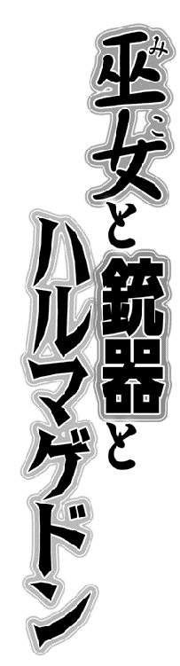
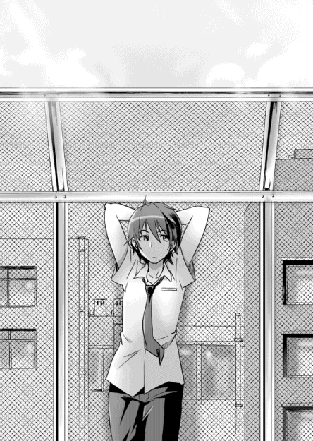

| 巫女と銃器とハルマゲドン (スマッシュ文庫) | |
| 木戸実験 | |
| PHP研究所 (2011) | |
巫女と銃器とハルマゲドン
著●木戸実験
イラスト●藤沢 孝

『巫女と銃器とハルマゲドン』 もくじ
平成三十某年。
日本政府は国防と平和的外交のためと謳い、ふたつの外国軍基地の国内誘致を決定する。
そしてそれは、この哀しい物語の始まりでもあった―――

快晴だったんだな――
空を見上げて、少女はそう思った。
少女の周囲の光景は殺伐としていた。弾痕や亀裂の入った道路、ひしゃげた上に黒焦げになったいくつもの乗用車、爆破か何かでその内部をさらすほどに抉られたビル......。
ほんの一年前は、立ち並ぶオフィスや飲食店でにぎわいを見せていたその大通りも、今は閑散としてゴーストタウンのようだ。
瓦礫の散乱するその大通りを、少女はひとり歩いていた。
頭上では、太陽が白く煌々と照っている。
少女の胸にそれは深く染みた。
近頃の彼女には、のんびりと空を眺めるような心の余裕がなかったのだ。
最後に見た快晴がいつだったか、少女は思い出すことができなかった。
「ああ、そういえば......」
そうつぶやいた少女は、去年の夏、高校の屋上でクラスメイトの天津真凪と話した日を思い出した。確かあの日も、こんな感じの快晴だった。
「天津くんか。無事に生きてるのかな」
あの日から今日まで、一年が経過している。
少女は学校に行かなくなっており、クラスメイトの消息は分からなかった。
あくまでも彼とはクラスメイトに過ぎなかったし、それ以上になる気もなかったけど、もう一度くらい話してみたかったかな、と少女は思った。
しかし、そんな少女のささやかな追想は――
......ご......ご、ごご
彼女に向かってくる三台の黒い汎用軍装車に、あえなくかき消された。
「ふう......また来たよ」
少女はうんざりしたような口調で、そうこぼした。
「ま、しょうがないか。目立つもんね、このカッコ」
自分のいでたちを、改めてかえりみる少女。
彼女がまとっているのは、元はオーソドックスな巫女装束だったものだ。
だが今は、下に履く緋袴こそ原型をとどめているが、上半身にまとう白衣はボロボロに破れ落ちていた。その両袖は肩から破れ去り、ノースリーブ状態になっている上に、腹部より下を覆う布も破れ落ちている。それを、胸のすぐ下あたりでムリヤリ注連縄で縛っているため、遠目にはただの真っ白なスポーツブラである。
くわえて目をひくのは、彼女の左腕。指の先から上腕にかけて、ぐるぐるに包帯が巻かれている。腰まで伸びる見事な黒髪も、包帯や白衣との対比でより深い色に見える。
「服装、考えなきゃいけないのかな......でも、これ以外だとヤバいんだよね」
そう言いつつ、少女は素早く周囲を見回し、地形の確認をする。
少女は車道に、それも交差点の真ん中に立っていた。ハンヴィーたちは北側から少女に向かって、横一線に並んで走ってきていた。そのいずれの車上にも、黒いボディアーマーの男が半身を乗り出して機関銃をかまえている。
その距離、数百メートルほど。
「敵機は三台か、ちょっとキツいな。でもまだ距離があるから......」
少女は、交差点脇に建っているマンションを見た。
交差点から見て北東の位置に建つそれは、北へ伸びる道路に沿って南北に長く横たわっていて、まるで長い城壁のような威圧感があった。
「このマンション、使わせてもらおうかな。まだ誰か住んでたら、ごめんね」
そう言いながら少女は、右手を緋袴の中に入れ、黄色いスプレー缶のようなものを取り出した。缶には『M18 SMOKE YELLOW』と書いてある。
「使う前に振ったりするのかな、これ？ 使用法は書いてないから分かんないな」
いつか見た戦争映画を思い出しながら、少女は缶に付属しているピンを口で引き抜き、思いきりハンヴィーのほうへ投げた。
ハンヴィー隊はそれを手榴弾か何かだと思ったのか、機関銃をかまえる男たちが車内へと引っこみ、わずかに徐行する様子が見える。
しかし缶は爆発することなく、空中で黄色い煙を噴射した。
巻き起こる煙は、少女とハンヴィー隊の間の数百メートルに黄色いカーテンを作る。
「おー、パクった発煙筒だから使い方知らなかったけど、あれでいいみたいね」
と、そこで少女は何かに気づき、横に跳んだ。
太鼓を叩くような軽快な音が断続的に響き、少女が立っていた場所にいくつもの火花が散った。
見れば、アスファルトの地面に、彫刻刀で抉ったような痕跡が多数できている。
「撃ってきたわね」
その痕跡は、機関銃の弾痕。
三台の機関銃が同時に火を吹いているのか、氷雨のように地面がパラパラと鳴っている。
煙幕が効を奏しているのか、少女とはまるで無関係の位置を、弾丸は次々と抉る。
......ぶぅうぅ...ん......
ハンヴィーのエンジン音が、再び空気を揺るがす。
敵が確実に近づいてきている。
彼らはおそらく、機関銃以外にもいくつもの武器を持っているだろう。
少女は先ほどの煙幕の他は、なんの装備もない丸腰の状態。
常識で考えれば、勝てるわけがない、逃げおおせるわけもない、絶望的な状況。
だが、少女は―――
「天機降臨、ってね」
不敵に笑っていた。
さざめく弾丸の雨音の中、少女は包帯巻きの左腕をゆっくりと掲げた。
その手の先にあるものは、先ほど彼女が見ていたマンション。
目を閉じ、肺腑の奥から絞り出すように深い息を吐く少女。
ゆっくりと、そして静かに、彼女の体は光を帯びる。
その光に呼応するように、マンションが震動を始めた。
どおぉおぉお......
地鳴りのような音があたりに響いたかと思うと、マンションに異変が起こった。
壁にびしりと亀裂が走り、辞書でも開くように、マンションが左右真っ二つに裂けたのである。
そして、マンションの断面を外気にさらしながら、裂けた一方が道路上に倒れ込む。
ちょうどそれは、ハンヴィー隊の交差点への侵入をはばむ壁となった―――
そのときハンヴィー隊は、煙幕の中を疾駆していた。
彼らに慢心がなかったとは言えない。
相手はろくに武装している様子もない少女である。
彼女が煙幕を張った意味も、逃げるための時間稼ぎくらいにしか思っていなかった。
この煙から出れば、逃げる少女の背中か少女の死体が見られるに違いない、そんなふうに考えていた。
しかしそうではなかった。
煙の向こうには、突如として巨大な障害物が出現していた。
三台とも急ブレーキをかけたが、いずれも激突が避けられるスピードにはならなかった―――
ハンヴィーとマンションの衝突音を聞いて、少女は満面の笑みを浮かべ、
「いぇーい！ 勝利！」
壁面の向こうに向けて、思いきり右手の中指を立てた。
少女は、お世辞にも行儀のいい性格とは言えなかった。
少女の名は武美雷。
不思議な能力で何者かと戦っている彼女が、この物語の主人公・天津真凪と再会するのは、この十分ほど後のことであった。
どうせなら英雄になりたい。
それは誰もが考えることじゃないかと思う。
常人にできないようなことを成し遂げる、圧倒的な人物。
でも、それが具体性を帯びたことなんかない。
快晴の空の下、学校の屋上の金網柵にもたれ、僕はぼんやりしていた。
照りつける陽光が、汗の浮く体をゆっくりと浄化していくような、そんな感覚をいだく夏の放課後。グラウンドや体育館の部活の発声が、少しくぐもって聞こえている。
「長びいてるな、面談......」
今日は、成績や出席日数に問題のある生徒の保護者が、呼び出しをくらう日。
本当は三者面談なので、僕も父と一緒に担任の前に座っていなければいけなかったのだが、廊下で父と順番を待っているうちに、いたたまれず逃げ出してしまっていた。
携帯の着信履歴には、父からの着信が数分刻みで鬼のように並んでいたのだが、数十分ほど前からそれも止んでいるので、どうやら狙い通りに僕不在で面談が始まっているのだろう。
高校二年生の夏というのは、どうやらみんなが自分の進路と向き合いだす時期らしい。夏期講習でどこそこの予備校に行くだとか、どこそこの難関大学はこの学部が比較的入りやすいだとか、クラスは受験話でもちきりになってしまっている。
だけど、僕はその輪に入れないでいた。

〝経済的に混迷しているこの国ですが、君たちはしっかり勉強して、立派な大人になってください。そのためのいい大学、いい教育です〟......進路相談の教師が説くそんな話は、とっくに幻想神話のたぐいだと僕は思う。
大学を出ても、星の数ほどの価値観に翻弄され、生きかたに迷って右往左往する大人たちばかり。何を成し遂げれば、立派な大人なのか、けっきょく大人自身も分かっていない。
英雄像に個人差がありすぎる時代。
だから、僕らは万人の英雄になんてなれない。
もちろん、英雄らしきものになるために努力し続けることが貴いことなのかもしれないが、あいまいなゴールのために重ねる努力に意味はあるのか？
そんな考えの僕が、まじめに勉学に取り組めるわけもなく、今日の三者面談に至ったというわけだ。でも、そんな状況になってなお、僕はまるで自分の人生から眼をそらすように、逃げだしてしまっていた。
後ろ向きで、独善的で、どうしようもないことにいらいらして――
ときどき僕は、戦争をイメージする。
フラストレーションに任せて、軍用ハンヴィーの車上からマシンガンを撃ちまくる僕。戦場を駆け抜ける爽快感と、敵を倒して得られるきわめてシンプルな優越感と達成感。
そんな非日常を妄想して、憂さを紛らすのだ。
しかしそんな陰湿な妄想にかられたときは、決まって後から自己嫌悪に陥る。
「ネクラすぎるよな、これはさすがに......」
蝉の声が急に質量を増した気がした。
蝉が嘲笑するわけもないのだが、少しだけ恥ずかしい心地になった。
戦場妄想を振り払うように、金網ごしに街を見渡す。
街はとりたてて変わった様子もなく、夏の暑さにうだっているかのように、その喧噪をひそめていた。玄界灘を臨む博多湾沿岸に、今日も二つの基地が建設中で、工事音が夏の空に響いていた。
「あれ、天津？ あんたも面談ブチったの？」
ふいに声をかけられ、屋上に目を戻す。
そこには、同じクラスの少女が屋上のペントハウスからこちらに向かって、だらだらと歩いてくる姿があった。僕からも彼女に声をかける。
「武......お前も面談組なのか。勉強できそうなのに」
「あはは、巫女って資格いらないから、勉強とかテキトーになっちゃうんだー」
彼女は武美雷。
ここ武宮高校にほど近い武宮神社の一人娘で、校内でも評判の長身痩躯のクールビューティー。大和撫子かくありきとでもいうべき流麗な黒髪を、今日も腰のあたりまで垂らしている。彼女が家の手伝いで巫女装束に身を包むとき、世界中どこに出しても恥ずかしくない巫女が完成する。
まあ、しかし彼女が世界水準の巫女になるには、少しばかり言動に問題があったりする。
「なんか、ここあっついなー。こんなとこいたら、五分で汗だくになるわ。天津はずっとここにいたの？ 匂いフェチなの、自分の？」
返答する気の一切起こらない問いを放った彼女は、制服のスカートに外気を入れようと、ふぁさふぁさやっている。
そんな巫女がいるか。
「武、零点な。女子的にも、巫女的にも」
「えー、きびしーな。じゃー、何？ 天津はクソ暑いの我慢して、腋とかに汗疹こさえてる女がいいって言うの？」
「女子は、どんなに汗かいても皮膚病にはならないって説があってだな」
「その説って、いつもフィギュア持ち歩いてる三澤でしょ？ あいつの言う女子って、三次元未満もカウントされてるから、フル無視でいいわよ。ってか、あんた分かってて言ってるでしょ」
「はは、まぁね。あれ、左手はケガでもしたのか？」
彼女の左手は包帯でぐるぐる巻きになっていた。
新しい包帯の白さが、ブレザー制服の紺色との対比で、妙に印象的だ。
「あぁ、これ？ ちょっと神事の手伝いで......まあ、いいじゃない。ところで、包帯って萌え要素なんでしょ？ 使用済み持って帰る？ おいしいよ、たぶん」
「武、それは萌えでなく、特殊系の性癖だ」
こんな感じで、彼女の言動は巫女のイメージから大きく逸脱していた。それは天真爛漫かつエキセントリックなもので、わが校の夢見がちな男子の巫女観をおおいに粉砕したのだった。
僕も最初の頃は、彼女のクールな外見と奔放な言動のギャップに面くらったものだが、慣れるとそれは彼女の魅力だと思えるようになり、実のところ今は好意さえ持っている。なので、屋上で彼女と二人きりという今のこの状況に、少なからず僕の心拍は早まっており、平静を装って会話をするのにけっこう必死だったりする。
そんな僕の水面下の思いを知るはずもない彼女は、楽しそうにあたりさわりのない会話を僕としばらく続けていた。
今はいい、これで。ただのクラスメイトで。
そんなふうに思いながら話していると、ふと会話が途切れ、
「あれ？」
彼女は何かに気がついたらしく、僕から少し視線をずらした。その目は僕を飛び越えて、博多湾沿岸へ向けられているようだった。
「基地、もうだいぶできてるんだね」
彼女は工事中のふたつの基地を見ていた。
基地はまだ未完成ながら、福岡市の中央部を流れる那珂川を挟んで、河口に双璧をなすように威風堂々と並び立っている。
「反対運動はまだやってるみたいだけど、このまま建っちゃうんじゃないかな」
そう答えた僕に対して、彼女はどこか物憂げな表情を浮かべ、
「そっか、でもふたつもいらないわよね」
「なんか『東アジア圏の平和維持のために両軍の基地が必要不可欠！』とか首相が虚ろな目で言ってたみたいだよ、先週の会見で。誰に言わされてるんだかね」
「両軍って、アメリカと中国......だっけ？」
「実体はね。いちおうは、環太平洋平和維持連合軍（アメリカ）と東亜圏友好軍（中国）って名前で、少しだけど他国の軍も入ってるらしいよ。西側の基地が連合軍（米国）で、東側が友好軍（中国）。東アジアで暗躍してるテロ組織『ダウト・ライズ』から人々を守るんだとさ」
「でもさ、なんかおかしくない？ 日本で『ダウト・ライズ』のテロ事件なんて起こったことないじゃない。なんで日本に基地を建てるのさ？」
「知らないよ。だいたい『ダウト・ライズ』自体がどんな組織なのか、いまいち分かってないみたいだし。米中の平和的に見せかけた単なる侵略じゃないかって、みんな言ってる。もうそれに抗弁する外交力が、日本には残ってないんだろうね」
「ひどい話」
彼女はそう言ってうつむくと、金網に体をもたせかけた。
その姿は、無力感や倦怠感がないまぜになって、虚脱してしまったように見えた。
基地上空を飛ぶジェット機の音が、妙な圧力をもって僕らの頭上にのしかかってくる。
しまったな、暗い時事ネタに踏みこむんじゃなかった。
確かに、ここ何年かで報道された日本の弱体化は、目を覆いたくなるものばかりだった。金融政策の失敗による経済の失墜、短命の首相の連続で混乱する国政、国民年金や生活保護といった福祉制度の大幅な縮小......最近は気が滅入るので、テレビをつけてもニュースを見ないようになっている。
日本は終わりかけているのではないか――そんな疑念を直視しないように、僕ら高校生の間で時事の話は暗黙のタブーになっていたのだ。
タブーの代償で重くなった空気。何か明るい話をしなければ、そう思って僕があれやこれやと考えていると、
「なんてねー、しんみりしちった、ごめん！ 別にどーでもいいことだよね、あたしらにどうこうできる問題でもないし。なんか違う話しよーか」
そう言って、彼女のほうから空気を入れかえてきた。
僕はもちろん、渡りに船とばかりにそれに乗っかっていくことにする。
「違う話って、なんかあるか？ 進路とか？」
「アホ、またしんみりする話に戻ってどーすんの。そーだ！ こーいうときは、恋バナをするのが、神社の作法だったわ」
「嘘をつくな。バチ当たるぞ、お前」
「子孫繁栄につながるお話にバチ当てる神様なんて、モグリに決まってるから大丈夫よ。それより天津は最近何かなかった？」
「最近って、別に何もないけど」
「コクられたりとか、なかった？」
「ねーよ、影も形も」
「あれ？ っかしーな。ヨーコ......南さんから呼び出されたりとかなかった？」
武の口からあがったクラスの女子を思い出す。地味な感じの子だ。
特に話したことなんかないが......。
「そういえば南さんって、よく朝の通学路の曲がり角で、食パンくわえて何かを待ってるよね。おびただしい眼光を放ってるから、角を曲がる前からそこにいるのが分かるんだ。今朝、三澤と激突してたよ」
あれ？ 武が頭痛でもおさえるように、額に手をあてている。
「ヨーコ......それで今日は三澤と仲よさげだったのか。イタい子。」
などと、ぶつぶつ言っている。
三澤や南さんの話はともかく、話題のベクトルが恋愛に向いたのは好都合かもしれない。
今ここで告白までいかないまでも、武に対して少しは思いが伝わるようなことを言っておきたい、そう思った。
「他人のことより、お前はどうなんだよ？ 武は、その......けっこうな美人だから、コクられたりとかねーのか」
「うん、まあちょいちょいあるよ、それはね」
心臓に被弾―――
――したかのように、ほんの一往復の会話で、動悸息切れが起こる。
なかなかに危険だ、恋愛トーク。落ち着いて次の言葉を返さないと。
「そそそ、そーかい、、、ちょち、ょちょ、ちょいちょいかい、。そいじゃ、そのうちの誰かとつきあっっったりとかしてるのかな」
失敗。
二度と発音できないような、怪しい呪文を唱えてしまった。
彼女はそんな僕を見て、少しだけ困惑したような顔をしたが、すぐにいつものクールで人を食ったような笑みをたたえた表情に戻って、
「ははは、そう狼狽えるなＤＴ。学園のアイドルは、そう簡単に誰かとつきあったりしないからさ」
そう答えた。
彼女はフリー。その情報によって僕の思考は一気に冷静さを取り戻した。まあ、そんな即物的な自分に、少し嫌気がささないでもないが。
「アイドルって、自分で言うか、フツー？」
「いーのよ、あたし級が下手に自己卑下したって、イヤミになるだけなんだからさ。それに......」
尊大なまでの自信を隠しもしない彼女は、そこでいったん言葉を切り、表情を少しだけ曇らせて、こう続けた。
「それにさ、あたし巫女やアイドル以前に神様だからね、あたし自身は色恋に関わっちゃいけないんだ」
............えーっと......？
「オーケー、武、少し日陰に入ろう。今日は暑いからな」
「暑さにやられて言ってんじゃないわよ、ひょーろくダマ。バチ当てるわよ」
やべえ。時代がかった言葉のチョイスも恐ろしいが、それより武の目がマジだ。
「武、お前、まさかマジで言ってんのか」
「マジよ。神様よ、あたし」
「お前が家にいる間は、武宮神社の本殿にはお前が御本尊として座ってるってことか？」
「御本尊は寺よ。それを言うなら御神体」
「どっちでもいいよ、オレは神道関係者じゃないし」
「昨今の日本国民の神仏への関心の薄さをかいま見たわ。まあ、いいわ。あたしはそんなレベルの低い偶像的なものじゃないし。もっとこう、すごい神様なの」
「まいったな......こういうのって脳外科でいいのか？」
携帯で救急要請するのを本気で考え始める僕を、彼女は押しとどめる。
「信じらんないっていうなら、それはそれでいい。だから公的機関とかやめて」
大真面目なトーンでそう言った彼女は、少しだけ寂しげな感じだった。
「なんか、オレが分からず屋みたいな言いかただな、別にいいけどさ。まあでも、オレも少し暑くなってきたし、日陰に行こう、とりあえず、な？」
そう言って彼女をなだめすかしていると、ふと、ペントハウスのほうに人影があるのに気がついた。
目をやるとそこには、肩ほどで切りそろえられた髪をふわっと揺らした、長身でりりしい雰囲気のメガネ少女が立っていた。
「あ......リカ、いつからそこにいたの？」
武が少女にそう声をかけた。
少女は香月リカといって、僕らのクラスの委員長だ。武とは仲のいい友人らしく、よく一緒にいるのを見かける。
香月が武の問いに答えて、
「いつだったかしらね、あなたたちの出来の悪い漫才が神様のくだりに入ったあたりだったと思うわ。つーか、美雷、あたし以外に神様ネタやめなさいって言ったでしょ。本当に病院につれていかれるわよ」
香月はそのりりしい雰囲気通りに、言動もクールな女だ。
その彼女が、武の危険な神様言動を常日頃のネタだと言ったことにひと安心する。
ありがとう、ジャストタイミングだ、香月。まさに今、病院につれていって、大恥かくとこだったよ。
そんな僕の蠢動する思考を知るはずもなく、武は鼻にかかった甘えた声で、香月との会話を継続している。
「リカ以外じゃ今日初めてだよ、あたし＝神様ネタは。それよりさ、どうしてここにいるの？ 委員会か何かで残ってたの？」
「あんたね、三者面談トバシて行方くらましといて、どうしても何もないでしょ。担任の先生からあんたがどこにいるか知らないかって携帯に電話があったから、心配で探してたのよ」
「やだー、リカってば、おかんっぽい」
「殺すわよ」
香月は、物騒な言葉とは裏腹に、武を慈しむような優しい目をしている。額にうっすらと浮かぶ汗から、武のことを案じて駆けずりまわっていたこともうかがえる。一方の武も、猫か何かのように香月にじゃれついている。
それはどこか微笑ましく柔らかな光景。そこに流れる空気は、実の姉妹のそれに似ている気がした。同級生だけど。
そんなことを思っていると、香月が僕のほうに目を向けて、
「さ、天津くんも教室に戻ろ。あなたのお父さんも探してたわよ」
「へーい」
戻れば担任と親に怒られるのは明らかだったが、まあ、いつまでも屋上で日焼けしててもしょうがない。青くさい逃避行の代償として、甘んじて受け入れるとしよう。
校舎に入り教室へ向かう途上、香月の目を盗んで、武が僕の耳元で囁いた。
「あたしのこと、美人って言ってくれたのは、ちょっとだけうれしかった」
耳にかかる彼女の吐息と言葉で、心臓がオーバーロード気味に拍動を高める。
彼女もほんのりと頬を赤く染めている......ような気がした。
武は僕にまったく脈がないわけじゃないのかもしれない―――
たったそれだけのことで胸がひどく高鳴るということが、僕の恋愛経験の浅さを露呈しているようで、少し恥ずかしかった。
ふと、廊下から横目に見た空には、いつのまにか入道雲が出ていた。
雨、降るかな、そう思った。
嫌悪も倦怠もなく、ただ漠然と、そう思っていた。
福岡から長崎へ、引っ越すことになった。
僕は、父の愛車・コンテナトラック『夢蓉丸』の助手席に座って、後ろへ後ろへと流れていく夕刻の景色をぼんやりと眺めていた。
先ほどまでカーラジオからはド演歌が流れていたが、いつのまにかニュースが始まっていて、福岡市北部の国道２０２号を走行する車にテロリストの襲撃があったことを報じている。暗いニュースは聞きたくない、そう思ってチューニングを他局へ合わせていると、運転している父さんが、
「おう、真凪、局を変えるのはええが、ＦＭはいかんぞ。トラック野郎はＡＭを聴くのが作法やけんの」
「そんな作法はないよ、父さん」
どこかで別の誰かとこんなやりとりをやった気もするが、まあいい。かまわずＦＭへとチューニングを合わせると、アイドルグループの退屈な音楽が車内を満たし始める。特に聴きたいわけでもなかったが、演歌や鬱なニュースよりずっといい。
チューニング・ボタンから手を離し、シートにもたれる。
軽薄なノリの音楽に父さんがいくらか不満げだが、父さんのセンスに合わせるわけにはいかない。なぜなら父さんはＶシネマの大ファンだからだ。
父さんの私服にラメや原色の入っていないモノはないし、油断すると髪にリーゼントやパンチパーマをあてて帰ってくる。運送業を営んでいるのだって、菅原文太の『トラック野郎』シリーズにインスパイアされたからだ。
正直、前時代的すぎて僕はついていけない。
「ぐふふ、待っとれよ、夢蓉丸。長崎のオレの実家に着いたら、お前を立派なデコトラに改造したるけん」
よからぬ欲望が、父さんの口から漏れる。
そんなショッカーも真っ青の非人道的改造を、看過するわけにはいかない。
「父さん、落ち着け。デコトラはほとんど車検を通らないんだぞ」
夢蓉丸が山道に入り、周囲の景色から建造物が消え、緑の木々ばかりになる。
どうにか無事に県境の飯場峠のあたりまで来れたらしい。
「ひとまず福岡からは脱出できそうやの、真凪」
父さんが前歯をのぞかせて、そう話しかけてきた。
「そう喜ばしいことでもないよ、父さん。テロリストたちが、いつ福岡以外をターゲットにするか分かったもんじゃないんだから」
そう答えた僕は、福岡の惨状を思い出していた。
去年の夏――武美雷と屋上で話したあの夏――の時点では、こんなメチャクチャになるとは思わなかった。
ふたつの基地が去年の十二月頃に完成すると、それに呼応するかのように、今年になって『ダウト・ライズ』が急に福岡での活動開始を宣言した。
そこからだ。福岡の治安が急落したのは。
ほぼ毎週のように、爆破テロや正体不明の集団による殺人事件が横行しはじめ、わずか三カ月ほどで死者は数百人を数えた。
政府は福岡に武力攻撃事態宣言を行い、自衛隊の国民保護活動への協力を呼びかけたのだが、実際の防衛活動は駐留している米国と中国の軍に主導権を握らせたようで、市内で自衛隊を見ることはほとんどなかった。
そして外国軍の防衛行為の実態といえば......。
「ったく、オレらの税金で基地を維持してるくせして、アメちゃんもチャイ公も何ひとつやりよらんばい」
そう父さんが毒づくように、いまだに軍は『ダウト・ライズ』に対して、大した成果がなく、破壊活動は引き続き横行している。それどころか、テロリストたちの国籍も目的も「現在調査中」と発表があるばかりで、依然として『ダウト・ライズ』は謎のヴェールに包まれた存在のままだ。住民はなぜ自分たちが理不尽な目に遭っているのか判然としないまま、今も日々を過ごしている。
僕も父さんに乗じるように毒づく。
「外国軍のやつら、市民の外出を禁じるとかだけだもんな。何が国民保護活動だよ」
福岡にいては危険だ、父さんの故郷の長崎へ行こう――昨日父さんがくだしたその判断は遅いくらいだったのかもしれない。しかし、その判断をためらっていた理由も分かる。
テロリストは、県外へ避難する車両や市民を特に標的にしていた。県外へつながる高速道路は爆破されていたし、県境あたりを走行する車両を狙うテロ事件のニュースも多かった。あるニュースでは、ここ一カ月のテロ事件の被害者のほとんどは、福岡からの脱出者だという。
では空路や海路はといえば、なぜか外国軍の管制下に入っており、民間人の利用はできなくなっていた。
住民は、ときどき銃撃戦の起こる福岡に暮らすか、命がけで陸路で脱出するか、という選択をしなくてはならなかった。
僕ら一家は後者を選択した。それほど有名でないルートを通ればいくらかリスクは少ないだろう、というやや希望的観測を含んだ逃走プランを立てて。
急なカーブの多い山道が続く。
体を右に左に傾けながら、薄暗い緑ばかりで変化のない景色を少しだけ退屈に思い始めていると、突然ばぁっと視界が開けた。
そこに広がっていた光景に、僕は思わず声を漏らしていた。
「わぁ......」
道路に沿って並ぶいくつもの満開の桜の木が、無数の花弁を音もなく散らしていた。
夕刻の橙色に染められた空の下、宙を舞うそれらは、まるで光を発しているかのように、薄紅色の軌跡を描いていた。
父さんがブレーキを踏み、夢蓉丸がスピードをぐっと落として走る。
「京子が死んだんも、こんな春の盛りやったな......」
ゆっくりと流れていく桜のある光景を眺めながら、父さんは死んだ母さんのことを追想している。
本来ならば、こんなところで徐行している場合ではないのだが、父さんの気持ちも理解できた。桜が静かに風に身を溶かすさまには、心の澱が薄れていくような心地よい平穏があった。ここに来るまでに、殺伐とした世界を見過ぎていたからだろうか。
運転席に漂いだしたゆるやかな空気を味わうように、目を閉じる。
と、ふいに背後から声がした。
「んゆー、お兄ちゃん、どこー？」
振り返ると、妹の名波が寝惚け眼をこすって、運転席とコンテナを結ぶ通用口から顔を出していた。つい今まで、コンテナ内のベッドでぐっすり眠っていたようだ。
ちなみに普通のコンテナトラックにこんな通用口は存在しない。夢蓉丸は父さんの手により、キャンピング・カーとしても使用できるように改造された特殊なトラックなのだ。コンテナ内にベッドが据えられたスペースがあったり、コンテナの天井にスライド式の窓が設けられていたりと、コンテナ内で生活ができるようになっている。
デコトラ改造は大反対の僕だが、こういう改造ならいいと思う。楽しいし。
まあ、それはさておき。
名波はまだ寝ぼけているようで、僕にすり寄ってきた。
「んゆー、元祖ムキムキマンだー」
「起きろ。ひどい人違いだ」
名波の肩をつかんで軽く揺さぶる。彼女の左側にだけ垂らしたサイドポニーがふらふらと揺れる。
「ふにゅにゅにゅ、あれ、お兄ちゃん？」
焦点のぼやけた目で、ゆるやかに目を覚ます名波。
今年中学に進学したばかりの彼女だが、まだまだあどけなさが残っている。
「起きたか、名波？ まだ福岡は出てないぞ」
「あれ、そうなんだ。なんかゆっくり走ってるから、もう長崎に着いてるのかと思った」
「あのな、出発したの昼過ぎで、今まだ夕方だぞ」
「あは、そうだったね。でもさ、福岡さえ出ちゃえば、とりあえず安全なんだよね」
「多分な」
とは言ったものの、正直それは何とも言えなかった。
「あー楽しみだなー、長崎のお婆ちゃん家。もう何年も行ってないもんね」
無邪気に今回の逃避行を楽しもうとする名波に、父さんが応じる。
「おうそうや、名波は精霊流しはまだ見たことないんやったかの。真凪が生まれてから、すぐ福岡に引っ越してきたけんの」
「精霊流し？」と名波。
「長崎の夏の行事での、仏さんを彼岸に送るんやが、キレイやど」
「へえ、夏が楽しみだね」
「そういや、京子......母さんが亡くなったんは福岡来てからやったから、母さんの精霊船はまだ出しとらんやったな。普通は初盆やから、ちょっと遅いかもしれんけど、今年出すか、母さんの精霊船」
父さんはそう言って、名波と長崎生活のプラン立てを楽しんでいる。
話題の精霊流しについては、僕もうっすらと覚えている。
精霊船を何人もの大人で神輿のように担ぎ、爆竹なんか鳴らしながら渡し場まで運ぶ、追悼のくせに意外と騒々しい行事だ。夕闇の中、橙の灯りに照らされた精霊船は、どこかあでやかに今も記憶に焼きついている。
精霊流しがもう一度見られるなら、今回の逃避行もそう悪いものではないかな、そんなことを思っていると、
「あれ？」
名波が何かに気がついたらしく、急にフロントガラスの向こうを指さしている。
「なんか......強そうな車が向かってきてる」
その指の先に目をやると、一台の黒い軍用ハンヴィーがゆっくりとこちらに向かってきているのが見えた。
「真凪、名波、コンテナに隠れんさい」
父さんが緊張感をともなった声で言った。
その緊張の理由は、僕にも分かった。ハンヴィーの車上にいる白人が、こちらに機関銃を向けていたのだ。
くそ、テロリストの奴ら、こんな閑道にまで伏せてたのか。
「え、あれ、敵なの？ どうして？」
名波は状況を整理できていないようで、少し混乱した様子を見せている。
「どうしても何もない。銃が向けられてるんだ。父さんの言う通りにしろ」
僕はそう言って、通用口からコンテナへ名波を押し込む。その僕に、父さんは背後からこう言った。
「真凪、物音が止むまで絶対に出てくるなよ。場合によっては父さん、あいつら踏みつぶしてでも、お前らを福岡から出したるけんの。安心して待っとれ」
「父さん......」
こういうとき――命を張る覚悟をした人間には、どんな言葉をかければいいのだろう？
僕は何も言えないまま、ただ父さんの顔を見つめていた。
しかしそんなわずかな間さえも叩き潰すかのように、乾いたドラムロールのような音がして、フロントガラスにいくつもひびが入った。
「ちっ！ いきなり撃ってきよった！ 真凪、はようコンテナに行かんね！」
父さんは吐き捨てるようにそう言って、ぐっとアクセルを踏み込んだ。
加速の慣性で体がふらつき、僕は父さんに何も言えないまま、倒れこむようにコンテナへ入ってしまった。
「任せろ、真凪。トラック野郎は、ワッパ（ハンドル）握れば戦場の覚悟よ」
そのとき、わずかに見えた父さんの背中は斜陽の逆光の中で、古くさいヒーローのようで頼もしかった。
..................
それからどれくらいの時間が経過しただろう？
いくらかの食料が積んである他には何もないコンテナの中は、深い深い暗闇に沈んでおり、息をひそめてその中にいるだけで精神的な圧迫感があった。その上、ときおり起こる車体の揺れや、外から聞こえてくる断続的な銃声は、必要以上にコンテナ内部にこだまする。名波はおびえて体の震えを止めることはなかった。
僕は名波の手を握りながら、ただ無心でいようと努めていた。これは虚構だ、だから心を乱すことなんてないんだ、と願望交じりの嘘をときどき自分の中で唱えたりして、心に平静をもたらそうと必死になっていた。
そんなふうにふたりで闇の中で身を縮めて、永い時間をやり過ごしていると、ある瞬間、しんとした静寂が耳につくようになっていた。夢蓉丸も停車しており、動き出す気配はない。
終わったのだろうか？ どういう結果であれ、終わったのだろうか？
ゆっくりと恐る恐る、僕は運転席への通用口のハッチに手をかけた。
「父さん？」
ハッチが開き、運転席へ出る。
運転席は、破損したフロントガラスやサイドガラスの小さな破片が大量に散らばっていた。もし明るいうちなら、ガラスが乱反射して綺麗だったかもしれないが、外はすっかり日が暮れていたので、それは情緒深い光景ではなく、スナック菓子を食い散らかしたような汚らしい印象さえ受ける。
運転席を見回しても、なぜか父さんはいなかった。死体になって外に引きずり出されているという最悪の可能性が頭をよぎった。
周囲の物音に十分に気をつけながら、ドアから外をうかがう。
外はすっかり暗くなっていた。
あたりには人の気配がなく、不気味に静かだった。
花火の後のような薄い煙がただよっていて、硝煙の匂いが鼻についた。
さっきのハンヴィーが道路脇の草むらで、怪獣にでも踏まれたかのようにひしゃげた姿で横転していた。そして......その中に数人の外国人の男たちの死体が、みっちりと詰まっていた。
死体は、変形した車体につぶされたようで、知恵の輪さながらにからまりあっていたのだ。
そのグロテスクさに僕は思わず目をそらした。
周囲のアスファルト道路のいくつもの亀裂や弾痕が、ここで熾烈な戦いがあったことを雄弁に語っている。
日が落ちたせいなのか、外気は少しひやりとしていた。
無数の桜の花びらが、蛍か雪のように虚空を舞っている。
周辺に父の姿は見あたらず、父さん、父さんと呼びかけてみたが、それに応える者もいなかった。
父の姿を求めて、夢蓉丸周辺を歩き回っていると、ふと、月光で地面に写った夢蓉丸の影が不自然な形をしていることに気がついた。それはまるで、トラックの頭部から熊の爪でも生えているかのような、いかめしい影。
異形の影の正体を確かめに、夢蓉丸の前方に廻りこんだ僕が見たものは、
絢爛豪華な装備に身を包み、要塞を思わせるようなギラギラのデコトラへと姿を変えた夢蓉丸だった―――
香月リカは、近所の柳橋市場へ買い物に来ていた。
真面目でやや近寄りがたい雰囲気の彼女だが、実は人情味や下町風情が好きで、食材の買い物はスーパーではなく、いつもおっちゃんおばちゃんとの触れあいがある市場だった。しかし今、その市場の店も約半数が閉店し、もの寂しい感じだ。
「不況でも活気あったのに......ちょっと悲しいな、こういうの」
福岡の流通事情は悪化していた。
スーパーや百貨店の生鮮売り場では、全体的に陳列物が減っていたし、日によっては肉や野菜が置いていないときもある。漁港が近いせいか、魚介類だけはテロ以前とあまり変わっていないが、全体として食料事情は悪くなっていると言うしかなかった。
アーケードが太陽光を遮っていて薄暗い市場の中を、香月は店を探して歩いた。
今日はできればおいしいものを買って帰りたい、家族みんなのために――そんなことを思っていると、
「おう！ リカちゃん、今日はひとりかい？ 寄っていかんね！」
魚屋の店頭から、初老の店主が香月に声をかけてきた。
「こんにちは、セイジさん。何かいいの入ってる？」
「タチウオがあがったとよ。時期的に少し早いっちゃけど」
「へぇ、食べたことないな、おいしいの？」
「そりゃ、うまいよ。脂もバッチリたい。さばくのがちょっと難しいけん、刺身で食うならワシがやっちゃるよ」
「じゃあ、さばいてくれる？ そうね、半身だけもらえるかしら」
「あれ？ 半身でいいと？ リカちゃんち、五人家族やなかったっけ？」
「ちょっとね」
そう言って、香月がうかない表情になると、店主は察したようにそれ以上立ち入ったことは訊かなかった。
「おし！ ほんならリカちゃんのために、腕ばふるったるったい！」
そう言って、気分を変えるように店主は満面に笑みを作りながら、その名の通り刀のように銀に光る細長い魚を、店奥のまな板に置いて、包丁をふるい始めた。
その動きは流麗でよどみなく、香月はついぼんやりとそれに見とれてしまった。
昨日、香月の母親が何者かに足を撃たれて入院した。そんな現実を店主の技は一時的に忘れさせてくれるほどに見事だった。
店主は、さばいたタチウオを包むと、香月のもとに戻ってきた。
「ほいよ、リカちゃん。何があったか知らんけど、元気出さんね」
包みを差し出しながら店主がかけてきた言葉に、香月は少し目頭が熱くなった。
口を開けば、自分のつらい思いや不安が全部こぼれ出てしまいそうで、香月は懸命に口を結んで、店主の包みを受け取った。
このご時世、他人の境遇を改善できる人間などいない。みんな自分のことで手一杯だ。だから気づかう言葉をかけてくれただけでも、感謝しなくちゃいけないんだ、香月はそう思って、気丈に心情の吐露をこらえた。
タチウオの代金を渡し、香月が去ろうとしたとき、店主がその背中に声をかけてきた。
「リカちゃんは、まだ福岡にいるんかね？」
「うん、まだ引っ越す予定はないけど、それがどうしたの？」
「いや、そんならええっちゃけど......ほれ、テロのせいか、最近この辺も寂しくなってきとるけん」
「そうね、天神のほうじゃ、百貨店の破損がひどくて閉鎖したってね」
「そうたい。中洲もひどかもんや。どこも人通りが減って、残っとるんは地元に愛着のある年寄りばっかりばい」
「セイジさんはどうするの？」
「ワシは、最期までここにおろうと思っとる。どこに逃げたって、けっきょく同じたい。県境はテロの巣やって言うしの。かあちゃんに先立たれたワシには、もうこの店くらいしか愛情の持てるもんがないとよ」
そう言って、店主は力強く笑った。
香月はその笑顔に、温かくそして悲しい何かが胸の底からこみ上げたが、
「そっか」
なるべく表情にそれが出ないよう、言葉少なに会話を切りあげた。
店主の強さも弱さも、自分の涙で汚してはいけない、香月はそう思った。
食材をエコバックで提げて、香月は家路を歩んでいる。
さっきの店主の言葉をかみしめながら、自分が福岡にとどまる理由を思い返していた。
といってもそれは、福岡外に親類縁者がなく、頼り先がないという理由くらいで、店主ほど悲痛なものがあるわけではなかった。
「でも、そうやってダラダラここにいたから、お母さんが怪我しちゃったのかな」
父や弟たちと真剣に考えないといけない、香月はそう思った。このまま福岡に住むのか、意を決して逃げるのか。
母の怪我も命にかかわるほどではないらしく、歩けるようにもなるということだから、もしその気なら自分たちは県外に逃げることもできるはずなのだ。
「今夜にでも、みんなでちゃんと話さないとね」
香月はそうつぶやいて、うつむいていた顔を正面に向けた。
そこは武宮高校の前の通りだった。
もともと表通りに面していない通りで、学生を除けばそれほど人の往来がない場所だが、しばらく休校が続いているせいか、普段にましてひっそりとしていた。
ふと、この通りを抜けたところに、親友の武美雷の住む武宮神社があることを、香月は思い出した。
「急だけど、寄ってみようかな......美雷のトコ」
もしかすると、今夜にも香月家は福岡から出ることを決めるかもしれない。
会えるうちに美雷には会っておきたい、そう思うと、通りを抜ける歩みも自然と速くなった。自分の刻む歩みが通りに反響するのを聞きながら、親友と何を話そうか香月は考えていた。
しかし――
親友のことをあれこれ考える香月の思考は、あることに気づき停止した。
通りに反響する足音に、香月以外のものが混在していたのだ。
誰かが香月の後ろを歩いてきていた。
そのことは通りに人がいない事実と重なって、香月の血液を急激に冷たいものにした。
女性としての不安にさいなまれながら、おそるおそる振り向くとそこには、パーカーのフードをかぶったひとりの黒人が歩いてきていた。
男は二メートルはあろうかという長身で、パンパンに膨らんだパーカーが、その下に頑強な筋肉が存在していることを物語っていた。あるいは男は軍人なのかもしれない。しかし、フードの下の爛々とした眼球は、抑制のきいた軍人のそれではなく、獣が獲物に対して向けるような、奔放で貪欲で攻撃的な印象を受けるものだった。
香月はそれにぞくりと身を震わせた。
（あたし......狙われてる？）
周囲には、先ほどと変わらず人の気配はない。
学校もおそらく今は無人。
今ここで襲われたら誰も助けてくれない、そう思うと香月は駆けだしていた。
するとその男も、香月を追って駆けだした。
（ああ、やっぱりそうなんだ......）
男の香月への害意が、明らかなものになった。
人種的な脚力の違いか、男の足音がぐんぐん大きく近くなってくる。
絶対に追いつかれると悟った香月は、携帯を取り出し、震える手でメモリを探った。
（誰か......誰か助けてくれるような......）
香月は、メモリの中から武美雷を選び、通話ボタンを押した。
彼女は親友だし、何よりここから一番近くに住んでいる。
（お願い、出て）
彼女は祈るように、コール音を聞いた。
がちゃり、と着信する音が聞こえるや否や、香月はまくしたてた。
「美雷！ 助け......」
しかし、それは無情にも中断された。
香月に追いついた男が、彼女の携帯を奪い取ったのである。
武宮高校の校舎裏まで、香月はひきずりこまれていた。
途中何度も、逃げようともがいたり、助けを呼ぼうと叫ぼうとしたが、そのたびに男は腹や顔を殴りつけ、香月から抵抗の意思をはぎとっていった。
男は日本語ができないようで、何度も低音で脅し文句らしき英語を囁きかけてきたが、香月は『シャラップ』以外は理解できなかった。
高校にはまるでヒト気がなく、その不気味な静けさに、香月は墓場や刑場を連想した。
顔を殴られたせいか、意識がぼんやりとしており、男が自分の衣服を破き始める音も、彼女はどことなく遠くに聞いていた。
（欲望を満たした後は、殺されるのかな......？）
自分の体に行われようとしている蛮行よりも、もし命まで奪られたら家族がどんなに悲しい思いをするだろう、と想像することがつらかった。
男の息は刻々と荒くなってきており、獣畜生のようだ。
（あたし、何か悪いことでもしたかな？）
香月は、自分の人生を振り返り、罪科を探した。
一方的な暴行を受けなければならないような罪科を。
（ああ、だめだ。ないや。理不尽なだけだ、こんなの）
そう思うと、目の前の男への憎悪がわきあがってきた。
どうしてこんな目に遭わなければいけないのか、こいつはどうして自分に乱暴をしようとするのか、自分が消えれば遺された家族はどんな思いになるのか――頭の中を様々な思いが渦巻き、すべて憎悪へと転嫁されていく。
（こんなやつ、死ねばいいのに）
そう思ったとき、香月の体が薄く発光を始めた。
ぱき――
どこかで、硬質な何かが割れる澄んだ音がする。
香月の体の突然の変化にひるんだのか、男は少し身を起こし、何か英語を発している。
しかしそれは、香月にとって意味のとれない雑音に過ぎなかった。
「うるさいな。ネイティブの英語なんて分かんないのよ」
憎悪といらだたしさから、香月がそうつぶやいたときだった。
ひゅっ――
風を切る音がして、黒人の男の首が地面に転がった。
その場に残った首の根元は、まるで斬首刑の後の死体のように、キレイに切り立った断面を空に向けていた。
しかしその断面も、そこから噴き出した噴水花火のような鮮血で、すぐに見えなくなった。真下にいた香月が、紅く染まってゆく。
べたべたに汚れていく体もそのままに、香月は茫然としていた。
「何......今の？」
香月はその一瞬の光景を、目にとらえていた。
男の頭上から、まるでギロチンの刃のような形状の巨大なガラス片が飛来して、男の首をはねたのだ。
そのガラス片は、今は地面に突き刺さっていた
香月はただ混乱していた。
誰かが助けてくれたのだろうか？ しかし、ガラス片は空から飛んできたように見えた。校舎内に誰かいたのだろうか？ あるいは事故？
そんな乱れる思考を中座するように、香月の体に変化が訪れた。
先ほどから香月の体を包んでいる薄い光が、その放射量を増し始めたのだ。
「ええ......何？」
体の輪郭も見えないほどに発光が強くなり、香月の視界が、まばゆい光に閉ざされる。
「これ、何よ？ 意味分かんない」
光に目がくらむのと同時に、意識があらがいがたく遠のいてゆく。
「やだよぉ......」
しばらくすると、光は消え、香月の姿もなくなっていた。
その日以来、彼女は家に帰っていない。

あの春から数カ月。
父さんがいなくなったまま、季節はまた夏になっていた。
あの夜、夢蓉丸周辺の草むらから、近くにあった崖まで、徒歩で探せるところはすべて探したと思う。しかし父さんを、あの山道で見かけることはなかった。
何度思い返しても、不可解なことだらけだった。
敵のハンヴィーがひしゃげて横転していたのは、夢蓉丸が踏み転がしたという説明ができるのかもしれない。
しかし、父さんが消えたことが分からない。生きていたとして、車や僕らを放棄してどこに行ったのだろう？ 考えたくないことだが、もし死んでいたとしても、死体がないのはおかしい。
さらに夢蓉丸が、一時間ほどでデコトラになっていたというのも奇妙な話だ。
今の夢蓉丸は、『トラック野郎』の一番星号顔負けのアート・デコレーションが施されているが、あの山道にこんな装備が隠してあったとは思えない。この豪壮な装備はどこから持って来たのだろう？ もっと根本的な問題として、襲撃を受けた後で最初にすることが、のんきに愛車のデコトラ改造というのは、常識的な人間の行動としてはかなり無理がある。
あの夜は、そんな答えの出ない疑問を山盛り抱えて、名波とコンテナで過ごした。
名波は、僕が話して聞かせる外の状況から、父さんの生存を絶望的と感じたのか、一晩泣き続けた。泣きじゃくる妹をなだめながら、僕も過度な希望を持つのはやめよう、と思った。
そしてその翌朝。
目が覚めると、隣に寝ていた名波がいなかった。
どこにいったのかと少し焦っていると、なぜかコンテナがガタガタと揺れていることに気がつき、もしやと思い運転席をのぞいてみると、名波がハンドルを握っていた。
――お兄ちゃん、とにかくこの山を越えよう――
そんなことを思い出しながら、快晴の空の下、僕は夢蓉丸のコンテナの上で、ライフルの掃除をしていた。
夢蓉丸は今、名波の運転で川沿いの道をゆっくりと走っている。
「コンテナの中でやればよかったかな」
日光がじりじりと肌を焼くような陽気だが、風が出ていて気持ちが良さそうだと思って、コンテナ上で銃の分解を始めてみれば、風や車体の揺れでハンパなくやりにくい。おまけに、コンテナ上にでかでかと書かれた「男一匹一人旅」という文字がやたらと目につき、うっとうしくてしょうがない。
やっぱり中でやろうと思い、部品を片づけ始めていると、運転席から名波が声をかけてきた。
「そろそろお昼にしよっか、お兄ちゃん」
河川敷の少し広いところで、昼食をとることにした。
名波が携帯ガスコンロに火を入れて、何やらガサガサと準備をしている。
僕は、地べたに腰かけてぼんやりとそれを眺めていた。
目の前の川は、世界が荒れていることなど知らぬように、さらさらと穏やかに流れていて、ときおり水面からの日光の反射が目に飛びこむ。
「那珂川は変わらないな......」
そう、僕の目の前にある川は那珂川。
僕らはまだ福岡にいる。
あの日、僕らは山を越えようとしたが、それはかなわなかったのだ。
初めてハンドルを握ったという名波の運転は、幼少からよく助手席に座っていたせいなのか妙にうまく、父不在でも長崎まで行けそうな気がした。
しかし、山道を少し進んだところで、その認識は粉砕された。
一台の戦車が、何台かの黒ハンヴィーを従えて、山道の真ん中に鎮座していたのだ。
それらは僕らを見つけると、問答無用で撃ってきた。
名波がとっさに夢蓉丸のハンドルを切り、素早く山道を逆行したので、そいつらをなんとか振りきることができたのだが、コンテナのリアドアは銃創で穴だらけになっていた。
けっきょく福岡市内に逆戻りした僕らは、行くあてもなく、ただ自分たちの無力さを重い荷物のようにうとましく思っていた......。
「お兄ちゃん。お兄ちゃん！ ご飯できたよ」
名波の声で、はっと意識が回想から戻ってくる。
目の前に、コッヘル（多目的携帯容器）いっぱいのラーメンが置かれていた。
そのあまりにも慣れ親しんだ香りと見た目に、少しばかりうんざりする。
「また、棒ラーメンか......なぜかスープがヌメるんだよな、コレ」
「何よ、いいじゃない棒ラーメン、早くてうまくて安いのよ」
「それは牛丼だ」
不平をたれながらも、しかたないかと思う。
今の僕らは、父さんの遺した貯金で生きている。といっても、もともと大きな額でない上に、そこから夢蓉丸の修繕費を出したので、こんな食生活になるのも必然だった。
しかも、その修繕さえ予算の関係上、機能的な部分の復元に終始してしまった（それにしたって、父の懇意の車屋に頼みこんで、かなりまけてもらっている）。具体的に言うと、フロントガラスやエンジンの修繕費を払ったら、デコレーションの撤去まで費用が回らなかったのだ。
『御意見無用』と書かれたアンドンが、今も車体フロント中央にわがもの顔で居座っているのが忌々しい。
ため息をつきつつ、箸でスープをかきまわしていると、信じがたいものが目についた。
「名波、中に白い物体が見えるんだけど」
「ふふふ、今日はなんと餅が入ってるんだよ、お雑煮みたいでしょ」
「餅が溶けだして、ヌメりが倍増している......」
その常軌を逸した粘度に、思わずゴクリと喉を鳴らす。
箸で麺を少しだけ持ち上げると、泥のようにからんだスープがたれて、ボトンと音がした。液体の音じゃねえ。
「もう、お兄ちゃん文句ばっかり！ 名波、イラッときた！ お薬味あげない！」
そう言って、名波は明らかにその辺で摘んできた雑草を取りだす。
いるか、そんなもん。
「おい名波、雑草なんて食ったら腹壊すぞ」
「壊さないよ。これ、ノビルっていってネギの仲間なの。家でもよく使ってたのよ」
母さんが死んでからというもの、我が家の料理はほとんど名波がやっていた。言われてみれば、スーパーで見ないような食材がけっこう食卓に並んでいたような。
そんなことを思い出す僕をよそに、名波はノビル入りラーメンをすすっている。
「ま、メシがあるだけありがたいけどな」
そう言って、僕もラーメンに手をつけた。
食事の後、僕らは夢蓉丸の車内でゆっくりとお茶を飲んでいた。
銃声も悲鳴も聞こえない、落ち着いた夏の昼下がり。
今日は何も起こらないか......。
「商売あがったりだな、名波」
「うん。でも、ホントはそれっていいことなんだよね」
今、僕らは学校にも行かずに、火事場泥棒を生業にしていた。
いや、テロ現場泥棒といったほうが正確だろうか。
誰よりも早く、事件の現場に行って金目のものをゲットして、警察や軍が来ないうちに逃げる仕事。それが褒められるようなことではないのは重々分かっているが、未成年の僕らでは運送屋をやろうにも信用がない。僕らには今、武器を買うお金が必要なのだ。
あの山を越えるために――
「お兄ちゃん、武器は今どれくらいあるの？」
「えーと、アサルトライフルにグレネードランチャー、手榴弾が五個くらいかな」
「全部、王さんのとこから？」
「うん」
「あたし、あの人あんまり好きじゃない」
「おいおい、何言うんだ。いい人だよ」
王さんとは、福岡在住のミリタリーマニアの華人だ。
福岡がこんな状態になって、事業がダメになってしまったらしく、今は非合法に蒐集していた武器を市民に売って、メシを食っているらしい。
僕らは盗んだ金目の物を、彼に渡して武器と引き換えている。
本来なら、銃器はけっこうな金額なので、僕らがかすめるわずかな金品では、これだけの武器につりあわないはずなのだが、ちょっとした理由から僕らは優遇されていた。
と、運転席のドアがノックされた。
「真凪ー名波ー、ニーメンハオー」
この声は、王さんだ。
噂をすればなんとかというやつだろうか。名波との会話を聞かれていないか、心配になったが、王さんはいつもの人の良さそうな笑顔をしている。
僕は運転席から降りて、王さんに挨拶する。名波は降りてこなかったが。
王さんは長身で体格がいい。今日はその体躯に黒いカンフー服を上下に着ている。
「ニーハオ、王さん。どうしたの、今日は」
「あいやー、散歩してたアルよ。そしたら派手なトラックが見えたネ。これは真凪たちのトラックだと、ワタシ思たネ。挨拶きたヨ」
王さんは漫画の中国人みたいなインチキ日本語を話す。
彼に会うまでは、本当に『あいやー』とか言う中国人がいるとは思わなかった。
「そういえば王さん、あれはまだとっといてくれてる？ 戦車用のミサイル」
「ロケットよ、真凪。対戦車ロケット。ミサイルないアル」
「あ、そうなの？ 違いがよく分かんないや」
「自動追尾装置があるかないかよ。ロケットにはないよ」
王さんは武器のことになると、けっこう細かく教えてくれる。
「で、戦車用ロケットはまだあるの？」
「ノリンコ製の六九式のいいやつ、真凪のためにとってるアルよ」
「シェーシェーだ、王さん。絶対オレが買うから置いといてよ」
その戦車用ロケットが、僕の当面の目標だ。
戦車用兵器と手榴弾があれば、あの山でまた戦車に遭っても、きっと戦える。
「待ってるよ、真凪。トモダチ価格にしとくから、お父さんの仇を必ずとるんだよ」
実は、王さんには僕らの事情を多少話してある。
王さんはひどく同情して、僕らを優遇してくれる。この同情がなければ、僕らがこれだけの武器をそろえることはできなかっただろう。
正直、とても助けられてると思う。名波は、どうしてこの人が嫌いなんだろう？
「お兄ちゃん、車だすよ！」
名波が運転席から、戻れとせかしてくる。
王さんが少しいぶかしんだ顔で、
「あれま、トラックまだ名波が運転してるか？」
「まぁね、いいドライバーだよ」
本当は名波が「これはあたしの仕事よ！」と言って、かたくなにハンドルを放さないだけなのだが。まあ、運転技術が高いというのは嘘ではないし、いいけどさ。
「おまわりさん何も言わないか？」
「王さんも知ってるだろ？ 今、警察はまともにパトロールなんかやってないよ。外国の軍人も、事故さえ起こさなきゃ何も言ってこないし。その辺は、うまくやってるよ」
などと話していると、再び運転席から怒号が飛んでくる。
「お兄ちゃん！」
「おーコワ。ごめんね、王さん。また今度」
「あー、いいよいいよ、ワタシもそろそろ行くから。この辺の米軍兵は中国人を見ると、すぐつっかかってくるからね、あまりゆっくりいられないのヨ」
王さんの言う通り、福岡市の治安管理は那珂川を挟んで、西が米軍、東が中国軍という管轄のもとに行われているようだった。今僕らが立ち話をしているのは西側の武宮町界隈。そして王さんは東側の住宅街に住んでいる。
「じゃあね、ライフルはこまめに掃除するアルよ、真凪。再見」
王さんと別れ、助手席に戻る。
飄々とした歩みで去っていく王さんを、名波はじとっとした目で見ながらアクセルを踏んだ。特にあてどもないが、夢蓉丸が発進する。
「あたし、やっぱりあの人好きじゃない」
「なんでなんだ？ 王さんがいないと、オレたち武装なんてできないんだぞ」
「なんとなくだけど、目が嫌いなの。薄気味悪い目をしてる」
理由が感覚的すぎて訂正の余地がない。
「ねえ、お兄ちゃん。武装なんかせずに、長崎まで行けないのかな？ あの山以外にも、ルートはあるでしょ？」
「どのルート通っても、襲撃を受ける可能性は消えないよ。武装は必要さ」
「警察や自衛隊に頼んで、県外に送ってもらったりできないのかな？」
「どっちも市内じゃ機能してないよ。警察に電話してみたら、外出を控えて家でおとなしくしてろって言われた。自衛隊にいたっては、テロ発生以来、見たこともない」
「長崎のお婆ちゃんちに電話して、迎えに来てもらうのは......ダメか」
「ああ、福岡に来るときに、婆ちゃんたちが危険だ」
「外国軍の人たちは信用できないしね」
「そうだな」
駐在軍はいまだに静かにパトロールを行うだけだった。これだけの被害が出ているのだから、大規模なテロ掃討の作戦が行われてもよさそうなものなのに。
静観する外国軍に対して、日本政府は抗議するわけでもなく、自衛隊を動かすわけでもなく、ただ沈黙を守っていた。
何か水面下で大変なことが、この福岡で起こっているのかもしれない。誰もがそう思っていたが、その何かについての情報は、どんな報道の中にもなかった。
そんな状況下で、いつのまにか僕らはほとんどの大人を信用できなくなっていた。
重い現状に、名波がため息をつく。
「はぁ......けっきょく県外へ行くなら、自分たちで武装するしかないのね」
「福岡にとどまるにしても、自衛の手段を持つべきだってことには変わりないさ」
今はまだ、僕らは戦うことから目をそらすことはできない。
それは、まだ十三歳の女の子には重い事実なのかもしれない。
うかない表情になった名波が口を閉ざし、少しの間、車内を沈黙が漂う。
と、急に夢蓉丸が停車した。
「ねえ」
名波がつぶやくような小さな声で言った。
「このままどっかの山の中に行って、ふたりで畑でもやりながら暮らさない？」
「ええ？ バカなこと言うなよ、餓死して終わりだよ」
「..................いい」
「は？」
ふいに、名波の声が思いつめたような重厚なトーンをはらむ。
「それでいい......お兄ちゃんとふたりなら......それで」
名波の目が深く沈んだ色をしている。
うわごとのように、聞きとれない何ごとかをもごもごと名波はつぶやいている。
「おい、名波、どうした？」
様子のおかしな妹に困惑する。
肩でもつかんで揺すってやろうと、おそるおそる名波のほうに手を伸ばしたとき、
どおぉおぉ......
地鳴りのような音が、遠くから聞こえた。
「なんだ？」
窓の外をざっと見渡したが、近くで爆発や崩落が起こっている様子はない。
ドアを開き、より遠くを見通すと、北のほうで噴煙が揚がっている。
あれは......
「天神、いや、薬院のあたりか」
あのあたりは福岡の中心地で、ここ数カ月で特にテロの多かった一帯だ。
今は人通りもかなり減っているはずだが、それでもまだ何か起こるのか。
助手席に戻り、うなだれている名波に声をかける。
「名波、行けるか？ 詳細は分からないけど、ビジネスチャンスかもしれない」
肩に手をかけて揺すると、名波はハッと我に返った。
「あれ？ あたし......」
「おはよう、名波。目は覚めたか？ 薬院のほうで何か起こってる。行けるか？ オレが運転するか？」
「え、ああ、大丈夫。ごめんね、お兄ちゃん。行けるよ」
名波の目に、生きた光が宿っている。
ギアを入れ、アクセルを踏み込む名波。その動きによどみはない。
よかった、いつもの妹だ。しかし今の名波の変容は何だったんだろう？
「名波、オレは念のため武器の準備するけど、運転ムリそうだったら、すぐ言えよ」
僕の声かけに、名波は力強い笑顔を満面に浮かべて、
「任せて、お兄ちゃん。トラック野郎は、ワッパ握れば戦場の覚悟よ」
「よし......頼んだぞ、野郎の妹はいらないけどな」
そう言って、僕は通用口からコンテナへ飛びこんだ。
手榴弾をウエストポーチに放りこみ、ライフルを持って、天窓への梯子を登った。
慣れない頃は、武器の重量で苦労した動きだが、今はもうスムーズだ。
コンテナ上に出ると、真っ青な空がバァッと視界に開けた。
雲ひとつない空だったので、さっきの噴煙がすぐに目についた。
噴煙は黒く、悠々とあがっている。
僕がその出どころを把握するより早く、名波が運転席から、
「お兄ちゃん、煙は薬院の交差点の位置よ！ このまま行けば、交差点に南の道から進入できる！ どうする？」
ナビもないのに、よくそんなに素早く脳内地図作成できるもんだ。
名波はやはり、天性の運転手なんだろう。
「よし！ そのまま行くぞ！」
夢蓉丸がうなりをあげて疾駆する。
次のカーブを曲がれば、目的の交差点へ一直線につながる大通りに出る。
「名波！ 広い道路だ、周りに車もない！ アレやってくれ！」
「いいよ！」
この道路なら、名波の必殺技が発揮できる。
僕の胸の高鳴りに応じるように、夢蓉丸がさらに速度を上げた。
そのままカーブに差しかかると、突然がくんとコンテナが大きく横に流れた。
悲鳴のようなスキール音が鳴り響き、夢蓉丸がドリフトしながら、しなやかにカーブを抜ける。
天窓の枠についた手すりを握りながら、僕は興奮で、思わず拳を宙空に突きあげ、
「ハイヨォー！」
そう叫んでいた。
コンテナの上で夢蓉丸のドリフトを味わうのが、僕は大好きだ。
もちろん夢蓉丸は大型トラックなので、かなり広い道路で周囲に車がないということが必須の条件にはなるし、相応の運転技術がないと慣性の法則でコンテナが吹っ飛んでしまうが。
「お兄ちゃん、あれ見て！ 交差点のところ！」
名波がそう叫んだ。
数百メートル先の交差点に目を凝らす。
「なんだ、ありゃ......」
僕は絶句した。
そこに、あまりにも奇態な光景があったからだ。
交差点の北側の巨大なマンションが、羊かんでも切ったように真っ二つになっていた。
開いたアタッシュケースを立てて置いているかのような異形の建造物の向こうから、煙が巻きあがっていた。マンションにさえぎられて煙の原因は分からないが、何かが燃えているようだった。
「何をどうすれば、マンションがあんなふうに裂けるんだ......？」
呆然とする僕の耳に、不穏な音が聞こえた。
たたたたたたた......
夢蓉丸が急停車する。
「お兄ちゃん、銃声が聞こえるわ。テロがまだいるか、軍がもう着いてる！ 引き返すわよ！」
名波がそう叫んだ。
迅速で賢明な判断。実にできた妹だ。
僕の判断も全く同じだった。
しかし、次の瞬間に僕の目が映したものによって、その判断は大きく狂うことになる。
交差点をひとりの巫女が横切ったのだ――
弾丸が道路をかすめ、ちらちらといくつもの細かな火花が散る交差点を、舞踊を舞うような軽やかさで、ひとりの巫女が駆けまわっていた。
ぼろぼろの装いで、肌がかなり露出していたが、その紅白の色あいの和装は、間違いなく巫女のそれだった。
そして、その顔を僕は知っていた。
「武......美雷......」
それは僕のかつての片思いの相手だった。
＊
武美雷は窮地にいた。
交差点の東側からやってきた黒ハンヴィーの車上から、迷彩服の白人が機関銃でおびただしい量の弾丸を、発射してきている。
「あーあ、まさか別方向から一台来るとはねー」
北側から進行してきた三台の黒ハンヴィーはすべて、マンションに突っこんで沈黙した。ひと心地つけるかと思っているところに、別働の一台の急襲に遭ったのだった。
武は現在、何の武器も持っていない。また、先ほどマンションを裂いたような能力の発動にも、集中するための多少の時間を要すので、現状のように銃弾から逃げながらの能力の行使は難しかった。
「さて、あのビチクソをどうしたものかしら」
どこかの物陰に跳びこめば少しは時間ができるだろうか、そう思い、弾丸から身をかわしながら通りを見回した。いくつかの手近なビルの間に、車両が進入できない程度に狭い路地があった。反射的にそこに跳びこもうと地面を蹴ったとき、
「う！」
脚に鋭い痛みが走り、武はその場に転倒した。
弾丸がかすめたのか、すねに真一文字の傷ができている。
路地はまだ数メートル先で、武とハンヴィーの間には何の遮蔽物もない。
傷自体は大したことはなかったが、転倒してしまった彼女はハンヴィーから格好の的になってしまっていた。
「まいった、ここまでかな......」
武はその目をハンヴィーのほうに向けた。
それは、自分を狙う相手から目をそらすまいとする、彼女なりの矜持だった。
ハンヴィーが交差点中央あたりで停車し、車上の機関銃が的確に彼女に狙いを定める。
「やだな。そんなので撃たれたら、ボロ切れみたいになるじゃん、あたしの体」
相手には聞こえないほどの声で軽口を叩きながらも、武の胸のうちは、悲哀や虚無感といった暗いものに満たされた。
絶望からか、色彩を失っていく彼女の目の前の光景はしかし、耳を引き裂くようなスキール音とともに、急転した。
きいぃぃぃぃぃ......
突如猛スピードで交差点に進入してきた巨大なデコトラが、ハンヴィーを撥ねとばしたのだった。
＊
「突っこめ、名波！」
僕は叫んでいた。
武が窮地に陥っている。経緯は分からないが、命を奪られようとしている。
運転席の名波が、冗談じゃないといった様子で、
「ええ？ 落ち着いてよ、お兄ちゃん！ 今は行くとこじゃないよ！」
「あの巫女はクラスメイトなんだ！ 頼む！」
「やめようよ！ あたしたちまで死んじゃうよ！」
名波の言うことはもっともだ。
ここで保身の選択をしたとしても、誰も僕らを責めることはできないだろう。
武を襲撃している黒いハンヴィーの武装は、おそらく夢蓉丸と僕らのそれを凌駕している。分のいい勝負ではないと思う。
だけど――
僕の目は、空を見ていた。
去年の夏の日、三者面談から逃げ出した屋上で見た空と、何も変わらない快晴の空。
僕はあの日、屋上にいるままの自分じゃいけないと、どこかで思っていた。
ここで引き返せば、僕はあの日の僕のままだ。
片思いの相手を救うため戦う。それは、安穏に暮しては得られない英雄的行為の機会。
今、戦わなければ――強くそう思ったとき、
父さんの後ろ姿が脳裡をよぎった。
「名波、オレは父さんに、トラック野郎全シリーズを観せられたんだ。菅原文太......トラック野郎はさ、マドンナにいつも泣かされるけど、泣かせるようなことはしたことがないんだ、ただの一度も」
気がつけば、父さんの思い出をなぞっていた。
この人生で僕は、本物の英雄など見たことがない。英雄的オーラをまとったカッコイイ大人など、周りにはいなかった。
だけど、あの春の日の父さん......逆光の中のトラック野郎を見て僕は、英雄なんてものがいるとしたら、こういう人のことなのかな、と思っていた。
今だから認める。トラック野郎シリーズは泥臭くてカッコ悪いけど、カッコいいと思える瞬間も少なからずあった。だから、父さん。
少しの間、父さんの英雄を貸してくれ。
「同じ状況なら、トラック野郎はマドンナをきっと見捨てたりしない。だから行こう、名波。ワッパ握れば戦場の覚悟、だろ？」
名波はほんの一瞬、うかない顔で悩んでいたようだが、
「ああ、もう分かったわよ！ まったく、あんな小汚い巫女のどこがマドンナよ。男ってホント馬鹿ね！」
名波がアクセルを踏みこみ、夢蓉丸が急加速した。耳を裂くようなスキール音が、周囲一帯に轟く。
車体が交差点に一気に迫る。
黒ハンヴィーは、こちらに注意を払っていなかったため、すぐには動けない。
「そのまま、どてっ腹にブチ当てろ！」
僕がそう叫ぶのと、夢蓉丸がハンヴィーを撥ねるのは、ほとんど同時だった。
けたたましい破砕音。
ガラスをまき散らしながら、横転するハンヴィー。
やった――僕はそれだけで勝利した気になったのだが、
「まだよ、お兄ちゃん！ しっかりつかまって！」
アクセルを踏んだままの名波がそう叫んだ。
次の瞬間、夢蓉丸ががくんと横に流れる。
僕はあわてて、天窓の手すりにつかまる。
まさか名波、今アレをやるのか。
夢蓉丸がうなりをあげ、交差点中央でスピンをする。
間違いない、これは名波の必殺のドリフトだ。
だが、今はアクセルを踏んでないから、ただのスリップになってしまっている。普通はこれはただの失敗なのだが、僕はすぐに名波の意図に気づいた。
スピンによる遠心力で勢いのついたコンテナが、横転したハンヴィーに迫っていた。
コンテナは、まるで野球のバッティングのように、
がっしゃぁぁぁ......
ジャストミートでハンヴィーを打ち、何十メートルも先へかっ飛ばした。
ハンヴィーはガラスや部品をばらまきながら、何度か道路にバウンドした末、動かなくなった。
それは爽快な景色のはずだった。
初めての実戦で、痛快に完膚なきまで敵を叩きのめしたのだ。
しかし、僕の心中はなぜか暗く冷たくなっていた。
やりすぎなんじゃないか？ そんな声が頭の中に響いた。
いや、絶対にそんなことはない、あのぐらいやらないと敵は沈黙しない、そう強く思うことで、その声を打ち払うものの、泥のように後味の悪さが胸にこびりついていた。
夢蓉丸が交差点中央に斜め向きに停車し、名波が叫ぶ。
「お兄ちゃん！ 手榴弾！ とどめを！」
「ええ！ もう勝ったじゃないか」
「何言ってるの、もしあいつらが生きてたら、撃ってくるのよ！ やるなら殺しちゃわないと！」
運転席の窓から顔を出している名波の目は、真剣だった。
僕は気おされるように、ポーチから手榴弾を取りだしたが、そのピンを抜くことはできなかった。突然、手がどうしようもなく震えだしたのだ。
考えてみれば、人に向けて武器を使うのはこれが初めてだ。
あの春の日から今まで、着々と武装を進めてはいたが、他人を殺すことなんてイメージしたことがなかったのだ。
思えば僕の中には、他人を殺すために必要な、憎しみや無関心さがなかった。
「何してるの！ お兄ちゃん！ 早く！」
名波が急かす。人を殺せと。
そうだ、ぐちゃぐちゃ考えてる暇なんかない。やらないとやられるかもしれない。
こんなことでいちいち躊躇していたら、この先誰も守れない。英雄になれないにしても、こんな振りだしでつまづくなんて、情けなすぎるぞ。
しかし、だめだった。人を殺すんだと思えば思うほど、手の震えはひどくなった。
ああ、僕はけっきょく......
「お兄ちゃん！」
その名波の声で、気がついた。
横転したハンヴィーから半身を出したぼろぼろの男が、こちらに向けてバズーカを構えていた。
最悪だ。
対戦車兵器にトラックが撃たれては、ひとたまりもない。今から夢蓉丸が全力で発進しても、有効射程から離脱はできないだろう。
僕のわがままで名波を戦場に引っぱりこんでおいて、けっきょくその僕のせいでこんな結果になってしまった。
ごめん、名波、最高の仕事をしてくれたのに。死ぬのが僕ひとりならよかったのにな。
そんなふうに心中が無力感で占拠されたとき、ふいに、僕の隣に人間の存在感が生じた。
「いいんだ、天津。無理に人殺しになることない」
僕の隣に突然現れたのは、武美雷だった。
いつのまにコンテナを登ったんだろう？
「ありがとう、助けてくれて。後はやるから」
武は微笑んで、左手をハンヴィーのほうに向けてかざす。
すると、彼女の体が淡く光りだした......ように見えた。
「武？ おい、お前、何を」
自分の目を疑いながら、武に声をかけたとき、
ごごごごご......
何かが崩落するような音がして、足下がびりびりと震えだした。
あたりを見回すと、すぐに音の源が分かった。
ハンヴィーの傍らにあった五階建ての雑居ビルが、根元からハンヴィーのほうへ倒れようとしていた。
バズーカの男も事態に気がついたようで、肩に担いだ砲身を放りだし、ハンヴィーから脱出しようと身をよじっている。
だがそれは、ビルの倒壊からまぬがれるには、少し遅かった。
その姿に、人間の靴底から逃げる蟻の姿を連想した。
武が、勝ち誇った声で、
「さっさとくたばれ！ 母姦野郎！」
よろしくない罵声をとばし、ハンヴィーに向かって右手の中指を立てている。
実家が神社とは思えない品のない所業だが、僕は少し安心していた。
ああ、彼女らしい。武は武のままだ。
のんきにそんなことを考えている僕をよそに、大音量の倒壊音をたてて、ビルがその身を道路に横たえた。
ハンヴィーが、ビルの下敷きになり見えなくなった。
風圧が僕らに届き、武の長い黒髪がはためく。
なかば瓦礫と化したビルから粉塵が舞い、あたりにたちこめる。
僕はそれを見て――目の前で生身の人間が死んでいくさまを見て――体のいたるところが小刻みに震えるのを、止めることができなかった。
夕刻になっていた。
快晴の青空がその明度を落とし、雲の色がわずかにくすんでいる。
日中の暑さが少しやわらぎ、川沿いの道は少し風が出ていた。
あの後、夢蓉丸は名波の運転で薬院交差点からすぐに離脱し、今は南区のあたりを走っていた。あれから特に誰も追ってきている様子はない。少し警戒を解いてもよさそうだと思ったのか、名波はいくらかゆっくりとしたスピードで運転していた。
左手に流れる那珂川は、お昼頃の印象と何も変わらず穏やかで、囁くようなせせらぎを風に乗せていた。
それを聴きながら、僕はコンテナの上に座って、ぼんやりとしていた。
「お兄ちゃん、今日はもう家に帰らないわよ。家だと襲撃されたら逃げられないからね」
運転席から名波が顔を出し、提案してきた。しかし、僕のせいで危険な目に遭わせた妹にはあわせる顔がなく、うん、とだけ答えて視線はそらしていた。
名波は、僕と違って、できる人間だ。
父がいなくなってからの名波の状況判断は、いつも的確で無駄がない。
さっきのように、戦わなければならない局面にいたっても、依然冷静で、躊躇なく敵を叩き伏せてしまえる名波。
ひきかえ、僕は......。
「何もできなかったな」
自嘲気味に自分でつぶやいたその言葉に、さらにヘコむ。
自らの危険をかえりみずに戦いに赴いたまではよかったが、いざ敵を殺すときになると震えて動けなくなるなんて......。
あのときの僕は、手にした手榴弾を投げることで人が死ぬという重圧に完全に怖気づいていた。自分で戦うと決意したのに、だ。
僕はけっきょく、去年屋上に逃げこんだ僕と何も変わってない。
考えることばかり立派で、何もできないハンパ者のままだ。
気がつくと、いつのまにか僕は体育座りをして、膝に頭をこすりつけていた。
なんとも、絵に描いたようないじけたポーズだ。
いくら自分のことを情けないと思っていても、さすがにそれをこんなに前面に押しだした姿を誰かに見られるのは少し恥ずかしい。
コンテナの上に僕ひとりでよかっ......
「天津、なんでずっと体育座りしてんの？ 股間に好物でも生えてるの？」
ふいに、後ろから無遠慮な女子の声がした。
ああ、そうだった、ひとりクラスメイトが同乗していたんだった。
振り向くと、武美雷が「男一匹一人旅」の上に、横柄な感じであぐらをかいている。
最後に会ったときのままの天真爛漫な印象の彼女。僕は、苦笑と親しみが混ざったような複雑な心境で、武に返事した。
「相変わらずだな、武。そっちこそ何だ、その和製アマゾネスみたいなカッコは？」
武は、へそ出しルックの巫女装束という、なかなか斬新な格好をしている。
そんな装いの彼女は、怪我でもしているのか、左手の指先から左腕上腕にかけて包帯をぐるぐる巻きに巻いている。それは、コスプレのような彼女の格好に、ワイルドな印象を添えるのに一役買っており、今の彼女はまさに、戦うアマゾネス系巫女といった感じ。
武が少し唇を尖らせて、
「何よー、いいじゃないさ、別に。それより、女子高生が生ヘソ見せてんだから、もっといい感じに健全なリアクションしなさいよ。鼻息荒く凝視したりとか、にじり寄って嗅いだりとか」
「ヒトを条例違反クラスのフェチにするな」
「えー、じゃあ天津は何クラスのフェチなのよ？」
「なんでフェチが確定してんだよ。オレはノーマルだ」
「いーや、フェチだ。絶対間違いない。じゃなきゃ、あんな体育座りするわけがない」
「どんな体育座りに見えてたんだ、お前には？」
「俗に言うフェイク体育座りってやつね。体育座りに見せかけて、真の目的は膝の間から股間にオウンゴールをキめること......」
「お前、いったい何を言ってるんだ！」
僕がそうツッコむと、武がうつむいて黙りこんだ。
何か彼女の気分を損ねるようなことを、言ってしまったのだろうか？ しかし、どう考えてもボケたおしていたのは武のほうで、僕が怒られるいわれはない。
と、急に彼女が顔をあげ、笑いだした。
「あははははは！ いやー、ヒトとこんなゆるいやりとりするのも久しぶりだよ！ あーおもしれー」
どうやら、うつむいていたのは笑いをこらえていただけだったようだ。
理不尽に気まずい空気にならなくてよかった、と僕は少しホッとしながら、
「そうか、こういう会話に飢えてたのか。お前のほうも大変だったんだな」
「まーね、天津こそ、ちょっとは元気になれた？ さっきの体育座りは、見てられなかったよ。何をヘコんでたの？」
どうやら、彼女に気をつかわせてしまっていたらしい。やたらにボケたおしてきたのは、僕を励ます意味があったのか。
武の問いに、僕は真剣に思うところを答えた。
情けない僕の内面の話なので、少しだけ抵抗があったが、気をつかってくれた彼女にはキチンと答えないといけない、そう思った。
「さっきさ、お前を助けようって言いだしたの、オレだったんだ。だけど、肝心なところで手が震えちゃってさ、何もできなかったんだ。こんなことじゃ、オレは自分も妹も守ってやれないなって、そう思って」
「それでヘコんでいた、と」
武は僕の返答にそう補足して、まっすぐに僕を見つめている。
僕は武のその視線に、目をあわせることができなかった。
大事な局面で動けなかったことも恥ずかしければ、そのことでウジウジ悩んでいることも恥ずかしかったから。
しばらくの沈黙の末、武の口から出た言葉は、
「天津は、すごく大事なものを持ってるんだね」
僕を糾弾するものではなかった。
「武？ どういうことだ、大事なものって？」
「んー、今はちょっとね、そのうち教えてあげる。自分で分かるかもしれないし」
そう言って、武は立ち上がり、僕から背を向けた。
気のせいかもしれないが、背を向けるときに彼女の頬が少し朱く見えた。
彼女は景色でも見ているのか、それとも何か考えごとでもしているのか、ごとごとと揺れるコンテナの上で、黙って立っていた。背を向けられているので、僕からはその表情がうかがえない。
僕は、武の言う大事なものとやらを考えてみた。しかし、今の情けない自分がそれほど価値のあるものを持っているとは思えなかった。
武はそのまましばらく黙っていたが、
「決めた」
そう言って、突然こちらに向きなおった。
「決めたって、何を？」
「あたし、キミに決めたの。ねえ、天津は下の名前、真凪だっけ。真凪って呼んでいい？ あたしも美雷でいいからさ」
詳細も語らず、完全な押しかけ女房のノリで、一気に間合いを詰めてくる武。
少なからず思いを寄せている相手だから悪い気はしないが、戸惑っているうちにワケの分からない言質をとられても困るし、やはりここはちゃんと訊いておかないと。
「下の名前で呼びあうのはいいけど、何をオレに決めたのか教えてくれよ。その、なんだ、つ、つ、つきあう的な何か......なのか」
色恋のことになると急にしどろもどろになる僕に、武は、
「いや、全然そういうことじゃなくてさ」
ぴしゃりと言い放った後、彼女が続けた言葉に、僕は自分の耳を疑った。
「あたしさ、死にたいんだ。手伝ってよ」
走行するトラックの上、発する言葉がいくらか後方へ流れていく中、その言葉は僕の耳に焼きつくように残った。
「どういうことだ？」
僕の問いに対して、武が何かを答えかけたとき、車体がガクンと揺れた。
名波がブレーキを踏んだらしい。
「きゃ」
女子らしい声を短くあげて、武が僕のほうに倒れこんでくる。
走行中の車上で立ったりするからだ、と思いながら、僕は彼女を受け止めようとしたが、うまくいかず、ふたりで抱きあうように倒れてしまった。
彼女からなのか衣類からなのか、ほこり臭い匂いがブワッと鼻腔にひろがった。
「ちょっと、何やってんのよ、アンタたち！」
運転席にいたはずの名波が、コンテナの天窓から顔を出して叫んでいる。
別にやましいことをしているワケではないので、僕は、
「お前が予告もなしにブレーキを踏むから、倒れただけだ。変な想像すんな」
しかし、言葉にすると少なからず意識してしまう。
僕の体に載っかった武が身を起こして離れるとき、わずかに柔らかな感触が残って、少しだけニヤケそうになってしまう。
姿勢を正した武が、名波に申し訳なさそうに話しかける。その顔は少し赤かった。
「ごめんね、真凪の言う通り、倒れこんだだけなの。えっと、真凪の妹さん？」
当たり前のように、僕のことを下の名前で呼称する武。
名波はそのことも気にさわったらしく、険のある態度で、
「そうよ、あんたこそ何者？ お兄ちゃんは、クラスメイトだって言ってたけど、ただのクラスメイトにしてはなれなれしいわね」
「武美雷。武宮神社の娘よ。なれなれしくても、ただのクラスメイト。ホントにただそれだけ。ところで、ヒトに名前を訊くときは、まず自分から名のるものよ？」
「......名波。天津名波」
「名波ちゃんね。さっきは、すごいドライブテクニックだったわ。トラックでハンヴィーをノしちゃえるなんて、きっと世界中であなたくらいだわ。感謝する、あなたがいなければ、あたしは確実にやられてた」
「お礼なら、お兄ちゃんに言って。あたしはあなたを見捨てるつもりだった」
「でも結果的には、あなたが助けてくれたのよ」
「ああ、そう。じゃあ、どういたしまして」
名波はうっとうしそうに武をあしらい、僕のほうを向いた。
「そんなことより、お兄ちゃん。ビバーク（野営）できそうなとこに着いたから、暗くなる前に、ごはんにしよ」
「ごはん！」
そう言って、武の目がパッと輝く。
「ごはんかー、ここんとこマトモなもの食べてないからなー。ね、ね、名波ちゃん、献立は何かしら？」
「お兄ちゃん、まさかとは思うけど、この人ごはんまで食べていく気なの？」
「えー、名波ちゃん、冷たいなー。昔から、居候が二十杯くらいごはん食べても、そっと三杯おかわりを出すのが、日本人の作法じゃない」
「嘘のクオリティがひどいわね。オバＱとか格言とかゴチャゴチャ」
名波が、冷ややかに武にツッコむ。
武って美人じゃなければ、タダのめんどくさい奴なんじゃないかと、ちょっと思った。
とはいえ、彼女はさっき自殺をほのめかすような不可解なことを言ったので、真意も確かめずに、このまま放りだすわけにもいかない。
「まあまあ、名波。そう言わず、今夜だけでも頼むよ。こいつには訊きたいこともあるし」
「お兄ちゃんのバカ！ あたしたち限られた予算でやってるのよ！ その中で食料も武器も買わないといけない！ こんな女に、貴重な棒ラーメンあげられない！」
「夕食も棒ラーメンなのか......」
名波がキーキー怒ってることよりも、露呈した献立の内容に、少しげんなりする。
それにしても、名波の武への敵対的な態度はやや過剰ではないだろうか？ 確かに彼女を救うために、僕らは命の危険にさらされたが、名波の怒りの原因はどこか別のところにあるような気がする。
「しかし、名波は少し怒りすぎじゃないか？ 何をそんなに怒ってるんだ？」
僕がそう訊いたのは、火に油だったらしい。
「お兄ちゃんの極楽とんぼ！」
落語で聞くような古い罵声を残して、コンテナへ降りていった。
武はそれを聞いて、心の底から感心したように、
「名波ちゃん、すばらしい言葉のセンスね。大和撫子ね」
「武、ちょっと黙って」
そういえば、こいつもひょーろくダマとか言ってたっけ。
まあ、それはさておくとして、名波が烈火のごとき勢いで怒ってしまった。この感じだと、夕食が用意されるかどうか、ちょっと怪しいな。どうせ棒ラーメンだけど。
僕が名波との関係修復をどうしたものかと、あれこれ考えていると、
「名波ちゃん、真凪のことがすごく大事なのね」
武がそう言った。
「ああ、オレ、名波にはいろいろ世話かけてる。あいつはたぶん、独りで生き抜くだけの能力を持ってるのに、オレが足を引っぱってる感じでさ。情けないよ」
「それは違うよ、真凪。名波ちゃんは真凪がいるから、スペック以上の能力を出せてるんだよ。あたし、分かるの」
「どういうことだ？ オレは、別に名波に運転を教えたわけでもない、料理ができたり頭がよかったりするのも、もともと名波が優れてるからじゃないのか？」
「やれやれ、その様子じゃ、名波ちゃんがあんなにも怒った理由は分かってないわね」
武の目が、できない生徒を見る教師の目になる。
名波と武は、今が初対面だったはずだ。武はこのわずかな会話の中で、名波の何を読み取ったというんだろう。
「いい、真凪？ 人間ってのは、守るものがあるってだけで、ただそれだけのことで実力以上にがんばれたりするの。名波ちゃんは真凪を大事に思ってるからこそ、こんなでっかいトラックが運転できたり、家事や家計を切り盛りしたりができてるんだよ」
「オレを守ろうと思って、名波はあんなスーパー中学生になってるっていうのか」
「そうだよ。その真凪が、謎のセクシー美少女と仲よさげにしてたら、名波ちゃんはどう思う？」
「セクシー美少女って、まさかお前、自分のことか？」
「何よ、Ｅカップよ、文句ある？」
いや、ないけど、自分で言うなって話。まあ、美少女ってとこは否定ができないので、これは聞き流すことにしよう。
武が続ける。
「とにかく、守るべきお兄ちゃんが誰かに持っていかれるってのは、名波ちゃんにとっては生きる意味がなくなるような深刻な事態なのよ。その後どうやって生きていけばいいのか、分からなくなるくらいにね」
「だからあんなに怒ったっていうのか」
「そういうこと。名波ちゃん自身は、どうしてそんなに腹が立つのか、自覚してないかもしれないけどね」
「どちらにせよ、誤解ってことか」
「そ。ブラコンの名波ちゃんは、あたしのこと泥棒猫だと思いこんでるってワケよ」
「ヒトの妹を身も蓋もない言いかたしないように。しかし、推察とはいえ、どうしてそこまで言えるんだよ」
「似てるのよ」
武はそう言って、ふっと寂しげな表情をのぞかせた。
「あの娘、似てるのよ、あたしに」
名波がビバーク地に選んでいたのは、高速道路の高架付近だった。
高架といっても、それは数カ月前からの執拗な爆破テロによって、延々何キロにもわたって横倒しになっており、万里の長城を思わせるような長大なバリケードになっていた。
南へ行くには大変に不便だが、今の僕らにとっては背中を守ってくれる城壁となってくれそうだ。
そこに夢蓉丸を横づけして降車した名波は、大きめのコッヘルでお湯を沸かしだした。
向かいあって座った僕とは、ひと言も口をきかず、けっして視線も合わせてこない。
無言の圧力が、場の空気を重くする。背中にかついだアサルトライフルが、重みを増しているような錯覚さえ起こる。
武は、『一発でみんな仲よくなれるような秘策があるの！』などと言って、姿を消した。
彼女にはまだいくつか訊きたいことがあったのだが、すごい勢いで走り去ってしまったので、それはかなわなかった。
武美雷に訊くべきこと。それは振り返れば、相当数出てくる。
あの交差点の戦いで、彼女が包帯の左手をかざしたのに呼応して、雑居ビルが倒壊したように見えた。彼女の体が発した光と、何か関係があるのだろうか？
左手の包帯にしても、去年会ったときより包帯の範囲が増えている。ファッションではなさそうだったし、何か左手に問題を抱えているのだろうか？
他にも、交差点北側にあった奇妙に割れたマンションも気になる。
なにより、彼女の「死にたい」という発言。発言前後の彼女の言動は多少独特ではあったが、けっして負のオーラをまとうものではなかった。彼女は、どんな意図で「死にたい」と言ったのだろうか？
そんないくつもの疑問が、すべて置き去りになっていた。
コンテナの上では訊けなかったので、彼女が戻ってきたら、あらためて訊きたいと思っているのだが、もう一時間も彼女は戻ってきていない。
名波はじっと黙って、コンロの火を眺めている。
コッヘルの中の水が沸騰して、ごぼごぼと音をたてるのが妙に耳に残る。
いかん。いい加減、沈黙で胃が痛くなってきた。
「名波、武とは本当に何でもないんだ」
沈黙に打ち負けて、そんな弁解をこころみる。
よく考えると、僕が誰とつきあっていようと名波に怒られる筋合いはない気もするが、今までかけた苦労も考えれば、ここは僕が折れるところなんだろうな。
そんな僕の思惑を知ってか知らずか、名波が口を開いた。
「本当......なの？」
「ああ、本当にただのクラスメイトなんだ。つきあうとか全然ないって、さっき言われてるし」
「それって、あの女がお兄ちゃんをフッたってこと？」
名波の目が、静かに明度を落としていく。
ああ、ヤバい。なんか違うベクトルで怒りだしてる感じだ。
「違う違う。いい友達ってことだよ」
「そう、ならよかった。もしお兄ちゃんを泣かすような女がいたら、死ぬよりも辛い拷問にかけてやるって、名波いつも思ってるんだ」
深く沈んだ色の目で、名波がくすくすと笑っている。
それは尋常な様子ではなく、正直、めっちゃコワい。
武の言う通り、名波は僕を大事に思っているのは間違いなさそうだが、これはちょっと度を超してる気がする。
「名波？ 落ちつけ、な？ 夕飯の準備するんだろ？」
「そうね、待ってて。名波、お兄ちゃんのためにすごくがんばって作るからね」
そう言って、緩慢に動き出す名波。
その瞳は光を落したままだ。
コッヘルから沸騰した水が吹きこぼれていた。
もしかして名波は、ずっとこの病的な状態のままなんだろうか、と不安になっていると、
「熱っ！」
名波が、反射的に手を引っこめるような仕草をした。
コッヘルからお湯がはねたらしい。
「どうした、大丈夫か、名波」
僕が駆けよると、名波はやけどで赤くなった指を見ながら、キョトンとしていた。
「あれ......？ あたし」
その瞳に光が戻ってきている。
「名波、指、平気か？」
「お兄ちゃん......あたし、居眠りしてた？」
どうも直前の記憶が抜け落ちているらしかった。
交差点での戦いの前にも、名波は一度おかしくなっていたが、あのときは肩を揺すったら正気に戻っていた。そして、今回はやけど。
外的なショックが、正気を取り戻すきっかけになるのだろうか？
あれこれと、名波の病み憑きモードが再発したときのことを考える僕をよそに、やけどした指に手早く絆創膏を巻いた名波は、夕食の支度を始めていた。
ほどなくして夕食（棒ラーメン×２）の準備ができた。
武はまだ戻らない。
「さ、お兄ちゃん、できたよ。どうしたの、キョロキョロして？」
「ん？ ああ、その......なんだ」
武の姿を探していたとは言えない。
「この辺、すっかりゴーストタウンみたいになったな、と思って」
僕はそうごまかし、周辺の景色をあらためて眺めた。
もともとひっそりとした住宅街だったこのあたり一帯は、高架の倒壊やテロの影響なのだろう、破損した住宅が多く、人の息吹はほとんどなくなっていた。
「そうだね」
名波も僕にあわせるように周囲を眺め、こう言った。
「お兄ちゃん、あたし、不安なんだ」
「ん？ テロの襲撃が、か？ 今のところ周りに不審な感じはないけど」
「違うの、そういうことじゃなくて」
ほんの一瞬、名波の言葉が切れた。それは、どこかためらうように。
しかし、名波は続けた。
「不安なの。福岡から脱出して、どこか平和な町に行けたとしても、その平和が嘘くさく見えちゃうんじゃないかって。平和が簡単に壊れてしまうところを、この街で見ちゃったから」
倒れたグラスから水が広がるように、とめどなく名波は胸中の不安を吐きだす。
「ねえ、お兄ちゃん、けっきょく壊れていくものを、守ったり積み重ねたりすることに、意味なんてあるのかな？」
独白に近いその問いかけは、僕にとって答えづらい質問だった。
意味はある――そう答えるべきなのだろうが、その資格が僕にはない。
僕は何も守れていない。何も積み重ねられていない。
「名波、食べよう。腹が落ち着けば、心も落ち着く」
そう言って、お茶を濁すのが精いっぱいだった。
コッヘルからあがる湯気が、所在なく宙をただよっていた。
何か、場を明るくするような話題はないだろうか、そう思っていると、
「わはははは！ 今、帰ったわ！」
場の空気をつんざくように、高らかに武の声がこだました。
見回すと、コンテナの上に武が、僕らを見下ろすように仁王立ちしていた。
「真凪、そして名波ちゃん！ それが夕食かしら？ ダメよ、そんな炭水化物ばかり！炭と水の化け物になっちゃうわ！」
ＩＱを片鱗も感じないそんなセリフを朗々と謳いあげ、武はコンテナから跳び、僕らの前に降り立った。
けっきょく降りるのなら、コンテナに登る意味があったのだろうか？
考えるだけ無駄なのかもしれない。
「さあ、君たち。欠食児童の君たちに、あたしが豪華な食材を用意したわ。なんとお肉よ！人間はお肉を食べれば、幸せな気持ちになれるの。さ、今夜は宴会ノリで、楽しくいきましょう！」
快活に語る武の意図は、僕には分かった。
つまり彼女が言っていた『みんな仲よくなれる秘策』とは、夕食に肉料理をくわえて、場に花を添えることだったのだろう。
他愛ないがしかし、これはけっこうな名案かもしれない。
正直、棒ラーメンには飽きていたし、今の福岡では肉はやや高価で手に入りづらい。
なにより、うまいものを食べれば、名波も少しは前向きになってくれるかもしれない。
武が自信満々に、白衣の胸元に手を入れる。
「見なさい！ この鮮度！」
そう言って、胸から武が取りだしたのは、一匹の大きな茶色い蛇だった。
......。
僕の体温が、すぅっと下がった気がした。
それは全長が一メートルを超すほどあるデカい蛇で、武に首根っこをガッチリつかまれ、うねうねともがいている。彼女のスポーツブラみたいな白衣のどこに、こいつが収まっていたのか謎だ。というか......。
「え？ 肉ってまさかコレ？」
「そうよ、見事なシマヘビでしょ。テンションあがるでしょ」
「あがるか。毒とか大丈夫なのか？」
「シマヘビは無毒よ。さあ、料理は時を移さずっていうし、さっそく皮をはぎましょう。真凪、なんでもいいから刃物ちょうだい」
本当に食べる気だ、この和製アマゾネスは。
いちおう小さなナイフは持っているが、渡すと蛇の解体ショーが始まってしまうので、全然気が進まない。そもそも巫女って殺生はいいんだっけ？
僕が露骨に嫌な顔をしていると、名波が武のほうに歩み寄り、
「これは生で食べるの？ それとも火を通したほうがいいのかな？ 外見的にはウナギ的だけど、かば焼きにするにはタレがないし......」
ものすごく興味しんしんな瞳で、料理プランを立てだした。
その目には、先ほど武に向けていた敵意の色はほとんどない。食欲で、敵意がうやむやになっているのかもしれない。
「ちょっと、お兄ちゃん。ナイフ早く出しなさいよ」
「そうよ、真凪。何をのらくらしてるの。時間にルーズな男は最低よ」
ふたりが僕を置いてけぼりにして、通じあい始めている。
好きにしろ、肉食どもめ。
「へい、お待ち！」
名波が異様にノリノリだ。蛇の調理が首尾よくいったのだろう。
僕の目の前にアルミ皿が差しだされた。
皿の上には、塩焼きにされた蛇の開き。がんばれば、それはウナギの白焼きに見えないこともないが、女二人による蛇の解体劇が目に焼きついてしまっているので、食欲は起こらなかった。
そんな僕を差し置いて、武と名波はむさぼるように蛇肉を喰っている。
「どうしたの、真凪。うまいわよ、シマヘビ。ちょっと骨があるけど」
「そうよ、お兄ちゃん。鶏肉みたいでおいしいよ」
名波が上機嫌な様子で、蛇にかぶりついている。
武の『秘策』はどうやら成功しているようだ。
ここで僕だけ食べないというのは、おかしな空気になるかな、と思って、おそるおそる口にすると、味はけっして悪くない。名波の言う通り、鶏肉のような食感だ。だが、この肉がもとは蛇だったというマイナス・イメージは大きく、さして食は進まなかった。
ラーメンのスープをすすりつつ、のろのろと蛇をかじっていると、そういえば武に訊きたいことが山ほどあったことを思い出した。
この夕食が終わったら、お茶でも飲みながら訊かなければ、と思っていると、武が緊張感をみなぎらせた表情で僕を見ているのに気がついた。
「な......なんだよ、ちゃんと食べてるぞ」
あまりうまくなさそうに食べていたのが、気にさわったのだろうか。
だとしたら、何か気のきいた弁解をしないといけない、と思ったが、そうではなかった。武が見ていたのは、僕の背後だった。
「何か、来たわ」
振りむくと、一台の薄緑色の装甲警備車がこちらに向かって走って来ていた。
背中のアサルトライフルを急いで構えるものの、敵だとすればかなり分が悪い。
ひとまず夢蓉丸に戻って、態勢を整えるべきだ。
「武、名波、夢蓉丸に急いで戻れ」
今度こそちゃんと戦うんだ、という気持ちで、ライフルのサイトで狙いを定めながら、ゆっくりと座位から腰を浮かせていく。名波が僕の言う通りに、走っていく足音が聞こえる。反対に、武は僕より前に歩み出て、目を細めてガーディアンを凝視しだした。
「おい、武、下がれ。機関銃の射程区域に入るぞ」
「待って、真凪。あのガーディアン、旗が立ってる」
武にそう言われ、目を凝らして見ると、ガーディアンの車体に星条旗と青白二色の旗が掲げてあった。
「アメリカ軍......か？」
正直、旗が本物かどうか信用しきれなかった。
しかし、僕らを襲撃してきたのは、いつも黒ハンヴィーだったので、少しは旗を信じてもいいのかもしれない。というより、信じてしまいたかった。こんな武装が整わない現状で、ハンヴィーよりも上位ランクの装甲車とは、戦いにならない。
「もしあれが敵なら、この場はあたしが引き受けるから。真凪は逃げて」
突然、武が信じがたいことを言う。
「そんなワケにいくか。お前、丸腰じゃないか。それを言うなら、せめて夢蓉丸から武器を取って来い」
「大丈夫よ、あたしには力があるもの」
「力って......交差点で発光してたアレか？ ハンヴィーをつぶしたビルは、お前が倒したのか？ なんなんだ、お前の力って？」
「質問が多いわね。でもそうね、これが終わったら、ゆっくり答えてあげる」
そう言って、武はガーディアンをにらみつけた。
ガーディアンには機関銃が二台すえられているが、今のところ撃ってくる様子はない。射程距離から考えると、僕らはもう有効射程に入っているはずだから、やはり戦闘の意思はないのか。
すると、僕らの数百メートル手前でガーディアンが停車した。
「撃ってこないな......やっぱりテロリストじゃないのか？」
よく考えると、米軍の車両だとすると、僕はそれにライフルを向けているわけで、それはそれで面倒になりそうだ。
相手の正体が分からない緊張状態が続く中、その場に固まっていると、ガーディアンのドアが開き、ひとりの黒人の男が車を降りた。
灰色の迷彩服に身を包んだその男は、二メートル近い長身で、遠目にも威圧感があった。しかしその威圧感とはうらはらに、男は銃器やボディ・アーマーを装備しておらず、戦闘の意思は全くないようにも感じられた。
すると、男が両手を頭上に掲げ、こちらに向けて歩きだした。
「〝戦意なし〟ってことだよな、アレって」
しかしガーディアンには、他に何人か軍兵が乗っている様子なので、安心はできない。
僕が対応を迷っていると、武が、
「何か話があるのかもね。まあ、真凪くらいは銃をおろしてもいいんじゃない？」
「くらい、ってどういうことだ？」
「あきれた。あんた、気づいてないの？」
そう言って、武が後方の夢蓉丸を指さす。
言われるまま、夢蓉丸のほうを見てみると、コンテナ上で名波がグレネードランチャーを構えている。
「ほんと、えらい娘だよね、名波ちゃんは。ふた手に分かれて、片方が牽制をしてれば、いくらか危険は薄れるわ」
さすがに名波だ。
夢蓉丸に走り着いたときに、名波は即開戦という状況ではないと判断して、自分の役割はコンテナ上からの牽制だと判断したんだろう。残念ながら、名波自身はランチャーなど撃ったこともないので、本当にこけおどしなのだが、この場では有効だろう。
しかし、男は歩みを止めなかった。
今のところ害意は感じないが、少し気味が悪くなってきたので、制止しようと思ったが、英語でそれをなんて言うんだっけ？
「おい、武、止まれって英語で言えよ」
「あんた、あたしも面談組だったの忘れたの？ 英語なんかできるわけないでしょ」
「マジかよ。えーと、なんつーんだっけ」
男がどんどん接近してくる。
焦る頭に、ひとつの単語がよぎった。
「フリーズ！」
そうだ、これだ。
男もそれに呼応するように、足を止めた。
やった、僕の英語も捨てたもんじゃない、などと状況そっちのけで喜んでいると、
「フリーズ（fleas）？ それじゃ、ノミの群れだ。フリーズ（freeze）だよ」
その黒人の男に、日本語で注意された。
「わたしは連合軍民事作戦司令部のサムソン・Ｄ・エストラーダ大尉だ。日本語で話してくれて、かまわない。われわれは君たちを攻撃するつもりはない。この通りわたしは丸腰だ。話をしに来たんだ。だから、そのライフルを下ろしてくれないか」
不自然なほど流暢な日本語で、サムソンとやらが話す。
そのことがかえって、僕の疑念をあおった。
「まだだ、銃は下ろせない。あのガーディアンをもっと遠ざけろ。両手はホールドアップのままで、だ」
サムソンは手をあげたまま、肩をすくめた。
「分かった分かった。ここから二千メートル程度離れたところまで、下がらせるよ。その代わり、手は下ろしていいだろう？ 携帯電話で、指示を入れないといけないからね」
それだけ距離がとれれば、機関銃の有効射程からは外れそうだ。
武に目をやると、彼女も黙って首肯した。問題なさそうだ。
僕はその案をのむことにした。
「しかたないな。だが、妙な動きはするなよ。ライフルの他にグレネードランチャーも、あんたを狙ってるぞ」
「まったく、どこでそんな物騒なもの手に入れるんだか」
ぶつくさ言いながら、サムソンは胸ポケットから携帯電話を取りだし、誰かと話しだした。意外にも、携帯電話は日本の某社製だった。
ややあって、ガーディアンが後退を始める。
「さあ、これでゆっくり話をさせてもらえるかな？」
とりあえずは害意なしと判断し、僕はライフルを下ろす。
サムソンは笑顔で言った。
「グッド。それじゃあ、本題に入ろう」
「待って、その前に」
武が割って入った。
「サムソンさん。あなた、民事作戦司令部っていったわね。どんな部署なの？ あなたの日本語、ちょっとうますぎるわ」
「なるほど。外国人の日本語がうまいと、かえって怪しまれるんだな。勉強になるよ」
そう言って、サムソンは白い歯をのぞかせた。
「オーケー、教えよう。民事作戦司令部ってのは、簡単に言えば、軍が駐留する地域の住民を、法律面と心理面からケアすることで、住民からの協力を促進する部署だ。日本語がうまいのは、それだけ日本のみなさんと話すことが多いからだ。安心したかい？」
「ふん。安心はできないけど、まあいいわ。何なの、本題って？」
サムソンは一呼吸おいて、こう言った。
「君たちの身柄を民事作戦司令部で保護したい」
「話はここまでよ。さあ、帰って」
ノータイムの武の切り返しに、サムソンは苦笑しながら、
「とりつく島がないな。まあ、聞いてくれよ。でないと君たち、軍の戦争屋たちに殺されてしまうぞ」
と言った。不穏な言葉に、僕の額に冷や汗が流れるのを感じる。
「なんで、オレたちが殺されるんだよ？ 武もオレたちも、一般市民だ。テロじゃない」
「ここに来る途中、薬院交差点の惨状を見てきたよ。ひどいありさまだった。真っ二つのマンションの断面など、初めて見たよ。特殊な爆破テロによるものと見て、軍が現在調査している。ところで付近住民の証言によると、その現場から逃走するトラックが一台あったそうなんだ。トラックには、こう書いてあったそうだ。〝御意見無用〟と」
サムソンが夢蓉丸に目をやる。
隠しようもなく、夢蓉丸のコンテナの塗装やアンドンに〝御意見無用〟と、でかく書かれている。
「もちろんこの証言だけで、君たちをテロリストだと断定することはできない。しかし、ダウト・ライズの正体がいまだに詳しく分かっていない状況だ。君たちを尋問しようと、軍は動くだろうな。だが、それならまだいい。殺されることもない。怖いのは、テロ警戒レベルが近いうちに〝severe〟に引き上げられるという話だ」
「けっこうなことじゃないか。シビアにやって、さっさとテロを福岡から一掃してくれよ」
僕の言葉に、サムソンは嘲るような笑いを口元に浮かべる。
「もちろん、われわれとてそのつもりだ。だがその場合、疑わしい者は、法的な裏づけが少々薄くても即拘束できるようになるばかりか、現行犯と判断される者は現場で射殺することも容認される」
「つまり、あたしたちのような疑わしい者が、ろくな調べもなく殺されることがあるってこと？」
武が苦々しい口調で、サムソンに尋ねた。
「残念だが、そういうことがないとはいえない」
「ひどい話。魔女狩りじゃない。あたしたちは被害者なのよ。薬院交差点で黒ハンヴィーのテロリストに襲撃を受けていたの。そうだ。交差点に、テロ車両のスクラップがあったでしょう？ その中にテロも乗っていたはずよ。そいつらを調べればいいじゃない。あたしたちの正当防衛が明らかになるはずよ」
サムソンが怪訝な表情をする。
「何の話だ？ 薬院交差点の被害は、建造物だけだぞ。不審な車両の残骸などなかったし、不審人物も現場にはいなかったという報告を受けているが」
......え？
一瞬、時間が停止したような気がした。
武がサムソンにかみつく。
「そんな！ ハンヴィーがマンションにつっこんだり、ビルの下敷きになってたりしたはずよ！ あなた、見てきたんでしょ？」
「見てきたとも。現場に一番乗りしたわけではないがな。しかし、最初に到着した分隊の報告も受けている。建造物の倒壊以外に、テロリストの痕跡は一切残っていなかった、と聞いている」
「嘘よ！ あたし、確かに四台のハンヴィーを斃したのに......あ......」
「やはり、何か知っているんだな」
サムソンは、武の失言を聞き逃さなかった。
武が、しまったという顔をしながら、サムソンをにらみつけている。
「まあ、そんな目で見るな。カマをかけたわけじゃないんだ。本当に交差点には誰もいなかったそうなんだ」
僕はそっと引き金に指をかけて、尋ねた。
「もし何か知っていたとしたら、どうする気だ？」
「本来なら君たちを拘束して、福岡市中央区を担当する治安部隊の尋問を受けてもらわなければならない。しかし幸いなことに、わたしの所属する民事作戦司令部は、特殊部隊といって、少し命令系統の違う集団なんだ」
「だったら、何だっていうんだ？ オレたちを救ってくれるとでも言うのか？」
「その通りだ」
「え？」
予想しなかった返答に、緊張感が抜けたような声を出してしまう。
サムソンが続けた。
「君たちを保護して、県外まで護送しようと考えている。その先は、親類縁者に頼るなり、行政に申請して児童養護施設に入るなり、好きにするといい」
それは、僕と名波にとっては、願ったり叶ったりの話だった。
ひとまず県外に出てしまえば、テロの標的外だ。長崎まで、きっと安全に行けるだろう。
確かにいい話だと思うが、にわかには信じがたかった。
「サムソン、オレたちにはテロの容疑がかかっているんだろう？ そんなことしてアンタは大丈夫なのか？」
「わたしは特殊部隊所属だからな、まあ、どうとでもするさ。何より......」
そこで言葉を切って、サムソンは少し遠い目をした。
「何より、わたしは子供の死体を見るのは、もうたくさんなんだ......」
心の深いところから湧き出たような、哀しい響きの声だった。
サムソンはうつむいて、それ以上は何も言わなかった。
彼は軍人だ。ここに来るまでに見た社会の暗部や人間の悲哀を、思いだしているのかもしれない。
彼を信じるべきなのだろうか？
正直言って、何を信じればいいのか、僕は分からなくなってきていた。
サムソンの言うことには、不審な部分がある。
薬院の交差点に、テロの痕跡がなかったというのは、絶対におかしい。僕らはハンヴィーと交戦して、再起不能に追いこんだはずだ。それに関しては、サムソンか先遣の分隊が、嘘をついているとしか思えない。
しかし、今のサムソンの哀しげな様子だけは、なぜか嘘でないような気がした。
どうするべきか？
武がどう思っているのか気になり、隣に目をやると、怒りをこらえるように顔を強張らせ、口元をわなわなと震わせていた。
彼女のこんな顔は見たことがない。
僕は、少なからず狼狽を隠せなかった。
いつも彼女は、人を食った感じに天真爛漫で、それでいてどこかクールで。
彼女が心の芯から怒るイメージなど、僕の中にはなかった。
「ふざけないで！」
激昂した声で、武は叫んだ。
「あんたたち駐留軍が来たから、全部おかしくなっちゃったんじゃない！ 何が、子供の死体は見たくない、よ！ だったら、さっさと国外に出て行ってよ！」
その叫びを、サムソンは黙って聞いていた。
目を閉じて、何かに耐えるように。
それに対して、武はさらに何か怒鳴ろうとしているのか、すぅっと息を吸った。
しかし――
「う、あぁ......」
喉を痛めてしまったらしく、うずくまって咳きこみだした。
サムソンはそれに手を差しのべることもなく、しかし哀しそうな目をして、
「君の気持ちはよく分かる。確かにこんな混沌とした街で、わたしのような外国人の大人の言うことをホイホイ信用するほうが、問題のあることかもしれない。今日のところは、帰ることにするよ」
そしてサムソンは、僕のほうに顔を向け、
「わたしは、このあたりをよく巡回している。困ったときは、頼ってくれてかまわない。それじゃ、迎えを呼ばせてもらうよ」
そう言って、サムソンは携帯電話を取りだし、どこかに架けた。
乗ってきたガーディアンを呼んでいるようだ。
「じゃあね、トラック暴走族の諸君。例の薬院交差点の件は、わたしがうまく言っておくから、当面は君たちが軍に急襲されることはないと思う。だからその間に、今後のことをよく考えておいてくれ」
迎えを待つサムソンが、そう言った。
僕はそれに何と返答していいか分からず、黙って立ちつくしていた。
ガーディアンのエンジン音が、徐々に近づいてくる。
「ああ、そういえば」
別れ際、サムソンが思い出したように、
「お嬢さん、その装束......武宮神社のじゃないか？」
と、うずくまっている武に言った。
彼女は何も答えなかった。
どうしてそのことが気になるのかよく分からなかったが、サムソンは迎えが着くまで、武のことをしきりに気にしているようだった。しかし、顔を伏せたままで一言も発さない武に、彼はやがて追求をあきらめた。
ガーディアンが去り、僕と武は夢蓉丸に戻った。
戻る途上の武の足どりはしっかりしていて、体調の問題はなさそうだった。しかし彼女はさっきのサムソンへの激昂以後、じっと顔を伏せ、消沈したように沈黙を守っている。
武には訊きたいことが山ほどあったが、雰囲気的に何となく訊きづらかった。
ひとまず、すっかり冷めてしまった夕食の残りを片づけようか、などと思っていると、夢蓉丸のコンテナから名波が出てきた。
「お兄ちゃん！ 大丈夫だった？」
「ああ、ありがとうな、名波。銃をかまえててくれて、助かったよ」
「いいのよ、そんなこと。それよりあの軍人は何しに来たの？」
「あー、えーっとな、オレたちを軍で保護したいって話だったんだけど、怪しかったから断ったんだ」
「ふーん、そっか。いずれにせよ、戦いにならなくてよかったね」
本当は武が、けんもほろろに追い返したのだが、そのことは言わなかった。せっかくの助かるチャンスを武がフイにしたと、名波が怒れば、また険悪なムードになってしまうだろうから。
武にも事情があって、ああやって激昂したんだろうし、サムソンが信用に足る人物か、現状ではまだ分からない。
いろいろなことを考える時間が、少し欲しかった。
「とりあえず、今夜のビバークは別の場所にしよう。さっきのサムソンはしばらく大丈夫とは言ってたけど、オレたちがここにいることが軍に知られている以上、何があるか分からないし」
「分かった。ちょっと地図を出してくるよ。どこがいいか考えよ」
そう言って、名波が夢蓉丸に向かおうと、踵を返したとき、
「え......武さん？」
視界に入った武の様子に、何か異変を感じたようだった。
名波の視線を追うように、僕も武のほうに目をやる。
そこには――
包帯の左上腕から、淡い光を発する武の姿があった。
それは、さっき交差点で武が発していた光と、同種のものに見えた。
その発光は苦痛をともなうのか、武は吐息のリズムを乱してあえいでいる。
光は、苦しむ武をさいなむように徐々にその範囲を広げ、左肩から左手指先までが光に包まれる。
「はあ......ああ......ん」
額に玉のような汗を浮かべながら悶える武は、熱病に浮かされているようだ。
ふと、異様な様子の武を前に、呆然と立ちつくすだけの自分に気がつき、頬に自分で平手をくらわせる。
しっかりしろ。僕はこういうとき、立ち向かうと決めたんだ。
「武！ どうした、大丈夫か！」
なかば絶叫するように、彼女に声をかけながら駆け寄る。
前後不覚で、立つことすら覚束なくなっていた彼女は、僕のほうに倒れこんできた。
その体を受け止め、ずり落ちないようにしっかりと掻き抱く。
はた目には抱擁しているように見えなくもないが、彼女の腕はだらりと下がっている。
「はぁ......うぅ！」
武が大きな呻きをあげた。
すると、彼女の左腕がひときわ強い光をパッと放ち、はらはらと包帯がほどけ落ちた。
そして光がゆっくりと消え、包帯で隠されていた彼女の左腕があらわになっていく。
その左腕に、僕は自分の目を疑わざるをえなかった。
「なんだ、これ......？」
左手指先から左肩――ちょうど今、光が覆っていた部分――が灰色の石の彫刻になっていた。
「武、お前、腕が石に」
たどたどしい呂律で彼女に声をかけながら、石になった腕に触れた。
無機物特有の冷たい手触りだった。
混惑しながら、名波のほうを振り返ってみると、彼女もまた呆然と石の左腕を見下ろしていた。
「何、これ？ 本物？ この人、石になってるの？」
聡明な名波も、事態を理解できないようだ。
まあ、当然だと思う。
人間の体が石になるというひどい非科学的な非日常を、そう簡単に信じられるか。
とにかく武を地面に寝かせようと、彼女を抱きかかえたまま、ゆっくりかがんでいると、
「うぅ......大丈夫、あたし......」
彼女がくぐもった声を出した。
よかった、意識がある。
手早く彼女をアスファルトの地面に寝かせ、僕の着ているシャツを丸めて枕にしてやる。
「武、左腕が石に」
寝かせて開口一番に言うことではなかったかもしれないが、言わずにはおれなかった。正直、これにどんな処置をすればいいのか、全く分からなかった。
武は弱々しく苦笑いを浮かべ、
「見られちゃったな。これさ、石じゃなくてコンクリートなんだ」
「コンクリート......？ どういうことだ？」
荒い息を吐きながらも、武に動揺した様子はなかった。
自分の体の変質のことも、知っているようだ。
「真凪はさ、お父さん、好き？」
急に、武が状況にそぐわないことを訊いてきた。
「なんだよ、突然。そんなことより、その腕、どうしたらいいんだ？」
「いいのよ、これは。今はこれ以上悪化しないわ」
「何かの病気なのか？ どうしてそんなことになるんだ？」
狼狽のせいで無遠慮な僕の質問から目をそらすように、武は空を見た。
すでに日は落ちて薄暗い空になっていたが、残光に照らされた紫の雲が妙に映えて見えた。その空を眺めながら、
「だって、あたし神様だから」
武はそう言った。
〝護国の巫女になれ、美雷〟
〝この国を異邦人どもから守るんだ〟
武美雷は、物心のついた頃から、父にそう言われて育った。
父の武天照は、武宮神社の神主だった。
武宮神社のたったひとりの神職である天照は、表面的にはとても穏やかな人物であったが、実は偏向した民族主義者で、神社境内の集会所に右翼団体を集め、何かの決起集会をしばしばやっているような男だった。
美雷には母がいなかった。
活動家の天照についていけなかったのだろう、美雷を産んでしばらくして家を出ていった。
残された小さな美雷に、天照は日本人の尊さや外国人の低劣さを、説き続けた。美雷もその教えに感化され、日本人は神の子孫だと、一時は本当に信じていた。
天照は日本が諸外国と戦う日がまた来ると説き、決戦に備えて美雷に多くの体術を習わせた。
中学に上がって、周りの女子が恋や遊びといった青春を謳歌し始めても、美雷の生活は武術の稽古や父の英才教育に埋め尽くされ、起きている時間はすべて修行の毎日だった。
美雷の中に、父を嫌う感情が初めて生まれたのは、この頃だった。
＊
終業のチャイムが鳴り、美雷の中学校が下校時刻を迎えたことを告げる。
美雷は手早く帰り支度を整え、教室を出た。
今日は古武術の道場に行く日だ。
しかし、美雷の足は道場へは向かず、真逆の道をたどりだした。
「なんか......もう、いやだ」
どうして自分だけ、こんな苦行を強いられるのか――
クラスの他の娘の放課後は、もっと楽しげなのに――
そんなことを考えると、涙が出そうで、いつもの道を歩けなかった。
「父さんなんか嫌い。日本なんか、別にあたしじゃなくても誰か守るわよ」
そもそも、美雷は最近、父の思想に疑問を感じていた。
美雷の通う平和な中学や、テレビに見る世間や政治外交の印象は、緊張感にみなぎった父の憂国論説からはかけ離れている。
父は少しおかしいのではないか。そう思うと、厳しい鍛錬がすべて虚しく思えた。
だからなのかは分からないが、歩いたこともない全然知らない道を、美雷は歩いてみたくなった。
「あはは......どこなのかな、ここ？」
全く知らない区画を、美雷は歩いた。
旅行ってつまり、道に迷うことを楽しみに行ってるのかな、とつまらないことを考え、ひとりクスクス笑ったりしながら。
当時の彼女は、今より少しだけ暗かった。
思考を内面に深く沈めたまま、美雷はしばらく歩き続けた。
しかし、そんなつかの間の孤独な逃避行は、
「武さん、だよね？ 家、こっちだっけ？」
後ろから声をかけられ、終了した。
少しおどおどしながら、美雷は振り向いた。
立っていたのは、気の強そうなメガネの女子だった。
それは美雷の見たことのある顔だった。確か、同じクラスの......
「委員長の香月リカさん......だったよね」
「たどたどしいわね。武さん、まだクラスメイトの名前、覚えきれてないでしょ」
「......うん、ごめん」
「ああ、違うの。責めてるんじゃないの。武さん、いつもひとりでしょ？ みんなに溶けこめない事情でもあるのかなって、ちょっと心配なだけなんだ」
「大丈夫......ありがとう」
そう言って、美雷はさっさと会話を切りあげようとした。
父の価値観にどっぷり浸かって生きてきた美雷は、同年代の女子と話しても話題が合わずに疎外されることが多かったため、香月ともうまく話す自信がなかったのだ。
香月は、美雷のやんわりとした拒絶を、とがめることもなく、
「何かあったら、絶対相談してね」
優しい言葉をかけた。
香月にすれば、クラスメイトへの他愛ない気づかいだったのかもしれないが、美雷の中にそれは深く響いた。昨日までは平気だった自分の孤立が、とても悲しいものに思えた。
足を止め、じわりと熱くなる目頭から何もこぼれないよう、美雷はじっとしていた。
そんな美雷の心情を知らない香月は、無造作に全く別の話をふる。
「ところで、武さん。学校終わってから、けっこう時間が経ってるけど、どうして裏門のすぐそばにいるの？ 何かの居残りでもしてたの？」
「え？」
香月に言われ、あたりを見わたすと、確かにそこは学校の裏門付近だった。
歩き回るうちに、けっきょく学校に戻って来てしまったようだ。
そしてそのことは、涙をこらえる美雷への追い打ちとなった。
「あれ？ ちょっと、どうしたの武さん？」
少し狼狽した様子で、香月が美雷に駆け寄った。
美雷の目から、とめどなく涙がこぼれていたのだ。
あたしはどこにも行けないんだ――そんな言葉が、美雷の中でこだましていた。
ふたりは、学校近くの公園のベンチに座っていた。
ぼろぼろと涙をこぼし続ける美雷を心配して、香月がつれてきたのだ。
公園には、老齢の男がタコ焼き屋台のライトバンを出している他にヒト気はなく、立ち入った話をするにはちょうどいい感じだった。
「武さん、少し落ち着いた？」
「うん、ごめんね」
「いいよ、タコ焼きでも食べようか？ あのお爺さんの、おいしいらしいよ」
香月はそう言って、ライトバンのほうに走って行った。
香月の買って来たタコ焼きは、多少タコをケチってはいたが、ふわりとしておいしかった。ふたりはしばらくの間、言葉もなく黙々と食べていた。
ややあって、美雷が落ち着いたと見たのか、香月は少し踏みこんだことを訊いてきた。
「何かつらいことでもあったの、武さん？」
「えっと、どう言えばいいのかな......」
美雷は何をどう話せばいいのか、途方に暮れた。
父の思想や特殊な教育の話で疎外された経験があるため、ありのままは話せないと思うものの、器用にそれを迂回したホラ話を作る能力もなかった。
「武術の道場に行くのが、嫌になっちゃって」
けっきょく美雷は本当のことを、部分的に答えた。
香月もそれに特に違和感は覚えなかったようで、
「ああ......まあ、そんな日もあるわよ」
と、月並みの慰め文句を口にした。
美雷と香月は、その後に何か話題があるわけでもなく、しばらく夕刻の橙色に染まる公園でぼんやりと空を見ていた。
美雷はその沈黙に、不思議と居心地の悪さは感じなかった。
ふと、静かな空気の中で香月が口を開いた。
「武さん、あたしさ、部活やめるんだ」
「え？ ああ、そうなの」
美雷が打ったあいづちは、急に切りだされた話題に戸惑ったせいか、そっけない感じになってしまった。
しかし香月は、気にしたふうもなく続けた。
「ソフトボール部でさ、楽しかったんだけど、お父さんの会社が苦しいみたいで、来週からお母さんが夜のパートに出るんだ」
「そう」
「それで、弟がふたりいてね、まだ七歳と五歳なんだけど、夜ふたりきりにできないじゃない？ だから部活は、続けられないんだ」
「そう」
突然つらつらと語られだした身の上話に、美雷はぶっきらぼうなあいづちを打ちながらも、どうしていいのか分からずに内心はかなり動揺していた。
香月とはそれほど親しいわけでもない。
それどころか、ちゃんと話すのは今日が初めてだ。
「みんなつらいんだから、あたしもがんばれって言ってくれてるの？」
思わず美雷がそう問うと、香月は力強い笑顔を浮かべ、
「違うわ」
すっぱりと否定した。
「あたしは家族が一番大事なの。それを守るためなら、楽しい部活を辞めるのも、この齢で家事をやるのも、全然つらくない。武さんには、そういう何かのためってのがないから、道場通いしててつらいんじゃないかって思ったの」
「あたしに、守るものが......ないって言うの？」
「そう。肉親でもいい、恋人でもいい、主義主張でもいい。人間は、守るものがあるってだけで、ただそれだけのことで実力以上にがんばれたりするの。武さんには心の中心に、守りたいものはないの？」
それは美雷の心を、鋭角的にえぐる質問だった。
自分は何のために修練を続けていたのか？
日本を守るためとか、来たるべき異邦人との戦いのためとか、そんなものは父から与えられた理由で、自分の心に根ざさない空々しいものだった。
美雷は、本当はからっぽの自分に気がついた。
気がついて、また泣いた。
空が夕闇に沈み、街灯がともりだす。
ふたりはまだベンチに座っていた。
美雷の目は涙も枯れて、まぶたも少しむくんでいた。
「ごめんね。泣かせたりするつもりは、なかったの」
ばつが悪そうに、香月が美雷に謝った。
「ううん、いいの」
もちろん香月を責める気などなかった。
ただ、美雷は自分がこれからどうすればいいのか、どんな生きかたをすれば正しい自分でいられるのか、途方に暮れてしまっていた。
美雷の口から、迷う心が漏れ出る。
「あたしね、守るものなんてないの。考えたら、今まで自分で考えて行動したことなんかなかった。それが、人間としては弱いってことなんだって、思いもしなかった」
それを見ながら、香月はしばらく何かを思案するように黙っていたが、よし、と小さくつぶやき、美雷に告げた。
「武さん、あたしと友達になろう」
急な申し出に、美雷は香月の顔を凝視してしまう。
香月は柔和な顔で、こう言った。
「守るものや大事なものがないっていうなら、それが見つかるまで、友達のあたしを大事にしてよ。今日みたいに、習い事サボってタコ焼き食べたり、つまんないことしゃべったりする時間を、大事にしていこう」
強く、そして優しい言葉。
その言葉は父のどんな説教よりも、美雷の心を揺さぶった。
美雷は香月に返事をしようとした。もちろん肯定の返事を。
しかしそれはかなわなかった。嗚咽で声が出せなかったのだ。
今日は泣いてばかりだ、そう思って美雷は少し恥ずかしかった。
＊
友達ができたことは、美雷にはとても大きかった。
天照の課す謹厳な鍛錬生活も、友達に危険が迫ったときに守るためのものなんだと思えば、以前ほどつらくもなくなった。
香月の助けもあり、友達も増え、美雷は見違えるように明るい少女になっていった。
この関係の始まりが、香月にとってはただの同情だったとしても、美雷にとって、それはかけがえのない一番大事なものになった。
美雷のそんな充実していく日々とはうらはらに、天照の日々の言動は緊張感を高めていた。日本の経済状態が徐々に悪化しており、国際的な発言力も著しく失墜していたのだ。
父の天照は事態を憂い、世間に救国を訴えるため、右翼の街宣カーに添乗したり、繁華街で集会を行ったりと、活動をエスカレートさせていった。
美雷も、自分の国が衰退するのは寂しいことだと思うのだが、だからといって父のように身も心も投じて国のために戦うことには、疑問があった。
国なんかのために戦ったって、何も報われはしない。
父には好きでないところも多いけれど、父は父なりに国のために動いている。その父を、この国の人は危険な思想家と後ろ指をさし、父の活動を全否定するのだ。
だから美雷は、有事の際にはただ自分にとって大事なもののためにだけ戦おう、と思っていた。
美雷が高校にあがった直後のある日、天照は失踪した。
失踪した日、テーブルには一枚の手紙が置かれていた。
そこには『救国ノ為、起死回生ノ一手アリ。暫時ノ暇ヲ乞フ。必ズ戻ル。公的機関ヘハ届ケルベカラズ』とあった。
電報じゃないんだから、と美雷は声に出さずツッコんだ。
その日から丸一年ほど、天照は全く帰ってこなかった。
美雷は、武宮神社に独り暮らしをすることになった。
最初は不安も多かったが、天照は十分な蓄えを残して行ったので生活には困らなかったし、同じ高校に進学した香月もいたので、孤独感にさいなまれることもなかった。
むしろ、天照の課す鍛錬がなくなったその時期、美雷は女の子らしくなったと言えるかもしれない。
香月と毎日のように天神にくり出してウインドウショッピングを楽しんだり、男子から交際を申しこまれたり（ＯＫしたことはなかったけれど）、いろんな部活に体験入部してみたり（入部はしなかったけれど）。
それは、そこまでの美雷の人生にはなかった平凡で温かな時間。
しかし美雷はそれが長くは続かないことも、なんとなく分かっていた。
ある日のテレビのニュースが、日本に外交的な岐路が到来したことを告げた。
米国と中国の両国からテロ対策用軍事施設を、国内に誘致するよう申し出があったのだ。米中間の関係は良好とは言えず、どちらかを選べば、どちらかとの関係が悪化するという状況に、日本は立たされた。
その苦境に対して日本がくだした決断は、両方の申し出を丸呑みする、というものだった。
この動きに対して、あの父が沈黙しているわけはない、と美雷は確信していた。
かくして美雷が高校二年の春、天照は戻ってきた。
＊
その日、美雷が学校から帰ってくると、武宮神社の境内に不審な男が立っていた。
ぼさぼさの長髪に、胸あたりまで伸びたあごひげ。ぼろぼろの茶色い羽織が、いかにもホームレスという感じをかもしている。
神主の天照がいなくなってからというもの、境内にはよくホームレスがうろつくようになっていた。
「ちっ、またいるよ。ホント、多いわ、最近」
思わず舌打ちが出てしまった。
美雷はホームレスに嫌な経験しかない。
賽銭ドロはするし、雨の日は拝殿にあがりこんだりするし、あげくの果てに美雷に卑猥な罵声を浴びせてきたりもする。
日本経済の不調のせいもあり、近年ホームレスの数が等比級数的に増加しているそうだ。早急になんとかしてほしい、と美雷は思う。拝殿は無料の簡易宿泊所じゃない。
ぱんぱんと手を叩き、ホームレスを追っ払いにかかる。
「はーい、おっちゃん。ここは神社だよー。自分を神様だと思うなら、行き先はここじゃなくて、病院」
元は内気だった美雷の言動が奔放なものになっていった背景には、主にこうしたホームレスをあしらう日々があった。
ゆっくりとぼさぼさ頭のホームレスが、美雷のほうを見た。
何かの妖怪のように毛でおおわれた口元から、くぐもった声でホームレスがこう言った。
「美雷......お前、言葉が汚くなったな」
それは、美雷には聞き覚えのある声だった。
「え、父さん？」
ホームレスは、武天照だった。
美雷は、天照とともに神社の離れの住居に入り、まず天照を風呂に入れた。
放浪中の垢の蓄積なのか、天照の皮膚は黒ずんでおり、すえた臭いを発していた。美雷がホームレスだと思ったのも、無理はない。
父の風呂の間、美雷は夕食の支度をしていた。
天照は基本的に洋食を嫌うので、冷蔵庫の中にソーセージがあったが、それは使えない。たまねぎのみそ汁ときゅうりの塩もみをおかずとした、粗食の和膳を作ることにした。
「佳い匂いがするな。味噌の香りは日本民族の至宝よな」
髪を拭きながら、襦袢をはおった天照が風呂からあがってきた。
荒れ果てた髪質や伸びきった無精ひげは、たった一回の入浴ではどうにもならず、その風体は入浴前と変わらずホームレスをイメージさせる。
後でひげくらいは剃ってもらおう、そう思いながら美雷は夕食の和膳をふたつ、ちゃぶ台に並べた。和室の居間に、温かな湯気がたちのぼる。
天照は、空腹だったのだろう、獣が餌をむさぼる勢いで夕食をかきこみ始めた。
美雷も夕食に手をつけながら、父に尋ねた。
「ずいぶん長い外出だったね。起死回生の一手は見つかったの？」
はたと食事の手を止めて、天照が美雷を見る。
その目は自信に満ちていた。
「うむ、約一年かかってしまったが、ここに」
天照はふところから、ドロップ缶をひとつ取りだした。
「美雷や、これが何か分かるか？」
「アメね。ハッカとみぞれの区別はいまだにつかないわ」
「違うな」
そう言って、天照は缶を軽く振った。
中から、紅い玉が一個、転がり出た。
いちごのシロップのように鮮やかな紅色のそれは、ルビーのように澄んだ輝きで、高貴な装飾品を思わせた。
「梅アメか、いちごアメ......ではないわよね」
「もちろんだ。発想を甘シャリから離せ」
「父さん、甘シャリは囚人言葉よ。シャバではお菓子って言って」
「む、そうか。しかし、別に一年間収監されていたわけではないぞ」
あやしいものだ、と美雷は思ったが、収監されていればこんなにひげが伸び散らかすこともないか、と思い直した。
天照はあらたまった口調で言った。
「これはな、八尺瓊勾玉だ」
「え、それって三種の神器の？ でも皇室に所有されてるはず......父さん、まさか」
「違う違う。これでも神につかえる身だ。皇居を侵したりはせんよ」
そう言いながら、垂れてきた前髪をかきあげ、天照は座を正した。
「美雷や、そもそも皇室に保管されている三種の神器は儀礼的なもので、今はもう霊験も神性もないものだ。しかしこれは違う。これこそまさに神器だ」
「神器は各地で発見されてるから、一組じゃないってのは知ってるけど」
「そんな形代（神器を模して作られた準神器）と一緒にしてはいかん。これは神が遣わした本物の神器だ」
ごくり、と美雷の喉が鳴る。
父の正気が疑わしくなってきた。放浪の果てに、おかしくなってしまったんだろうか。狼狽する心を懸命に秘して、会話をとりつくろう。
「へ......へえ。どこで手に入れたの？」
「うむ、それを語るにはまず、私がこの一年の間、何をしにどこへ行っていたのか、前置かねばなるまい」
美雷は、ポケットの中に携帯電話があるのを、手で確認した。
本当にまずいときは、救急車を呼ぼうと思っていた。
緊迫する美雷の心中とはうらはらに、天照は悦に入ったような顔で、演説を始めた。
「近年の葦原中国（日本）の、世界における尊厳の失墜には目を覆いたくなるものがある。これは、現在この国を治めているのが、なんの力もないただの薄汚い政治家だからである。古事記や日本書紀の中の日本神話を読めば、この国は神が治めるべき国であるのは明らかである」
このあたりの言動は、以前の天照と変わらない。
静かにじっと、美雷は父の話を訊いていた。
「書によれば、我ら日本国民の起源は、天孫降臨によってこの地に舞い降りた天照大神の眷属の神々である。現在の日本国民の堕落は、永い年月の中で、我らの祖先たる神々の血が薄くなっているのが原因である。そのことが現在の国家的苦境を招いたのだ。この国難に、天照大神の名をいただく私は立ち向かわなければならない」
父の瞳孔が幾分開いているように、美雷には見えた。
陶酔しているのか、芝居くさく朗々と謳いあげるように、天照が核心を切りだした。
「すなわち、私が神を創りだし、第二次天孫降臨を起こすのだ」
その荒唐無稽な結論に、美雷は呆気にとられるしかなかった。
娘の沈黙を、聞き入っているものと思ったのか、天照はより熱を入れた話し方になっていった。
「とはいえ、ただの人間の私に、神の創りかたなど分かろうはずもない。私は、日本神話の中に何か手がかりがないかと、古書を読みこんだ。すると、どの書も天孫降臨の際、神々は三種の神器をたずさえていたと記述されているのに気がついたのだ」
ふと、何かに気がついたように、天照は立ちあがり、縁側に歩み寄った。
窓が開いていたのが気になったようで、やや神経質な手つきでそれを閉め、少しだけ声のトーンを落として、天照は話を続けた。
「さて、神を創造するにあたって、三種の神器が何らかの役割を果たすとにらんだ私は、手がかりを求め、天孫降臨のあった地を訪ねることにした。と言っても、天孫降臨があったと伝えられる地は、全国にかなりの数がある。すべて訪ねるには、途方もない時間が必要だったが、私は腹を決め旅に出たのだ」
「それが、去年の書き置きの日......？」
「そうだ。そして丸一年の全国行脚の末、巡りに巡って、九州南部の高千穂峰という火山で、この神器を見つけるにいたったのだ」
「高千穂峰って、もともと天孫降臨伝承で一番有名なところじゃない」
長年の父の教育により、美雷にも多少の日本神話の知識があった。
天照は美雷をうれしそうに見つめ、
「よく覚えていたな。その通りだ、まさに灯台下暗しだったと言えよう。それなりに登山者のいる山だから、後回しにしていたのだが、とんだ回り道だった。この嘆かわしい国難を見て、この国の神が何も遣わさぬはずがないのだから、始めから神性の高い地をまわるべきだったのだ。浅慮であった」
そう言って、天照がドロップ缶を振ると、ガラガラと音がした。
紅い玉はいくつも入っているようだ。
「高千穂峰山頂近くは、火山ゆえ岩だらけの荒地なのだが、その岩石群の中に神が遣わしたこの勾玉が無数にあったというわけだ」
天照は空を仰ぐように両腕を大きく広げ、
「これより私は第二次天孫降臨のため、この勾玉で福岡の地に神を創ってまわる。一定数の神がそろったとき、腐った政府を転覆し、この国を気高き神の血統の国へ戻すのだ。以後、私はこの葦原中国への浄化行為を、高天原計画と呼称する！」
そう宣言した。
恍惚とした表情の天照に対し、美雷の胸中は緊張していた。
父はやはりおかしくなっている、救急車を呼ばなくては、そう思いながら、ポケットの中の携帯電話を手に取る。
ポケットの外に出しては天照にばれてしまうので、ブラインドでボタンを押す。その間、会話で気をそらそうと、美雷は天照に質疑した。
「三種の神器なのに、勾玉だけなの？ 八咫鏡と天叢雲剣は？」
「なぜか発見できなかった。高天原計画が進めば、段階的に降臨してくるのかもしれん。だが、私の発見が遅かったために、何者かが持ち去っているとすれば、慙愧に堪えない。その場合は、全身全霊を挙げて、賊を殲滅・奪回せねばなるまい」
「そもそも、どうしてその玉が神器だと思ったの？ 高千穂峰は火山でしょ？ 火山活動で生まれる宝石もあるって聞くわ。どうして、ただの鉱物じゃないって言えるの？」
「美雷、貴様、よもや神の意志を疑っておるのではあるまいな？」
天照の顔が険しくなる。
ここらで限界か、そう判断した美雷は立ちあがり、ポケットから携帯を取りだした。
すでに１１９はダイヤルしてある。手早く救急要請して、その到着まで父を押さえこめばいい。腕力は、今までの鍛錬で十分についている。
父との距離をじりじり詰めながら、美雷は発信ボタンを押した――が、
「ふん、何の戯れだ？」
天照は不敵に笑い、右の掌を美雷に向けた。
「え？」
美雷の耳元で、じっ、と蝉の断末魔のような音がしたかと思うと、
ごうっ......
携帯電話が炎上した。
「あっつっ！」
反射的に、美雷は携帯を手離した。携帯が床に落ち、じわりと畳を焦がす。
そのさまを、冷ややかに天照は見ていた。
「これで信じたか、わが娘よ。私はすでに神となり、力を得ておる」
美雷は呆然と、燃えゆく自分の携帯を見ていた。
ここにいたってもまだ、天照の怪しげな演説を信じきれず、どのようなトリックで携帯が燃えたのか考えていたのだ。
天照は、それを見通したのか、ちゃぶ台の勾玉をつまみあげ、
「こうまで信心の足らん娘に育ってしまったか。実に痛恨の極みだが、まあよい」
そう言って、勾玉を美雷のほうにヒョイと投げた。
「身をもって知ればよい。神となったその身をもってな」
紅い放物線を描いて、美雷に向けて勾玉が飛来する。
そして、彼女の額にまさに当たろうかというそのとき――
勾玉が紅い光をパァッと放射し、美雷の体内へと吸い込まれていった。
「う！」
突然、美雷の皮膚や体内に、多量の蟲が浸入したようなモゾモゾとした異物感が襲った。
おぞましい感覚に、思わず身をよじり喘ぎだす。
「う......あぁああぁ......」
跪き、わが身を掻き抱く美雷を、天照は静かに見ていた。
「耐えろ、美雷よ。貴様は神にならねばならぬ。貴様の名、武美雷は、天孫降臨のためにこの葦原中国を平定した古の神・建御雷之男神よりいただいているのだぞ」
時間にすれば数分だろうか、美雷はもだえ続けた。
体全体をさいなむ異物感に涙さえもこぼしたが、その数分が経過すると、異物感は嘘のように消失した。
病みあがりのように重くけだるい体を起こすと、天照が優しいまなざしで美雷を見つめ、言った。
「喜ぶがいい、これでお前は神になったのだ――」
「......こうして、あたしは神様になったってワケよ」
武はそこで話を区切り、横になっていた体を起こす。
石化した左腕がうまく動かないらしく、主に右半身を使って体勢を座位に変えていた。
その体に珠のような汗を浮かべながら、彼女は話を続けた。
「神道の信仰する神様って、八百万の神っていうでしょ？ 森羅万象のいろんな属性の神様がいるんだけど、父さんが言うには、近代以降に日本に定着したものには神様が宿ってないんだって。で、八尺瓊勾玉は、そういった神性のない物質の神様を生みだすものなんだってさ」
武の語る途方もないファンタジーは、平時ならおもしろい虚構だなと笑いとばしていただろう。しかしこの一日で、それを安易に笑いとばせないほど、怒涛のように非現実的なことが起こり続けている。
いくらか納得できない気持ちを抱えつつ、僕は訊いた。
「その話を信じるとしてさ、武はいったい何の神様なんだ？」
僕のその問いに、武は自分の石になった左腕をチラッと見てから、
「あたしはね、人造石の神様なの」
と答えた。
「人造石って？」
「まあ、コンクリートと言っていいか。コンクリートを自在に操れるんだ、あたし。真凪も薬院の交差点で見たでしょ？」
「ビルをハンヴィーの上に倒したのは、お前のしわざだってのか」
「そうよ。それだけじゃないわ。半分に裂けたマンションも、あたしよ。他に三台あったテロどものハンヴィーを、あれで叩き潰してやったのよ」
観音開きになった奇妙な交差点のマンションを、思い出す。
確かに、超常的な力がなければ、あの状態にはならない気がする。
「なるほど、信じられるかはともかくとして、いちおうの筋は通ってる気はするよ。なら、その左腕も神様がらみってことなんだな」
「これは能力の代償」
「代償？」
「能力を行使すればするほど、その体は属性の物質に還っていくんだって。あたしの場合はコンクリートってワケ」
「還るって......お前の左腕、今でもまともに動かない状態じゃないか。この先、もっと能力を使ったら、いったいどうなるんだ？」
「......」
武は僕の質問に答えず、沈黙した。
そんな彼女を見ながら僕は、去年の夏の屋上で会った彼女を思い出していた。
あのとき、すでに武の左手には包帯が巻かれていた。その下には、石化した手があったのだろう。あんなに天真爛漫に武はふるまっていたのに、こんな因縁を抱えていたというのか。
沈みゆく僕の思考。場を無音が支配し始めた、そのとき、
「武さん、あなたが最終的にどうなるかは、この際どうでもいい」
急に、黙って話を聞いていた名波が、険のある口調で割って入ってきた。
「あなたのお父さん、神の啓示を受けたか知らないけど、企んでることはテロリストじゃない。あなたはその一味ってことなのね？」
「違うわ」
はっきりと武は否定した。
「あたしは、この代償のことを知って、父さんに高天原計画なんて止めてくれって頼んだわ。神様になって哀しい思いをする人が、絶対出てくるからって。そしたら父さんは、あたしは計画に加わらなくていいって言って、はずしたのよ」
「そう、武さんは一味じゃないって言うのね。まあいいわ、それよりも、その高天原計画って、ダウト・ライズと何か関係あるの？」
名波の声は、いくらか怒気をはらんでいた。
「もしそうなら教えて、武さん。テレビにもネットにも、ダウト・ライズの情報は全然ないの。あたしたちがどうしてこんな目に遭わないといけないのか、全然分からないの。正直言って、悔しいのよ。ワケも分からず、平和な生活も父さんも何もかも奪われて！」
その問いは、もはや武に向けたものではなく、ただただ過酷な現状を嘆く心情の吐露になっていた。現況の原因を知る可能性のある相手を前に、今まで耐えて溜めこんだものが、せきを切って流れだしたのだろう。
でも、それはだめだ。場が混沌とするだけだ。
僕は妹の肩をつかみ、なだめる。
「落ちつけ、名波。武だって、あの交差点でダウト・ライズに襲われてたじゃないか。武も被害者だよ。それに、去年の夏に、武とダウト・ライズのこと話したことがあるけど、武は全然知ってる感じじゃなかったんだ」
あの夏の屋上で基地の話をしながら、武はテロ組織のことをはっきり分からないと言っていた。無力感で虚脱したような武のあのときの様子は、嘘をついている者のそれではないように思える。
感極まって目に涙をためる名波に、武がゆっくりと立ちあがって返答した。
「ごめんね、名波ちゃん。あたしも何も分からないの。今も言ったけど、あたしは高天原計画には関わってないから、父がどんなふうに計画を進めていたか知らないのよ。もっと言えば、父は去年の秋頃......福岡でダウト・ライズが活動を始める少し前ね、その頃からずっと失踪してて、テロとの関わりはあるともないとも言えないの」
武が言葉を切ると、しんと静寂が訪れた。
名波は何か言いたそうにしていたが、言葉にできず諦めたようにうなだれた。泣きだしたりしないかと心配もしたが、こらえたようだ。
妹の情動が落ちつき、一息ついた僕の口から言葉がこぼれた。
「天照さんは、今もどこかで神様を増やしているのかな？」
思わずこぼれた独白に近いその一言は、特に返答を期待したものではなかったが、武は応じて、
「そうね、計画を進めているのは間違いないと思う。今度の失踪も、計画に反対のあたしが近くにいるのを嫌ってのことだと思うの。去年の時点で、もっと強く計画を止めておくべきだったと、あたし今も後悔してる」
「でもまだ、異能の集団が基地を襲ったなんてニュースはない。間にあうかもしれない」
「そうね。だからここ何カ月か、あたしはずっと父の行方を追ってる。これ以上、不幸な神様を作らないために。もし天照を見つけたら、今度は......」
武はそこで右の拳を固く握ると、
「今度は殺さなきゃ」
そう言った。
その響きには、娘が父の暴挙をいさめるような誠意はなく、ただただ怨敵の誅殺を誓うような暗い使命感があった。自分を、そして見知らぬ誰かを、人外の存在に仕立てていく父親に、ひとかたならぬ憎悪を抱いているようだった。
殺伐とした彼女の声に、さっきコンテナの上で言われた言葉が思い出される。
「武、お前さっき、死にたいから手伝えって言ったよな。まさか、親父さんを殺して自分も死のうとか......」
「そうじゃない。父と心中したいってことじゃないの。父の話とは別に、あたしがあたしらしく死ぬを手伝って、ってことなの」
「すまん、全然意味が分からん」
「ああ......まあ、そりゃそうか。じゃあ、それの説明は、もう少し時間くれない？ 近いうちに、しかるべき場所で必ず話すから」
はぐらかすような回答をする武。
しかしその表情は神妙で、ふざけている様子はみじんもなかった。
「......分かったよ」
僕はそう答えるしかなかった。
日が落ち、空が沈んだ色をしている。
語られた非日常の数々に戸惑う僕、さまざまな理不尽に疲れてうなだれる名波、深遠な運命を背負う武。空の色は、そんな僕らの心のトーンを、映しているかのようだった。
一度途切れた会話を、誰かがつなぐでもなく、僕らはしばらく沈黙の中にいた。
......
............
..................
まあ......このまま暗くなってても、何も進展しないか。
とりあえず、今日これからどうするか考えよう。できれば、パッと気分転換できるようなことでもして、それからこの先のことを考えよう。こんな陰鬱な気分じゃ、発想が悪いほうに行くばかりに決まっている。
しかし、何をしたものかと思案するが、荒廃した現在の福岡では気分転換も限られてくる。遊べるようなところなど、ほとんど閉鎖されているし、そもそもたいしてお金を持っていない。
気まずい沈黙の中、頭を悩ませていると、
「暑......」
武がそうつぶやきながら、白衣の胸元をふぁさふぁさやっている。
「おい、武。見えるぞ、胸」
「別にいいわよ。こんな話の後で、エロい気持ちにもならないでしょ」
なるよ、男は。言わないけど。
だが、暑がる武の気持ちも分かる。緊迫した事態の連続で意識がいかなかったが、確かに今晩は湿気があり、不快指数の高い夜になりそうだった。
「あ、そうか。なら......」
あるひらめきが、僕の頭に降りてきた。
夢蓉丸が、那珂川にかかる橋を渡り、福岡市の東側・博多区に達する。
「名波、左だ。左に折れて、しばらく直進」
僕はコンテナの上で周囲に気を配りながら、運転席の名波に道の指示をする。
名波は、僕の指示通りに淡々と運転をしてくれている。さっき取り乱したのが尾を引いているのか、意気消沈した様子なので、運転を代わろうかとも言ったのだが、名波は頑として運転席を譲らなかった。
「真凪、どこに向かってるの？ 携帯でどこかに電話してたみたいだけど、あんたの性癖を満たすところじゃないでしょうね？」
「お前は、どうあってもオレを変態にしたいのか？」
左腕に包帯を巻き直した武が、コンテナの天窓から半身を出して、いぶかしげな顔をしている。
実は、武と名波には、行き先をまだ教えていなかった。
「目的地はまだ秘密だ。サプライズってほど、たいしたところでもないけど、いい気晴らしになると思うよ」
夢蓉丸が住宅街に入る。
普段、那珂川の西で行動しているので、博多のほうにはあまり来ないが、こちらもなかなか廃れた感じだ。人通りのないその住宅街は、まだ午後八時頃だというのに、灯りのついている家はほとんどなく、深い暗闇に閉ざされていた。
「もうすぐだ、名波。もう少し直進」
「お兄ちゃん、この道って、もしかして......」
名波は行き先に気づいたようだ。
住宅街を直進するにつれ、まるで世界が発展していくかのように、周りの住宅が、広い敷地を有する豪壮なものになっていく。
このあたりからは、博多区でも有数の高級住宅街だ。セキュリティにお金をかけているせいなのかは分からないが、破損したり襲撃の形跡のある家屋は見あたらず、つい今通過した閑散とした住宅街とは、まるで別世界だ。
その中の、ひときわ大きな邸宅の前まで来たとき、
「名波、ここで停車な」
「はぁ......やっぱり。まったく、なんでここなのよ」
ぶつくさこぼしながら、名波がブレーキをかける。
邸宅の黒い鉄格子の門に、夢蓉丸は横づけに停車した。
「夢蓉丸の電飾をつけてくれ、名波。それでクラクションを短く二回。それが合図だ」
「あー、はいはい。おっしゃる通りに」
名波が投げやりに僕の指示に従う。
夢蓉丸のＬＥＤの電飾がちらちらと明滅を始め、クラクションが二度鳴った。
「うわぁ、なんか中洲っぽい」
武が好奇心満載の顔でコンテナ上にあがってきて、赤や黄色の下品な色あいのネオンを眺めている。確かにこれは歓楽街の中洲を連想する。
実のところ、デコトラのこういう趣味は、僕自身はいまだに慣れない。
「ヤバいよな、このセンス。こういうギラギラした感じを、レトロアートとか言うらしいけど、〝レトロ〟って感じじゃないよな」
「あれ？ このデザインは真凪の趣味じゃなかったの？」
「いやいやいや、かんべんしてくれよ。夢蓉丸は、勝手にこのデザインに進化したんだよ」
「進化......って何？ どういうこと？」
「ああ、その、進化っていうか......」
僕は、あの県境の峠でテロの襲撃を受けた日のことを、かいつまんで武に話した。
話す内に、彼女は少しずつ険しい表情になっていった。
「つまり真凪と名波ちゃんは、襲撃を受けてる間、ずっとコンテナの中に隠れていたから、トラックがこの姿になる過程は見てないっていうのね」
「ああ」
「なるほどね......」
武は何かを考えるように、押し黙った。
超常的な環境に身を置いている彼女なら、何か分かることがあるだろうか。そんな期待を持ちながら、次の言葉を待っていると、
きいぃ......
金属をフォークでひっかくような、甲高い摩擦音が響いた。
「お兄ちゃん、門が開いたわよ」
名波が運転席から、若干ふてくされた声で教えてくれる。
音の出どころのほうに目をやると、鉄格子が自動で横に動いて開門しており、その向こうにひとりの長身の男が立って、こちらに手を振っていた。
「晩上好、真凪」
男は王さんだった。
そう、ここは王東明邸。
王さんの先導で、邸内の長い廊下を歩く。
武器を買いに何度か来たことのある屋敷だが、いつ見てもその豪奢な雰囲気には圧倒されてしまう。
僕たちの歩く廊下には、墨彩画や高価そうな陶器が飾られ、窓から見える中庭も手入れが行き届いている。王さん自身は、事業に失敗して非合法の武器商人をしていると言っているが、この邸内の様子を見る限り、まだまだ資産に余力がありそうだ。
そんなことを考えていると、王さんが、
「あいや、真凪が電話くれてから、なかなか来ないから心配してたアルよ」
人の良さそうな笑顔をこちらに向け、話しかけてきた。
「ごめんな、王さん。夢蓉丸は目立つから、ルート選びが難しくてさ」
「那珂川を渡ってしまえば、目立っても大丈夫よ。わたし、友好軍に知り合い何人もいる。中国兵にからまれたら、わたしの名前出すよろしい」
「ありがとう。でも、なるべく迷惑はかけたくないから、気をつけてるんだ。それより、王さん。電話で話した頼み事だけど」
「ご依頼の風呂なら大丈夫よ。準備バッチリよ」
「「風呂？」」
後ろを歩いていた名波と武の声が、重なる。
僕は振り返って、ふたりに王邸に来た目的を話す。
「そう、風呂を借りに来たんだ。豪華な風呂で汗を流して、今日のことについてオレなりにゆっくり考えをまとめたくてさ。それにサッパリすれば、さっきの暗い雰囲気も一新するだろ」
前々から、武器を買いに来るたびに王さんは風呂の自慢話をして、僕らに一度は利用するように勧めてくれていたのだ。これまでは、名波が王さんを嫌がっていたので、甘えられずにいたのだが、今日くらいはいいだろ。
しかし、女子ふたりは嫌な顔をして、
「ちょっと、お兄ちゃん。別にお風呂だけなら家でいいじゃない。しかも、よりによって王さんのとこって」
「真凪、あんた、絶対あたしの胸見て、お風呂って思いついたでしょ。のぞく気まんまんとしか思えないわ、犯罪者」
ステレオ式同時発信で不平をたれている。
ごちゃごちゃと聞きとりづらいが、このふたりが似た者なのだけは分かる。
豪華な風呂でふたりをリラックスさせれば、けっこう打ち解けると思ったのだが、企画倒れになるか？ そう思って弱っていると、王さんがズイと僕の前に出てきて、
「ふたりとも、聞くアル。世界に誇るべき日本人の文化は、三つあるとわたし思う。それは、武士とアニメとスーパー銭湯よ」
めちゃくちゃな持論に、武も名波も目が点になる。
それを尻目に、王さんは続けた。
「特にスーパー銭湯がすばらしい。日本人独自の〝裸のつきあい〟システムを、レジャーに昇華した出色の文化アルよ。そしてわたしはこの家を建てる際に、考えたアル。お風呂をスーパー銭湯にできないものかと！」
さっそうと王さんが、廊下の一番奥を指さす。
そこには、まさに銭湯のような「男」「女」暖簾がそれぞれにかかった、ふたつの入口があった。
「わたしの家の風呂は、ジャグジー風呂・電気風呂・打たせ湯にサウナも完備！ 下手な下町の銭湯など、ただのぬるい池よ！ 池ポチャよ！」
「真凪、この日本かぶれのいかがわしいチャイナ、何者？」
王さんの演説に冷たい視線を浴びせていた武が、僕に聞いてきた。
「事業家の王東明さん。テロのあおりで、今は武器屋だけど」
「大丈夫なの？ 普段は拘束衣とか着てる人じゃないでしょうね」
「失礼極まりないぞ。オレたちに同情して、武器を格安で売ってくれるいい人だよ」
「いい人......ね。久しぶりに聞く響きだわ」
「とにかく、武、名波と一緒に風呂に入ってくれないか？ お前らが打ち解けてくれれば、この先オレたちがどうすればうまく一緒にやっていけるか、腹を割って話しやすいと思うんだ」
「え......」
急に、武が僕の顔を直視して、固まった。
何か変なこと言ったかな？
「どうした、武？」
「真凪......オレたちって、ひょっとしてあたし入ってる？」
「え、なんだよ今さら。お前、死ぬの手伝えとか言ってただろ、意味はまだ分からんけど。ひとりでやってくつもりだったのか？」
「あ、いや、そうじゃないけど」
「じゃあ、さっさと風呂に入ってくれるか。オレ、匂いフェチじゃないんだ」
武の普段の言動をちょっと皮肉るように、彼女が言うような美しい軽口を叩いてみた。
彼女がそれに何と反応するか、楽しみだったのだが、結果は僕のすべての想定の斜め上だった。
「うん、ありがと、真凪。お風呂楽しみ☆」
武は少し頬を赤らめ、満面の笑顔でそう答えると、女湯に向かった。
しかも歩調は若干スキップが入ってる。お前誰だ、と言いたい。
今の会話のどこかに、彼女をノせる要素があったのだろうか？
気がつくと、名波が横に立っていて、
「お兄ちゃんのバカ。女衒」
と、ひどい罵声を僕に浴びせて、小走りに風呂へ駆けて行った。
「分からん奴らだ......」
「青春アルな、真凪」
一連の僕らのやりとりを見て、王さんがニヤニヤしながらそう言った。
何だってんだ、まったく。
王さん邸の武器庫は、風呂場の少し手前にある。
廊下に置かれた屏風の裏に隠し扉があり、そこから中に入ると、ひんやりとした空気に満たされた武器倉庫に行き着く。そこはまさに銃器の見本市といった趣きで、大小いろいろな武器がごちゃごちゃと並んでいる。
壁一杯のガンスタンドに立てられた、ＡＫ型アサルトライフル。壁に標本のように架けられた、たくさんのサブマシンガン。木製の棚に陳列された拳銃。僕が持っている八七式グレネードランチャーや、現在狙っている六九式対戦車ロケットも、大量に壁に架けてあった。
「相変わらず、すごい品揃えだね」
女子二人を風呂に見送った後、僕は王さんに招かれて、この武器庫に入っていた。
拳銃ひとつ買う資金も今日はないので、あまり見入っても意味がないのだが、男子の血なのか、大量の武器を見るとテンションだけは妙にあがる。
「で、何、王さん？」
ひとつひとつの銃器を愛でるように、王さんは武器庫の中をゆっくり歩いていた。
そして、木棚に並んだ拳銃のひとつを手にとり、その質を吟味でもするように眺めて、こう言った。
「真凪、武器必要アルか？」
「どうしたんだよ、今さら。オレが対戦車ロケット欲しがってるの、知ってるだろ」
「そうだったネ」
王さんは、寂しそうな表情を浮かべた。
「あげるヨ、真凪。欲しがってた六九式」
「え？」
「知っての通り、この博多区は友好軍......というか中国の人民解放軍が治安管理してるネ。どうもその人民軍に、わたしが非合法に武器の売買してるのがバレたみたいでネ。ここの武器は全部没収されてしまうアルよ」
「ひどい......」
「いやいや、もともと法律違反してたわたしが悪いからネ。武器を全部吐き出して、無罪になるなら安いことヨ。でも、そうなると真凪に武器あげられなくなっちゃうネ。だから今のうちに、欲しいのあげるヨ」
「王さん......すまない、ありがとう」
手にした拳銃を、王さんは僕のほうに差し出した。
「これはノリンコ九二式拳銃ネ。片手でも撃てるヨ。最初のコッキングだけは、口とかでスライド引かないとダメかもしれないけどネ。真凪のカノジョにどう？」
「ちょっと待って。武はカノジョと違う」
あわてて、ひどい誤解の訂正をする。
王さんはまたニヤニヤして、冷やかすように、
「いいヨ、こんなご時世に照れなくて。少なくとも、カノジョのほうは明らかに真凪のこと特別に思ってるヨ。さっきの表情見れば、アホでも分かるアル......」
ゴトッ
王さんの話をさえぎるように、背後で物音がした。
振り返ると、名波が立っていた。
「名波？ 風呂に行ったんじゃなかったのか？」
「ああ、その......王さん、脱衣所にはバスタオルとかないのかな？ 見つかんなくて」
王さんがいぶかしげな顔で、
「あれ？ 出してたと思ったけどネ。番台のところに、ピンクの浴衣と一緒になかったか？」
「ああ、番台のところね。逆に見逃してたわ」
名波が軽く一礼して、武器庫から出て行った。
僕は、名波の言動に少し違和感を覚えた。
「王さん、番台って入口すぐにあるのかい？」
「もちろんヨ。伝統的な銭湯を意識して、木製の立派なのしつらえてるアル」
そんな目立つところに置いてあるバスタオルを、しっかり者の名波が見逃したのか。
いろいろあって、名波もかなり疲れているんだな。
ゆっくり風呂に浸かってもらって、今夜はゆっくり休ませよう。そんなことを思っていると、王さんが拳銃の棚のあたりで、
「あれ？ 陳列が乱れてるヨ。さては名波ちゃん、棚にぶつかって行ったネ」
「ああ、今のゴトッて物音はそれか。ごめん、王さん」
「まあいいよ、どうせ没収される拳銃だし。このままにしとくヨ。それより真凪、これもよかったら持ってくよろし」
そう言って、王さんは倉庫の片隅にあった大きな段ボール箱を、持って来た。中を開くとペットボトルが何本か入っていた。
「それは、何？」
「爆薬。漂白剤とコンロの固形燃料から作った、わたしの手製よ。低コストの爆弾作れば、ひと儲けできると思ったけど、軍がここに来ることになっちゃったからネ」
「でもこれ、コンテナに載せてたら、危なくない？」
「保管方法を間違えなければ大丈夫アル。今からちゃんとした爆弾にするしネ。峠のテロリストたちにぶっつけてやるよろし」
「すまない、王さん」
「いいヨ。その代わり福岡から脱出できても、たまにわたしのこと思い出してネ。わたし独身だからね、真凪や名波が我が子みたいに可愛いのヨ」
「ああ、もちろんだよ」
僕の返事に、王さんは柔和な笑顔を浮かべ、淡々と爆弾を作り始めた。
優しい顔と危険な爆弾の取りあわせが、なんとも奇妙な感じだったが、僕は少しだけ温かい気持ちになった。
＊
脱衣して、浴室に入った武は、思わず感嘆の声を挙げた。
「すごいなぁ、マーライオンとかいる」
王邸の風呂は、所有者が自慢するだけのことはあった。
巨大な浴室には五つの浴槽があり、それぞれ異なった色の湯が張られている。内装は、装飾性に富んだアール・ヌーヴォー調。浴室の中央には巨大なマーライオンの像が立ち、その口から各浴槽に湯を注いでいる。
豪華すぎてコントのセットにしか見えない、というのが武の率直な感想だった。
「そもそも日本文化がどうとか言ってたわりに、和のテイストが全然ねえし」
うさんくさい中国人に文句を言いつつ、洗い場の乳白色のバスチェアーに腰かける。
シャワーで体を流しながら、ふと、名波がまだ浴室に入ってきていないことに、気がついた。
そういえば脱衣所で武をチラチラうかがいながら、名波は服を脱ぐ気配がなかった。
「あたしがあがるまで、入らない気かな......？」
だとすると、真凪の望んだ名波との親睦は深まらないことになる。
どうすればいいだろう......散漫に体を洗いながら、武は少し困っていた。
名波が自分を避ける気持ちも分かる。しかし真凪の意思を汲みたい武としては、ほんの少しでも名波とは会話をしたいところだった。
（この先オレたちがどうすればうまく一緒にやっていけるか――）
真凪のさっきの言葉を反芻して、胸の奥がじんわり温かくなるのを武は感じた。
「うれしかったな......」
彼はオレたちと言った。
武の異様な家庭環境や人外の能力を知ってなお、ごく自然に自分たちは仲間だと言ってくれた。
ダウト・ライズの活動開始前後から、武はいくつもの争いや孤立を経験してきた。
テロ組織は、自分を狙って攻撃してきているようだった。だから武は学校を辞め、他人を遠ざけてきた。一年近く、ひとりでテロと闘いながら父の行方を捜す生活。
少し心が疲れていたのかもしれない。
だからだろうか、ひさしぶりに同級生・真凪に再会して、一緒にいたいと強く思ってしまった。それは、単純にヒトとのつながりを求める飢えた感情。拒絶されるまでのわずかな間だけでもいい、誰かといたいという気持ちにあらがえなかった。
しかし、このまま一緒にいれば、必ずまた死線をくぐる局面が来る。
利己的な感情から大事なことを隠したまま、真凪たちをむざむざ危険にさらすようなことがあってはいけない。
「明日、全部話そう」
武はそう心に決めた。
ここまでに話したことを、真凪は受け入れてくれた。
だから、そんな彼には、すべてを知った上で今後を決めてほしいと思った。
真凪に明かしていないことは、山のようにあった。自分がテロに狙われているらしいこと、高天原計画の犠牲者のこと、自分がやがて迎えるであろう末路......。
すべてを話して、拒絶されるのは怖い。
今日だって、自分の過去を話しながら、内心にはどうしようもない怯えを感じていた。かつての同級生に、化け物のように見られるのが怖かったのだ。だから、すべての真実を話すことができなかった。
「明日、全部話すんだ」
もう一度繰り返して、武は自分の心にムチを入れた。
武は洗面器に水を張り、頭からかぶった。
がんばれ、あたし。真凪がどんな反応をしても、気をしっかり持つんだ――そう自分に言い聞かせた。
髪からしたたる水を手で切っていると、ふいに武の隣に気配が生じた。
「冷たくないですか、それ？」
いつの間にか、洗面器を持った名波が横に立って、武を見下ろしていた。
武の隣で、バスチェアーに座った名波がシャワーで体を流している。
持っていた洗面器は使う気がないようで、武に見えないようにバスチェアーの脇に置いている。
何か話さなくちゃな、と思いながらも話題が出てこず、武は漫然と一度洗った体を再度洗っていた。ボディソープの泡が、バスタイルへ無為にしとしと落ちていく。
武は名波の様子を横目にうかがった。
すると、名波はジトッと武のほうを見ていた。
「どうしたの、名波ちゃん？」
会話の糸口になるかと思い、武はすかさず声をかけた。
話しかけられることを想定していなかったのか、名波は驚いたような表情を見せたが、すぐにまたジトッとした目つきに戻り、
「武さん、スタイルいいですね」
名波の視線は、主に武の胸元にいっている。自分のやや残念な胸を、卑下でもしているのだろうか。
武は右手で自分の胸をなでながら、
「中学のころ、毎日鶏肉食べてたんだ。父が思想的に偏ってたからね、牛肉は人間が食べるものじゃないって教えられてさ。後から調べたら、牛乳なんかより鶏肉のほうが胸にはいいって言うから、ケガの功名よね」
「ふうん、モテたでしょ？ その顔とスタイルなら」
「まあねー、ふふ。でも、名波ちゃんのほうが絶対モテるようになるわよ。名波ちゃん、カワイイもの。クールな外見の女より、カワイイ娘のほうが男はいいのよ」
「やめてください。つまんない男にモテるなんて、考えたくもない」
名波ちゃんはお兄ちゃんにモテさえすればいいんだもんね、と出かかった言葉を、武は呑みこんだ。せっかくうまく転がり出した会話を、身もフタもないことを言ってブチ壊してはいけない、と思っていると、
「武さんは、お兄ちゃんのこと、どう思ってるんですか？」
名波のほうから真凪の話題を切りだしてきた。
武はどう返答すればいいのか、一瞬悩んで、
「どうって......高校のクラスメイトだけど」
「好きなんですか？ お兄ちゃんのこと」
「え......？」
名波がシャワーを止め、思いつめた顔で武を見つめている。
その質問は、けっして女子同士の座興の恋バナというニュアンスではなかった。
武もシャワーを止め、真剣に思うところを答えた。
「真凪はすごく純粋で、なんというか......人間的だと思う。危険を承知でクラスメイトのあたしを助けようとしたり、そのくせ人を殺す決断ができなかったり。悪く言えばそれは、向こう見ずの腰抜けなんだけど、同時にそれは、まわりの人間がちゃんと人間に見えてるってことでもあるんだと思う」
「武さん、それあたしの質問の答えじゃない......」
「聞いて」
ぴしゃりと、武は名波の文句を制止した。
一瞬の静寂。蛇口から垂れた水滴の音が、浴室に響く。
武は続けた。
「極限的な状況でも、人間を人間として見られる......真凪はすごく大事なものを持った人だと思う。福岡がこんなことになって、そうでない人をあたしはたくさん見てきたから。近しい人を簡単に見捨てたり、人を撃ち殺すことに何の疑問も感じなかったり」
名波は黙って、武の話を聞いている。
裸で向きあうふたりの間の湯気が、少し晴れてきている。
「名波ちゃんの質問に答えるわね。あたしは、そういう真凪の人間的な部分が好き。でもそれはきっと、名波ちゃんが思うような恋愛的な意味じゃない。ただ、真凪の貴い部分を、守ってあげたいと思うだけ」
「そう......お兄ちゃんのこと、守ってあげたい......か」
名波は口元に薄い笑いを浮かべ、うつむいた。
武はホッとひと息ついた。ここからガールズ・トークのひとつも交わせば、少しは打ち解けられるだろうか、そう思っていた。
しかし、それは少しばかり甘かった。
「武さん、お兄ちゃんを守るのは、あたしだけでいい」
硬質な拒絶の言葉を武につきつけ、名波はかたわらの洗面器から拳銃を取りだした。
その目は深く沈んだ色をしている。
「名波ちゃん......」
銃口を武に向け、名波は敵意をむき出しにした目をしている。
ゆっくりとトリガーに指をかけながら、名波は言った。
「言っときますけど、本物ですから。さっきそこの武器庫から、一丁いただいたの」
「どうしてかな、名波ちゃん？ あたしは少なくとも敵ではないはずよ」
武は怯えた様子もなく、ただ悲しげな表情をした。
「武さんがあたしたちに敵意を持ってるかどうかなんて、正直どうでもいい。お父さんが死んじゃって、あたしにはもうお兄ちゃんしかない。それを乱すやつは、みんな敵なの。殺されたくなかったら、今日中に、あたしたちの前から消えてください」
「そう......」
武は、名波をまっすぐ見つめた。
名波の手は震え、掌中の拳銃がカタカタと鳴っている。むしろ、名波のほうが怯えているようだった。銃など撃ったことがないのだろう。
その様子に、武は深くため息をついて、
「人間は守るものがあるってだけで、強くなれる。だけど、守るものがなければ強くなれないのは、弱い人間なのよ」
「な......何を言ってるの？」
「名波ちゃん、あたしとあなたはとても似てる。あたしたちは、守るものを持つことで、すごく力を出せる人間なの。でも、守るものなしでは生きられない弱い人間でもある」
「ゴチャゴチャうるさいな！ 本当に撃つわよ」
「別にいいわよ。でもあたし、神様だから撃たれたくらいじゃ死なないわよ」
挑発に似た言葉に怒りが沸点を越え、名波の目が大きく見開いた。
発砲しようと、名波が拳銃のグリップを強く握りこむ。
しかし――
「痛！」
名波は拳銃を取り落としてしまった。
その手には、うっすらと血がにじんでいる。
床に転がった拳銃を見下ろして、武は、
「ひどい粗悪品ね。ガリ取りが不十分で、グリップがささくれてるじゃない。この銃が傷つけるのは、敵じゃなくて所有者の手よ」
そう言って、武は名波に視線を向けた。
報復でも恐れているのか、名波は出血する手をおさえながらジリジリと後ずさっている。
武は、自分のできうる限りの優しい表情を作って、
「名波ちゃん、心配しなくても、あたしはあなたのお兄ちゃんを奪ったりしないわ。それに......」
少し間を開けて、武はこう言った。
「黙ってたって、近いうちに消えちゃうもの、あたし」
＊
女子陣が入浴してる間に、僕も王さんと男湯のほうで風呂を済ませた。
今日の汗が流れて、サッパリした。体も軽くなった心地がする。
だが、それを凌駕する不満があった。
「なんでドラム缶風呂だけなんだよ......」
まったく、スーパー銭湯が聞いて呆れる。
しかも、下駄を履いて入浴するよう王さんに言われたのでその通りにしたら、ドラム缶の底が抜けて、湯が全部流れてしまった。そして王さんはそれを見て、腹を抱えて高笑いしていた。
笑うポイントがよく分からん。
けっきょくシャワーだけで風呂を済ませたのだが、入浴後に王さんから、そのシャワーはマイクロバブルの出る高級なやつだと自慢された。
金を使う方向性を間違っていることを、丁寧かつ友好的に王さんに教えておいた。
できの悪いお風呂場ミニコントを経て、僕は王さんからもらった武器を、庭に停めさせてもらった夢蓉丸に運んでいた。
拳銃や対戦車ロケットを運ぶのは、それほど苦でもなかったのだが、王さん手製の爆弾が入った特殊加工の金属ケースが運搬に神経を使い、コンテナに積み終わったときには、また汗をかいていた。
「風呂を後にすればよかったな......」
襟のボタンを開け、ふぁさふぁさやりながら夢蓉丸のサイドガードにもたれた。
額の汗を腕でぬぐい、目を閉じる。
夏の夜の生ぬるい風や、遠慮するように小さな虫の声が、ゆるやかに体に染み入ってくるような感覚。夏らしい草の匂いに、眠気が起こる。
うつらうつらと舟をこいでいると、
「真凪」
いつの間にか目の前に立っていた武に、声をかけられた。
風呂あがりのはずの武は、なぜか入浴前と同じダメージ巫女装束を着ている。
「王さんは浴衣出してるって言ってたけど、それは着ないのか？」
「うん。神の能力の代償って、神性の高い服着てると緩和されるらしいんだ。こんな状況下だから、いつ能力使うか分からないじゃない？ だから、あたしはずっとコレ」
「大丈夫なのか？ その......汚れとか匂いとか」
「なーに？ やっぱり匂いとか気になるの？」
いたずらっぽい目で、武が僕の顔をのぞきこむ。
「フェチネタはもう勘弁してくれ。いい加減メンドくさい」
「ふふ、そう？ あたしは楽しいけどな、こうやって真凪いじるの」
「もう少し、いい趣味を持てよ」
「そうね。じゃあ、年ごろの男女らしくデートでもしよっか、真凪」
「え？」
急な誘いに、間の抜けた声を出してしまう。
あっけにとられる僕を楽しそうに見ながら、武は、
「あはは、いい反応。まあデートかどうかはともかくとして、明日一緒に行きたいとこがあるんだ。見てほしいものがあるから」
「あんまり男をからかうなよ......まあいい、見てほしいものってなんだ？」
「うーん、なんて言えばいいんだろう」
ふいに、武は表情を曇らせ、
「今のあたしのすべて......かな」
吹いていた薄い風が途絶えた。蒸し暑い夏の夜が、じんわりと戻ってくる。
「武、すべてって？」
「たとえば、あたしが死にたい理由とか、今の福岡であたしが何をやっているのかとか、説明してなかったこと、けっこうあるじゃない？ その場所で全部話したいんだ」
それは、さっきまでの楽しげな表情とはうって変わった、何かを思いつめたような真剣な表情だった。
「......分かった。明日な」
僕も少し神妙な感じでうなずいた。
その後しばらく庭で湯あがりの体を涼ませていると、思い出したように武が、夢蓉丸を詳しく見たいと言ってきた。
さっき話した夢蓉丸の超進化を、覚えていたのだろう。
特に断る理由もなかったので、武の好きにさせた。キーはこの場にいない名波が持っているから、暴走する心配もないし。
「うわぁ、すげえ。マニュアル車なのね、コレ」
いきなり運転席に乗りこんで、武が嘆息している。
僕は車外から、運転席を見上げるような姿勢で、
「いやいや、大型トラックはほとんどがマニュアルだよ」
「ああ、そうなの？ おお、見晴らしいいね、ここ」
観覧車にでも乗っているかのように、武がはしゃいでいる。湯あがりの上気した顔で、そう見えるだけなのかもしれないが。
そういえば、風呂場で少しは名波と打ち解けてくれたのだろうか？
「武、風呂はどうだった？ 名波とは仲よくなれたか？」
「あー、うーん。あたしは敵じゃないってことは、伝わったと思うんだけど、正直仲よくなったとはいえないかも」
ばつの悪そうな顔で、武は頭をかいている。
「そうか、まあ、ゆっくりやればいいさ」
「ゆっくり、か......それだけの時間、あるといいな......」
噛みしめるように、武は小声でそうつぶやいた。
その仕草は、やるせない深い寂寥感――それはおそらく自分の運命への諦念――を帯びているように見えた。空気が少し沈むのを感じる。
何か明るい話に切りかえるべきか、そう思って、脳内でふさわしい話題を急いで検索していた矢先、
がちゃがちゃがちゃ！
よからぬ音が響いた。
「あっははははは！ 真凪、整備代ケチったわね。ギアレバーがすっげぇグラグラよ！」
武が運転席を物色しながら、バカ笑いし始めた。
「オレの気づかい返せ」
僕はジトッとした視線で、武を見上げた。
武は、そんな僕を満足げな笑みで、
「真凪はやっぱり、そういう表情のほうがいいな。哀しい顔は向いてないよ」
そう言った。
ああそうか、僕があれこれ考える顔を見て、彼女のほうから話題を急旋回したのか。
「ごめん、武。気をつかわせたか」
「いいよ。あたしのこと心配して哀しい顔してくれたことは、やっぱりうれしいし。でもあたしはいじられて困る真凪の顔が、一番好きかな」
「そうか。ただのウザがってる顔じゃなきゃいいけど」
「ただのウザがってる顔だよ。でもそれ、すごいカワイイ顔なんだ、あたしにはね」
脳内の温度が急上昇した気がした。
動揺と照れで思考が緊急停止しているところに、武はいたずらっぽい笑みを浮かべて、
「ところでさ、真凪はいつになったら、あたしのこと名前で呼んでくれるの？」
と、訊いてきた。
僕の価値観では、名前で呼びあう男女というのは恋人以上の関係だ。
武が僕を真凪と呼ぶのは、彼女のフランクなキャラ的にさしたる違和感はなかったが、逆はきびしい。かなり恥ずかしい。
僕が返答に困っていると、武が唇をとがらせて、
「なによー、あたしのこと仲間だと思ってくれてないのー？」
今度は武のほうが、ジト目で僕を見ている。
何と返答したものか、再三考えたあげく、
「ま......前向きに努力するよ」
蚊の鳴くような声で、かろうじてそう答えた。
武は少しの間、不服そうに僕を見下ろしていたが、やがて、
「まあ、いいわ。でも、あたしは待ってるからね、真凪がごく自然に美雷って呼んでくれるの」
微笑を浮かべる武。それは、何ともいえない切なげな微笑だった。名前くらい呼んでやればよかったか、と後悔するほどに。
これは、男としてちょっとカッコ悪かったかな。
武が運転席から降りようと、身を乗り出す。と、彼女はまたいたずらっぽい顔をして、僕のほうに右手を差し出した。
「真凪、〝お手をどうぞ〟ってやってよ」
それは確か、馬車から降りる婦人を気づかう紳士の慣例だったはず。
少しは男っぽいところも見せてよ、という武のメッセージなんだろう。
ちょっと恥ずかしいので、やれやれしょうがないなという顔をいちおうしながら、武の右手に僕の右手を柔らかく重ねた。彼女の体温がふわりと伝わる。
どこか芝居がかったクサい光景だけど、武は満足げな顔をしている。
よかった、これでいいんだ。僕は心中でホッと一息ついた......。
......のもつかのま、武がバランスを崩した。
「あれ？ うおっととと」
すっとんきょうな声をあげて、彼女が落ちてくる。
考えてみれば、左手が動かないのに右手を僕が握っていたら、バランスをとれるわけがない。
僕らは、昼間のコンテナ上と同じような体勢で、折り重なるように地面に倒れこんだ。
彼女の柔らかさや体温が、すべて僕の体にのっかった。
昼間と違い、周囲の暗さのせいで皮膚の感覚が妙になまめかしい。
背中の痛みもそっちのけで、僕の中の全神経が武との接触部に集中した。
それは、最初はやらしい気持ちからだった。しかし彼女の体温を感じるにつれ、ああ、今この娘は人間としてちゃんと生きている、という実感が胸を占めるようになった。
武の顔が、僕の顔のすぐ横にある。息づかいが耳に残る。
武は、自分がえたいのしれない人外の存在になってしまったと言った。だが彼女の体温も呼吸も、人間そのものだ。何も特別じゃない。
チラッと彼女の顔をうかがってみると、彼女は顔を赤くしていて、
「その......ごめんね。この左手だから、こうなるに決まってるよね......その、なんというか、ワザとじゃなくてね......」
珍しく武が少し照れている。
その様子を、かわいいな、と思ったとき、
「いいよ、気にしなくて。美雷」
口をついて彼女の下の名前が出ていた。
武は驚いたように、僕の顔を直視してしばらく固まった後、
「うん。ありがとう」
と、少し頬を緩ませて返事をした。
気のせいか、目の端が少し濡れている気がする。
そんなに喜んでくれるのなら、少し照れくさいけど、これからは名前で呼んでやろう。
見上げると、夏の夜空が少し明るく見えた。

その夜は、けっきょく王邸の庭で明かした。
王さんの厚意で、名波が休む部屋だけ貸してもらい、僕と美雷は交替で王邸周辺を見張っていた。薬院交差点で夢蓉丸の目撃情報が出ている以上、油断して安穏と眠るわけにはいかなかった。
午前七時すぎ。
コンテナの上でアサルトライフルをたずさえた僕は、のんびりとインスタントコーヒーを飲んでいた。
日が昇って、周囲の風景が鮮明になっている。こうなると見張りも容易だ。
昨夜は特に異常もなく、静かなものだった。
「そろそろふたりを起こすか......」
朝方見張りを交代した美雷は、今はコンテナ内のベッドで寝ているはずだ。
まずは美雷を起こして、次に王邸内の名波を起こして、それで美雷の言ってた〝特別な場所〟に向かおう。
美雷は今日、僕に何を話そうと考えているのだろう？
まあ、サイの目が出る前にあれこれ考えをめぐらせるほど僕の頭はよくないから、話を聞かないと何も始まらないけど、可能な限り美雷の力になりたいと思う。
昨日一日で分かった。
僕は美雷が好きだ。
それは、去年の今頃いだいていた淡い感情とは違う、もっと深く心に根ざした感情。
誰もが認める英雄になんて僕はなれないだろうけど、せめて美雷の英雄になる努力をしていきたい。そんな恥ずかしいことを、静かに思った。
コンテナ内に降り、ベッドスペースに向かう。
女子の寝顔を見るのは、まだ抵抗があるなあ......などと思いながら、パーティションからベッドをのぞきこむと、
「あれ？」
美雷はそこにいなかった。
＊
同じく午前七時すぎ。
武美雷は、名波の寝ている部屋の前に来ていた。
昨日の浴場の一件の後、名波は終始無言で、王の用意した部屋に入っていった。盗んだ銃も、うまく武器庫に返したようで、王は特に気づいた様子もなかった。
真凪は名波の無言を、疲労のためと考えたのか、あまり気にしていないようだ。
しかしその原因を知る美雷は、名波が部屋から出てこないのではないかと心配し、明るくなるのを待って、少し早く起こしに来たのだった。
「名波ちゃん、朝よ」
美雷がドアをノックする。
すると、部屋の中からわずかに衣擦れの音がする。
「......」
しかし、それきり音は途絶えた。
美雷はさらに強くノックした。
「なーなーみーちゃ――ん、あ――さ――......」
と、呼びかけの途中で急にドアが開いた。
中から、ノソッと眠そうに目を半開きにした名波が顔を出し、
「んゆー、ホタテマンだー」
「起きて、名波ちゃん。ひどい人違いよ」
美雷は名波の肩をつかみ、やや強めに揺すった。
ややあって、名波は目を覚ました。
寝起きのボケっぷりを美雷に見られた名波は、きまり悪そうにのろのろと身支度を始めた。
「いやー、驚いた。寝起きの名波ちゃんって、あんなにカワイイのね。んゆー、とか言っちゃって。抱きしめたかったー、正直」
ドアにもたれながら、美雷がからかう。
部屋に備えつけてある鏡台で髪をとかしていた名波は、赤面しながら美雷をにらみ、
「なんで、武さんが起こしに来るんですか？」
「なんでって、昨日の名波ちゃんの感じだと、すねて起きてこないかもしれないじゃない。事情を知らない真凪がそんなの見たら、名波ちゃんが突然反抗期になったってあわてちゃうわよ」
「忘れたんですか、武さん？ あたし、昨日あなたに銃を向けてるんですよ。今だって、襲いかかるかもしれない。なのに、ずいぶん余裕じゃないですか」
「名波ちゃんは、真凪が悲しむようなことはしないもの。昨日だって、別に本当に殺意があったわけじゃなくて、あたしがビビって自分から姿を消せばいいなくらいの感じだったんでしょ？」
美雷の問いかけに名波は答えず、とかした髪をまとめだした。
すぐにいつものサイドポニーがしあがったが、言葉を発するのをためらうように、名波は口を閉ざしていた。
数分程度の沈黙の末、名波は、
「......分からないんです。ただ武さんが現れて、お兄ちゃんと仲よさげなのを見てたら、どうしようもなく不安になって。全部滅茶苦茶になればいい、って思って......」
と、つぶやくように、自分の思いをのぞかせた。
美雷は、ドアにもたせた体を起こし、それに応じた。
「名波ちゃん、昨日も言ったけど、あたしは真凪を名波ちゃんから奪い去ったりしない。いや、できないの」
「どうして、そんなことが言えるんですか？ お兄ちゃんは武さんに魅かれてるように、あたしには見える。お兄ちゃんの心が武さんでいっぱいになっていったら、あたしにとっては奪われるのと何も変わらない」
「そんなことは起こらないわ。一時的に真凪があたしを一番に考えてくれることがあっても、長くは続かない。だって、あたしの時間に制限があるもの」
「制限......それって、武さんの能力の代償に関係あることですか？」
名波の問いに、美雷はうなずき、
「一緒に来て。そして、高天原計画の実体......福岡で今何が起こっているのかを、真凪と見てほしいの。お願い」
＊
夢蓉丸が那珂川を渡り、南区の少し荒廃した大通りを走っている。
僕はコンテナの上で、美雷と周囲の見張りをしていた。
名波の運転は、今日も確かだ。
今朝、美雷が気をきかせて名波を起こしに行ってくれたようだったが、起きてきた名波は不機嫌まるだしで、運転を嫌がらないかと内心ひやひやした。しかし、美雷が行き先を伝え、いざハンドルを握るといつもの安定感ある運転で、ホッとしたものだった。
通りの両脇に並ぶ民家やビルには、焼けただれたままのものや、無数の弾痕が刻まれたものが散見される。
「このあたりは、やっぱり損壊がひどいな」
「もうすぐ中央区に入るわ。もっとひどくなるわよ」
「そうだったな。中央区は、基地以外はボロボロだもんな」
「ったく、ダウト・ライズの奴らも政治や外交に言いたいことがあるなら、基地とか官邸を狙いなさいってのよ、ねえ。民家とか大通りばっかり爆破して」
「ほんとにな。犯行声明もずっと出してないみたいだし、政治的な意図なんてないのかもな。今はもう、ひたすらテロ行為だけを繰り返してる、ただの殺人狂集団だよ」
「まあ、テロなんて概してそうなのかもね。殺人って手段が目的になっちゃって、本来の目的を見失った連中なんだよ、きっと」
薄寒くなるような話だ。
それ以上話を展開しても、胸が悪くなるばかりで得るものがなさそうだったからだろうか、僕らはどちらからともなく黙ってしまった。
その後、特に障害に遭うこともなく、夢蓉丸は中央区のあたりまで走った。
このあたりは、僕にとってなじみ深いエリアだ。
見慣れた街並みを見回していると、急に夢蓉丸が大通りからはずれ、やや手狭な通りに進入した。
考えてみれば、美雷は名波だけに行き先を告げていて、僕は夢蓉丸がどこに向かっているのか知らなかった。
「なあ、美雷。そろそろオレにも、目的地を教えてくれよ」
肩をビクッと震わせ、美雷はこちらを向いた。
こころなしか、顔が赤い気がする。
もしかして美雷も、まだ下の名前で呼ばれ慣れてないのかな？
あれだけ名前で呼べと言っておいて、可愛いところもあるな。そう思うと、フッと笑いが口から漏れる。
「な、何を笑ってるの？ よからぬこと考えてない？」
「いや、美雷の顔が赤いなって思って。ひょっとして、美雷って呼ばれて照れたか？」
「！」
あわてて右手で顔を覆う美雷。
手の下の顔が、さらに赤くなる。どうやら図星だ。
「ふ......ふふふ」
ん？ 美雷の雰囲気が少し変わった。
どこか壊れた感じの笑いが、口元から流れ出ている。
「真凪のくせに、あたしをイジってくるなんて、エラくなったものね」
走行中のコンテナの上、美雷は立ちあがり、こちらに一歩二歩と歩を進めてくる。
何か闘気的なものが、その背後に浮かんでいる気がする。
「確かに、〝美雷〟なんて呼びかた許したのは、真凪が初めてよ......でもせっかくあげた初めてを、そんなふうにからかってくるなんてね。覚悟はいいかしら？」
そうだったのか。
どうりで、モテてたわりには初々しい反応だと思った。
本来なら光栄なことだけど、ゆっくりそれに感動するのは後にしたほうがよさそうだ。
美雷の右手がギシギシときしみながら、僕に狙いを定める。
蛇か蟷螂を思わせるその構えが、攻撃態勢に移った！ ......そのとき、
きいぃっ......！
夢蓉丸が急停車して、僕らはまた折り重なって倒れた。
緊張がそがれた後の脱力感と、体を打った痛みで、すぐには動けずにいると、
「ちょっと、あんたたち、また！」
すごい速さでコンテナ上に顔を出した名波を、また怒らせるハメになってしまった。
金切り声をあげる名波をよそに、横目に停車した地点を確かめると、
「え？ ここは......」
武宮高校の前だった。
閉鎖された校門を乗り越え、校庭を三人で歩いている。
校内に人がいる様子もなく、あたりは静まりかえっており、蒸し暑い午前中の空気とは対照的に、武宮高校はどこか無機質で冷たい印象だった。窓ガラスだけがいくつも割れているが、テロの攻撃によるものなのか、判然としない。
高校に行かなくなって、もう何カ月かになる。いつ頃からこんな閉校状態になっているのだろう？
校庭の土を踏む僕らの足音が、夏の空に冴えている。
ときおり、僕が背中にかついだアサルトライフルの金属音が、カシャンと響く。そんな静かな空気の中、美雷が口を開いた。
「ねえ、真凪。リカのこと覚えてる？」
「リカ？ 学級委員の香月リカか？ あんまり話したことはないけど、お前の親友なんだよな」
「そう。リカは、からっぽのあたしに生きる意味をくれた大事な友達。彼女は、あたしが守るべき人だった」
美雷の声が、わずかに震えた。
僕の頭は、すぐに忌むべき可能性に思いいたる。
「だった......って、美雷。まさか香月はテロで......」
「違う！」
突然大きな声で、美雷は強く否定した。
彼女は歩みを止め、小さく肩を震わせた。
「それだったら、まだよかった......」
そう言って、美雷はうつむいて黙りこんでしまった。
何かの重圧に耐えているようなそのさまに、僕は声をかけるのをためらってしまう。
名波はというと、どこか冷ややかな目で美雷をジッと見ていて、微動だにしない。
けっきょく僕らは、じわじわと暑くなっていく空気の中、しばらく校庭の真ん中で美雷が落ち着くのを待った......。
「ごめんね、とり乱して」
ひとしきりの沈黙の後、美雷が顔をあげ、きまり悪そうにそう言った。
額にわずかににじんだ汗を右手でぬぐってから、彼女は校舎のほうを指さし、
「行きたいところってのは、校舎裏なんだ。行こ」
僕らは再び歩きだした。
校庭を抜け、校舎裏に向かうコンクリート造りのスロープにさしかかった。
美雷はそこで、なぜか少し歩速を落とし、僕に問いかけた。
「真凪、あたしが天照に高天原計画を中止するように頼んだ、って言ったの覚えてる？」
「ああ、それが原因で計画からはずされたって言ってたな」
「その話には、実は続きがあるの」
スロープの途中で美雷は足を止め、うつむき気味にこう言った。
「天照は、一度は計画からあたしをはずしたものの、あたしのことを重要な戦力と考えていたらしいの。だから、なんとかあたしを引きこもうと、おぞましい策をうってきた」
ひと呼吸おいて、美雷は言った。
「あの男は、リカを神様にしたの」
僕の視界が、ほんの一瞬くらんだ。
それは、暑さだけのせいだっただろうか。
「今年の春だった。去年失踪した天照から、突然あたしの携帯に電話が入ったの。〝お前の学友にも勾玉を与えてやった。ともに計画に参画せよ〟......あいつはそう言った。そのときは学友ってのが誰なのか分からなかったし、まだあの男を父親と思う気持ちがあったわ。だから、高天原計画なんて止めて普通に暮らしていこうって、説得した」
冷たい汗が、僕のこめかみを伝う。
美雷は右手を額にあて、顔を少しふせて、
「天照はあたしの説得に腹をたて、学友ってのが誰か告げずに、また音信不通になった。もしそのとき、それがリカだって分かってれば......」
そう言うと、美雷はグッと右手を握りこみ、急に石化した左腕を殴りつけた。
右の拳がすりむけ血がにじむのが見え、僕は思わず制止しようと駆け寄る。
しかし、美雷は僕を押しとどめて、
「ごめん、ありがとう、真凪。大丈夫だから、全部話すのを聞いてて。吐き出してしまいたいの」
美雷は唇をひきつらせながら、笑顔を作った。
明らかにそれと分かる、作り笑顔を。
僕は何も言えず、彼女の次の言葉を待った。
「天照はそれ以前からあたしの動向を見ていて、リカがあたしにとって大事な存在だってこと、知っていたんでしょうね。だから、リカに勾玉を与えた。親友と一緒なら、計画に参加すると思ったのね、きっと」
美雷は止めていた足を前に出し、またスロープを登りだした
「といっても、たぶんリカは自分が神様になったことを知らなかったんだと思う。天照は物陰からリカに勾玉を放り投げて、それがリカの体にもぐりこんで、神になるときのあの不快な感覚を何かの悪寒とリカは勘違いして......みたいなことだと思う。でなきゃ、こんなことにはならなかったはず」
「こんなことって？」
思わず僕は訊いていた。
急に話に割って入った僕に、美雷は特に気分を害したふうもなく、
「今から分かるわ。さあ、着いたわ、校舎裏よ」
スロープを登りきってすぐのところに、美雷の指した校舎裏があった。
校舎の西側にあたるそのスペースは、使わなくなった焼却炉があるだけの場所で、僕は学生生活の中でほとんど訪れた記憶がなかった。校舎と石垣に囲まれたその場所は袋小路になっていて、日が当たる時間も乏しいのか、薄暗くじめっとしている。
ときおり、キラキラと地面に何かが光って見えるが、それは割られた何枚かの窓ガラスの破片だった。
こんなところに、何があるというのだろう？ そう思って、見回してみたが、とりたてて変わったところもなく、美雷の言うような深遠な意味のある場所には見えなかった。
「ここがどうかしたのか？」
僕の問いに美雷はすぐには答えず、ゆっくりとあたりを練り歩いた。
それは、大事な何かを噛みしめるようなじっくりとした歩み。
「真凪、今年の春、ここで事件があったの知ってる？」
「事件？」
知らないな......。
県境で襲撃を受けた後のことなんだろうか、などと思っていると、
「あたし、そのニュース覚えてる」
それまで黙っていた名波が、急に声を出した。
「火事場泥棒やるようになって、すぐの頃だったからよく覚えてる。ここで事故があったんですよね」
名波は運転しながら、よくＡＭラジオでニュースを聴いている。
ＡＭを聴くのは父さんの真似なんだろうが、暗いニュースを嫌がって聴かない僕より、いつのまにか時事に詳しくなっていたようだ。
事件について、名波が話す。
「確か、私服のアメリカ陸軍の兵士が、この高校の校舎裏で首を切断された状態で発見された、ってやつですよね。校舎の窓ガラスがはずれて落下してきたのが原因だって、報道されてたけど、どうして軍人が校内にいたのか、とか謎はいろいろ残った事故ですね」
「その通りよ、名波ちゃん。よくニュース聴いてるわね」
美雷がほめるのを気にかける様子もなく、名波は話の先を急かした。
「で、武さん。その事故が何だってんですか？」
「うん、実はあたしその事故について、大事なことひとつ知ってるの」
そう言って、美雷は大きく息を吸いこみ、告げた。
「リカなの、その事故の犯人」
湿った風が吹き、美雷の前髪がはらりと乱れた。
穏やかでない話に、僕の胸には軽い動悸が起こる。
「香月が......犯人？」
喉がからからに乾いていくのを感じながら、僕は美雷の言葉をなぞった。
美雷は静かにうなずき、語りだした。
「天照の電話から何週間か経ったある日、リカから電話があったの。それは、助けを呼ぶ電話だった」
語りながら、美雷はふところに右手を入れた。
「緊急事態が起こっているのは、明らかだった。あたしに電話をかけたってことは、近くで何か起こったってことなのかもしれない、そう考えて、あたしはこのあたり一帯を走り回った。そしたら......」
ふところから、美雷は携帯電話を大事そうにとりだした。
それはすでに壊れてしまった携帯のようで、外装に細かな傷が目だつ。
「このリカの携帯が、校門のところに落ちてるのを見つけた。そして校庭の土に、何かを引きずったような跡があるのも、見つけた。リカは何者かに校内に引きずりこまれたって、すぐに分かった。急いで痕跡をたどったら......この校舎裏に着いたのよ」
眉をひそめ、美雷は薄暗いスペースを眺めた。
「現場はニュースの通り、ひどい状況だった。首のない黒人の死体に、巨大なガラス片、それと......変わり果てたリカの姿」
「変わり果てたって、香月はどうなっていたんだ？」
名波の聴いたニュースには、香月の話はなかったはずだ。
僕の問いに、美雷はうつむいて、割れていない校舎の窓ガラスのひとつに歩み寄った。
「ここにいるわ。その日からずっと」
「え？」
美雷は窓を指さした。
窓の向こうに香月がいるのだろうか、そう思って、おそるおそる窓に近寄ると、
「......なんだよ、これ......」
窓に香月リカが映っていた――
周囲に香月の姿はないのに、窓の中にだけその姿が映っていた――
美雷は顔を上げないまま、わずかに声を震わせて、
「リカはね、ガラスの神様になってたの」
その言葉に、僕は息をのんだ。
僕の後ろからガラスをのぞいていた名波は、声を発すこともなく、ただ表情をこわばらせていた。
「ここからは推測の話になるんだけど、リカはあの日ね、強姦目的の軍人にここまで引きずりこまれて、神様としての能力を発動させちゃったんだと思う。軍人の首をはねて退治できたのはよかったけど、無自覚に神になったリカは、能力の代償については何も知らなかった」
美雷は香月の映る窓に、そっと右手をあてた。
ガラスの中の香月は、とても緩慢にその手に自分の手を合わせた。
「何の鍛錬を受けたわけでもない、神性の高い服を着ていたわけでもない、リカはそんな普通の女の子だったから、たった一回の能力の発動で、体がガラスへと還ってしまった」
そう言って、すがるように美雷はガラスに体をもたせた。
美雷を気づかうように香月は眉をひそめ哀しい表情になったが、その動きは鈍く、どこかよそよそしい印象を受けた。
そんな僕の思いを感じとったのか、美雷は、
「真凪、リカはこんなでもちゃんと生きてるの。でも、声も発せないし、音も聞こえない。意識も薄くなってるのか、こちらから何かしたときの反応も遅い。ひどいときは、何をしてもずっとぼんやり目を見開いてるだけ。いくら生きてても、こんなの草や木と何も変わらない」
美雷は、目に涙をためていた。
「天照は言ってた、神様になったらもう人間に戻ることはないって。神様っていうのは、この国のために能力を限界まで使って、その属性の物質に体を還して、未来永劫その魂を物質にとどめ続ける存在なんだって。それはつまり、リカはこんな植物と何も変わらない状態で、永遠に生きなくちゃいけないっていうこと......」
言葉が、そこで途切れた。
美雷は香月の胸に泣きつくように、窓ガラスに顔をあて、何度か鼻をすすった。
香月はさっきの哀しい表情のままで、今度は動かなかった。
いまや感情が薄弱で、光の加減によっては見えなくもなる香月。知らないうちに人外の存在にされて、半覚醒の状態の永遠の生を強制された香月。彼女は、この理不尽に何を思っただろう？
香月に目を向けても、ただ薄い表情を浮かべるのみだった。
蜃気楼みたいだ、と思った。とても悲しい蜃気楼――
「真凪」
しっかりとした声で、僕の名が呼ばれた。
目をやると、美雷がガラスから離れ、しっかりと僕のほうを向いて立っていた。
その目元はわずかに濡れている。
「これが今のあたしのすべて。あたしは今、ふたつの目的のために生きているの。ひとつは、リカをこんなにした天照を殺すこと」
「昨日、行方を追ってるって言ってたな」
「そう、あの男は説得しても止まらない。もう父親とも思ってない。リカのこと、必ず贖わせる」
「......もうひとつは何だ？」
その問いに答えるとき、美雷が空気を吸った音が妙に耳に残った。
彼女は言った。
「あたし、こんな歪な永遠の命はいらない。死ぬときは、普通に消えてしまいたい」
耳の奥で、昨日の美雷の言葉が再生される。
〝あたし、死にたいんだ〟――
ガラスの中だけに存在する香月、美雷の話、石化した左手。
すべてがつながっていく感覚。
美雷が、さらに凄惨な話を紡ぐ。
「実はリカのこんな姿を見たとき、あたし少しおかしくなってさ、いろいろ試したんだ、死にかた。ビルから飛び降りたり、那珂川に身を投げたり。でもダメだった。石化が少し進んだだけだった。それはリカも同じで、リカの映る窓を何度割っても、リカの姿は別の窓に映るだけだった」
「ということは、たとえば銃で頭や心臓を撃たれたとしても......」
「それもやっぱり、体がコンクリートに近づくだけでしょうね。あたしたち神様には、死という概念はないみたいなの。実際、今まで何度かテロの襲撃にあって被弾もしたけど、弾痕が自動的に癒えて、石化が進むだけだった」
「能力を使おうが、ダメージを受けようが、自殺しようが、結果は全部同じなのか」
「そういうこと。ゲームっぽい言い方をすれば、ＨＰもＭＰも同じゲージなんだ、あたし。ゼロになれば、過程はどうあれ石になるだけ」
実情に不釣り合いなほど軽妙なたとえをして、美雷は笑みを浮かべた。
痛い笑顔だった。
こんな暗く深いものを抱えて、美雷は笑おうとしている。そう思うと、こみあげてくるものがあった。
「美雷......昨日オレに、死ぬのを手伝え、って言ったよな？ もし手伝うとして、オレは何をすればいいんだ？」
「神送りをしたいの」
「神送り？」
「そう、神様をあの世に送る儀式があるの。それが神送り。日本各地に点在する風習で、特に体系的なやりかたがあるわけでもないんだけど、もしかしたらその中のどれかがあたしたちを永遠の命から解放してくれるんじゃないかって、思ってるの」
「じゃあ今は、やりかたを探してる途中なのか」
「そう。ここ何カ月かの間、父さんの消息を探しながら、県内の図書館や神社でいろいろ文献をあたっていたの。でもまだ、これだってのは見つかってない」
美雷は、ゆっくりと僕に向かって歩いてきた。
「だから真凪、もし神送りの正しいやりかたが見つかって、天照の凶行も止めることができたら......」
僕の真正面まで来て、彼女は足を止めた。
そして僕の顔を正視して、言った。
「あたし、君に神送りをしてほしい」
頭の中に、言葉だけが響き、意味がすぐには追いついてこなかった。
美雷は、僕に、引導を渡せ、と言った。
僕は彼女が好きだ。力になりたい。
しかし、それは離別への道ということなのか。
「どうして......オレなんだ。何の能力も信仰もないぞ」
混乱する頭で、やっとそれだけ訊いた。
「真凪は、きっとあたしとリカのこと、最期まで人間として見てくれる。そう思ったの」
よどみなく、明快に答える美雷。
僕の頭が真っ白になっていく。
どうすればいいんだろう？
イエスと答えれば、彼女が他界するのを手伝うことになる。ノーと答えれば、彼女に何も救いをもたらせない。
思考がもつれ、感情が乱れていくのが分かる。
「真凪......どうしたの？ 嫌だった？ あたしが死ぬのなんて、看取りたくない？」
「分からない。正直、美雷に死んでほしくなんかないけど、そうしないと、お前は永遠に生きなくちゃいけないんだよな」
「うん、あたしは......できるなら、真凪に見送られて逝きたいな」
静かな夏の空気に、蝉の声が冴えだした。
僕は何も言えず、呆然と立ち尽くしている。
窓の中の香月の像は、無表情にたたずんでいた。
その沈黙に割りこむように、名波が口を開く。
「そういうことだったんですね。昨日お風呂で言ってた時間制限って」
「あたしには、石になるか、神送りで死ぬか......二択しか選択肢がない。どちらを選んでも、人らしく生きられる時間はそう長くない。誰かと一緒に、朽ちるまで生きていくことなんてできない」
「人間に戻る方法はないんですか？」
「天照は、ないと言ってた。あたしも文献とか調べてるけど、神様が人間になったって話はないんだ。たぶん無理なんだよ」
か弱い苦笑いを浮かべて、美雷は言う。
僕は、切られるような鋭い痛みを、胸に覚えた。
この苦笑いにいたるまでに、彼女はどれほど壮絶な苦しみを通過したのだろう？
なんとか、彼女に救いのある選択をさせてやりたい――そう強く思った。
「美雷、こういうのはどうだ。それ以上石化が進まないように......能力を使わなくていいように、オレたちがお前を守ってやるってのは。そうやって生きていって、お前が満足するまで生きたら、そのとき初めて神送りをやればいいじゃないか」
隣で名波が、とまどった顔をしている。
名波のその気持ちは分かる。僕の言ってることはつまり、美雷の人生を引き受けるということ。
しかし彼女は、僕の言葉を哀しそうに聞いていた。
「あはは、なんかプロポーズみたいだ。その気持ちは嬉しいよ、すごく」
「そうか、じゃあ......」
「でも、それはダメ。現実的じゃないよ。ホントにホントに嬉しいけど、無理なんだ。だって......」
美雷が次の言葉を言いかけたとき――
どおぉぉん！
僕らのすぐ背後で、爆発が起こった。
振りむくと、校舎の壁面が大きくえぐれ、噴煙をあげていた。
煙ごしに遠く見える校庭に一台の黒ハンヴィーが停車しており、車上の男が携行式無反動砲をかまえていた。
「何やってんの！ 早く伏せて！」
名波の怒号を合図に、僕らは急いでその場に身を横たえた。
敵は次弾の装填をしているのか、すぐには撃ってこない。
「ったく、こんな無人の学校まで破壊しに来るのか。ダウト・ライズってのは」
僕はぼやきながら、周囲に迅速に退避できるルートがないか、目で探す。
「違うわ、真凪」
美雷が僕のぼやきに対して言った。
「あいつらが狙ってるのは、学校じゃない。あたしよ」
「え......」
「なぜかダウト・ライズの奴らは、あたしを狙ってる。ここ半年間、ずっとそうだったから間違いない。そして、武装したあいつらを撃退するには、神の能力なしじゃ難しいと思う。だからあたしの石化は止められない」
噴煙が日光をさえぎり、ただでさえ薄暗い校舎裏が陰に沈む。
「だからね、真凪の気持ちは嬉しかったけど、あたしを守りながらずっとやっていくなんてのは、選択肢にできないんだよ」
僕は何も言えず、ただ美雷を見つめていた。

伏せた僕らの頭上を、おびただしい銃弾が飛んでいる。
黒ハンヴィーのテロどもは、得物を無反動砲から重機関銃に替えたようだ。
校舎裏は、ハンヴィーのいる校庭より高い位置にあるので、伏せていれば飛来する弾丸が僕らに当たったりすることはないが、少しでも頭を上げればアウトだ。もしこの場から逃げるならば、這って移動するしかない。
もっと悪いことには、僕らのいる校舎裏は、塀と校舎壁面に囲まれた袋小路になっており、この場から離脱するためにはスロープ経由で校庭に出るしかない。
おそらく奴らはこの地形を把握した上で、僕らをいぶりだす作戦に出ているのだろう。
「手榴弾が飛んで来ないのが、救いね。持ってないのかもしれない」
名波が言った。
生身で銃撃に直面しているというのに、相変わらず冷静だ。
「で、どうする、お兄ちゃん？ こっちの武装は、お兄ちゃんのアサルトライフル一丁に、あたしと武さんの拳銃が計二丁。火力じゃ、勝負にならないわよ」
「オレのライフルで、ハンヴィーのタイヤを撃ち抜けば......」
名波がため息をつく。
「それは根本的な解決になってないよ、お兄ちゃん。タイヤをパンクさせても、あいつらの火力は健在なんだよ」
「う......そうか」
早くも手づまり感がただよう。
すると、美雷が僕のほうに這い寄ってきて、
「ねえ、真凪。これは？」
そう言って、細長い円柱形の金属筒を差しだしてきた。
それは、王さん手製の爆弾だった。
「美雷、お前どうしてこれを？」
「いやあ、どう考えてもライフルと拳銃じゃ、襲撃されたときにヤバいと思って、何本かガメておいたんだ。爆弾でしょ、コレ？」
「そうだ、筒のてっぺんのボタンを押したら、中で薬品が反応して爆発する」
「そう、化学式時限爆弾ってやつね。でもこれ、ボタン押してから爆発まで、少し時間差がありそうね」
そうこう話しているうちに、ハンヴィーが移動する音が聞こえた。
「お兄ちゃん、敵が動き出したわ。スロープから、こっちにあがってくる気よ」
「く......！ 時間がない」
ここまであがって来られたら、本当にアウトだ。
策もクソもない。ここはイチかバチか、直接爆弾を投げるしかないか。
美雷の手から爆弾をひったくり、ハンヴィーに投げようと、僕は伏せていた身を起こした。しかし、
どごおぉん！
至近距離の石垣が爆発して、体が宙を舞った。
どうやら、カールグスタフの二発目が石垣に炸裂したようだ。
爆発自体には巻き込まれなかったが、強烈な熱風に僕の体は吹き飛ばされる。
妙にゆっくりと流れる景色。やがて、どう、と音がして、体に衝撃が走った。
僕は地面に打ちつけられたらしい。
そして、そのまま電源が切れるように、ぷつりと僕の意識はとぎれてしまった。
＊
「真凪！」「お兄ちゃん！」
美雷と名波が、倒れた真凪に駆け寄った。
思わず起き上がってしまったふたりだったが、幸いにも弾丸は飛んで来なかった。周囲に巻き起こる爆煙が煙幕になって、ハンヴィーから三人の安否を見えづらくしていたのだ。
真凪の体には火傷などの外傷はなく、呼吸も安定していた。
名波が真凪の首元に手をあて、脈拍の確認をする。
「大丈夫みたい、爆風に飛ばされて気絶しただけ」
その言葉に、美雷は安堵の表情を見せる。
「よかった......じゃあ、あとはあのハンヴィーを片づければいいだけね」
「片づけるって、どうするんですか？ 重装備の敵からしたら、あたしたちなんて丸腰も同然なんですよ？」
「あたしの能力があるじゃない」
「それは......」
名波は、次の言葉をためらうような一瞬の間の後、言った。
「それだと、武さんの石化がまた進むじゃないですか」
「でも、他にどうしようもないでしょ？ 大丈夫よ、能力の行使を最小限で済ます方法、今考えたから」
「お兄ちゃんが、それを望まないと思うんです。あたしは......その、武さんがどうなろうと知りませんけど、お兄ちゃんが悲しむようなことは、やっぱり......」
名波が言葉をつまらせた。
神の能力なしで、この場を切り抜けるのは難しい――それは名波もよく分かっていた。しかし、名波は、真凪の思いや美雷の悲痛な運命を思い返した。
「武さん、あたし、どうしたらいいんだろう......？」
表情こそ崩さなかったが、名波は混乱していた。
兄を悲しませたくない気持ちと、死なせたくない気持ち、守るべき人と人生を奪われた美雷に少なからず同情する気持ち、その美雷に頼るしかない自分の無力を恥じる気持ち。
そうした種々の思いがないまぜになって、名波の思考はまとまらなかった。
周囲をもうもうと囲んでいる爆煙が、わずかに晴れてきた。
あまり時間がない、名波がそう思ったとき、
「大丈夫、名波ちゃん」
美雷が柔らかく名波を抱擁した。
それは、右手だけの不格好な抱擁。
「ちょ......！ 何するんですか！」
名波の抵抗にもかまわず、美雷は言った。
「あたしね、リカがあんなことになって、またからっぽになったんだ。父さんを殺すことや死にかた探しは、生きる目的だけど、それだけじゃからっぽは満たされない。その目的は、〝あたしが必要とされてる〟って思えるものじゃないから......つまり、生きる意味じゃないの。生きる意味がないと満たされない。昨日お風呂場で言ったよね、あたしも弱い人間なの」
美雷は、名波を抱く手に少し力をこめ、
「だからね、名波ちゃん。あたしに守るものを......生きる意味をちょうだい」
そう言って、ゆっくりと抱擁を解いた。
名波が、空気が抜けるように、その場にへたりこんだ。
「武さん......」
その声は淡く、噴煙の中にかき消えていった。
ハンヴィーが、スロープに差しかかっていた。
噴煙の中に動く人間の影を見つけ、彼らはすかさず次の行動に移ったのだ。
動く車上で、黒い軍装の男が重機関銃をかまえ、坂の上を凝視していると、
「はーい、どうも、いらっしゃい」
破れ巫女装束の美雷が、噴煙の中から、へらへら笑って出てきた。
即、連射が開始された。
「おっと、あいさつくらい返してよねー」
舞うような軽やかさで、美雷は側転や跳躍を繰り返し、ベルト給弾の重機関銃の際限ない銃撃をかわしていく。
その間も、ハンヴィーはスロープをあがってきている。
機関銃の射撃精度を下げないためなのか、スピードはやや抑えているが、美雷と肉薄するには一分とかからない。接近すればするほど、射撃の精度はあがっていく。
だが美雷は笑っていた。
「いーい感じのスピードじゃない、黒豚野郎」
そう言って、緋袴から三本の爆弾を取りだした。
「この爆弾、起爆に時間差があってさ。確実にお前らにごちそうするにはさ......」
美雷の体が淡く光りだす。
いくらも動かない包帯の左手は、コンクリートの地面に向いている。
彼女は右掌の力をゆるめ、三本の爆弾を手放した。
落下した爆弾は、コンクリートの地面にバウンドせず、ゆっくりと呑みこまれていった。
「......行儀悪く、足で食ってもらうしかないんだよね」
美雷は右手でハンヴィーを指さした。
「走れ。もぐら爆弾」
すると、コンクリートのスロープに三つの小さな隆起が起こった。隆起は、ハンヴィーに向かって、ぼこぼこと伸びる。みみずのような形状の細長い隆起が、地面に描かれる。
ハンヴィーの男たちは、そんな地面の不自然な三つの隆起に気づいたのか、何か怒鳴りながら急ブレーキをかけた。
「あら、徐行してくれるの？ 好都合」
美雷が唇を吊りあげ、ほくそ笑んだ。
隆起は伸び続け、ハンヴィーのタイヤの下にいたった。
と、そこで、隆起の下にいた爆弾が地上に顔を出し、魚雷のようにボタン面からハンヴィーに突っこむ！
「勝利！」
美雷が右中指を立てた。
どおぉん！
三つの爆発。
ハンヴィーが爆炎に巻かれ、車上で機関銃をかまえていた男が空高く舞い上がる。
「すごい......何が起こったの？」
いつの間にか、美雷の背後の噴煙が晴れており、名波が爆発を見ていた。
美雷は名波のほうを振りかえり、
「舗装道路でしか使えない技だけどね、足もとのコンクリートに爆弾を運ばせたの。大規模にコンクリートを動かすわけじゃないから、これなら代償もわずかなものよ。しかも、あたしの手動追尾式だから、変なミサイルより正確よ」
そう言った。
＊
気がつくと、黒い噴煙が空にたなびいているのが見えた。
そうだ、僕はハンヴィーと交戦中だった、と思いだし身を起こすと、噴煙をあげていたのは当のハンヴィーだった。スロープの中腹あたりで動きを止め、もうもうと煙を上げる姿は死骸そのものに見えた。
「もう終わったわよ」
美雷の声が聞こえた。
振り向くとそこには、名波が美雷を手当てする光景があった。
「どこかやられたのか？」
「うーん、まあね」
ばつが悪そうに、頬をかく美雷。
名波は、美雷の右足首に包帯を巻いていた。
そして、そのくるぶしから下は......コンクリートになっていた。
「お前、それ！」
「ああ、違うの、これは。今の戦闘では、そんなに能力は使わなかったから、進んだ石化は、くるぶし数センチだけ。あとは元々」
包帯を巻きながら、名波が、
「こんな重い足だと、コンクリになってない脚のつけ根の筋肉を痛めるから、テーピングしてるだけだよ。武さんは今の戦闘で、物理的な怪我は負っていないわ」
「まあ、物理的ダメージを負っても、石化の進行に転嫁されるだけなんだけどねー」
そう言って、美雷が皮肉っぽい笑みを浮かべる。
ともあれ、武装したテロ相手に三人とも無事に済んだのはよかった。
それに、名波と美雷の距離もほんの少し縮まったように見える。今朝までの名波ならば、美雷に包帯を巻くなど考えられなかった。
僕の生温かい視線に気がついたのか、名波が、
「何よ」
「いや、名波が美雷にずいぶん優しいな、と思って」
名波の頬が、ぐんぐん赤くなり、うろたえた様子で弁解を始めた。
「け......怪我されて、これからの動きが鈍くなられると困ると思っただけで、別にそんな優しいとかそういうことじゃなくて......」
「これから？ 名波ちゃん、これからもあたしと一緒でもいいって、思ってくれてるの？」
美雷が茶化すような風情で、名波に踏みこんでいく。
すると名波は湯気が出るほど赤くなって、返す言葉もきれぎれに、
「その..................お兄ちゃんがよければ......あたしもそれでいいです」
僕が気絶している間に、少し分かりあうものがあったらしい。照れのためか途切れがちになる名波の言葉を聞いて、美雷は最上の笑顔で、名波を抱き寄せた。
「ありがとう！ 名波ちゃん！」
「ちょ......また！ 女同士でひっつかないでください！」
もつれるふたりに、去年の夏の屋上で見た美雷と香月のじゃれあいを、僕は重ねていた。そこに流れる微笑ましく柔らかい空気が、少し似ている、そう思っていた。
「で、真凪」
暴れる名波を右手と胸で固めながら、美雷は急に真顔になった。
「黒豚ハンヴィーに邪魔されたけど、さっきの話の続き。今みたいにテロと戦いながら、あたしは目的を達成しないといけない。能力なしで奴らの撃退は難しいから、石化は止められない。だから、あたしはそれほど長く一緒にいられない」
今の戦闘で、僕は自分の無力をまざまざと見せつけられた。
僕は彼女を守ることはできない。
もしかすると、英雄どころか、足手まといにさえなるかもしれない。
「オレみたいな情けない奴に、どうしてそんなに見送られたいんだ？」
「さっきも言ったけど......真凪は、たとえあたしの半身が石になったとしても、人間として接してくれる。そう信じられる。それはあたしにとって、一番大事なこと。守る価値のあるもの。だから、あたしの神送りに、あたしの最期に、それを添えてほしい」
美雷が僕を見ている。
その瞳は、どこまでも澄みきっている。
「だってさ、最期の瞬間は、やっぱりヒトとして死にたいじゃない？」
凛と響く問いかけ。
共感などできるはずもない。僕は神様じゃない。
たったひとりの女の子の英雄にさえなれないでいる、ただの高校生だ。
だけど――
頬を伝う涙を、僕はどうしても止めることができなかった。
「オレで......いいんだな？」
震える喉で、やっとそれだけ訊けた。
美雷は笑顔を浮かべた。
深く暗い虚無を背負ってなお、強い笑顔を。

校門脇に停めてあった夢蓉丸が心配だったが、幸運にも襲撃された様子もなく、要塞のような姿は健在だった。
ひとまず現場から距離を置こうと、僕らは夢蓉丸に乗って走っていた。
さっきの学校での爆発の通報が遅れているのか、軍用車や黒ハンヴィーに遭遇することもなく、手狭な運転席で三人、少し弛緩したムードが出始めていた。
「しっかし、あらためて見ると、すごい趣味よね。『日本列島御意見無用』って」
美雷がサイドミラーからコンテナのサイドの塗装を見て、言った。
すると、ハンドルを握った名波が誇らしげに、
「えへへ、分かります？ 『御意見無用』といえば、トラック野郎シリーズ第一作目の有名なサブタイトルですよね。七〇年代の男の美学が、ピチピチにつまってるんですよ」
「いや、名波ちゃん。あたし、別にほめて言ってないんだけど」
「えー。でも、この豪華なデコレーションはすごいと思うでしょ？ 車検を一切恐れないこのフォルム！ やっぱり男の城は、公道を走れちゃダメですよ！」
「真凪、大変。名波ちゃんが滅茶苦茶言ってる」
僕はそんなふたりのやりとりを見て、つい微笑んでしまう。
父さんがいなくなって失われた団らんが、よみがえったようだ。
窓から入る夏の外気が、心地よく感じられる。
このまま、三人でどこか遠くへ行ってしまえたら......などと思っていた。
そんな穏やかな午後の空気は、
「嘘、なんでアレがここにいるのよ！」
突然の名波の声に、一気に緊張感をはらんだ。
名波がブレーキを踏む。
急停車で傾く体勢の中、道路の伸びゆく先を見た。
そこには、昨日のガーディアンとそのかたわらに黒人兵――サムソンが立っていた。
サムソンは両手を振って、友好的な笑顔をこちらに向け、こう言った。
「昨日の少年たちだね！ 少し話をしないか！」
夢蓉丸を路肩に寄せ、僕と美雷が車外に出た。
名波は運転席に残り、六九式戦車用ロケットを相手にちらつかせる。
武器は違えど、二手に分かれる構図は昨日と同じだ。
そんな僕らの布陣を見てか、サムソンは僕らと向かいあうなり、ホルスターから拳銃を抜き、地面に置いた。
「今日も話だけのつもりだ。もっとリラックスして聞いてほしい」
「ずいぶんと余裕なんですね。あたしたちは、武装を解く気はありませんよ」
美雷が警戒心むきだしで言った。
軽く肩をすくめ、サムソンは、
「しかたない。まあ、撃ちあいになるような話ではないから、認めようか」
「今日は何の用だ？」僕が訊く。
「いや何、昨日わたしが言ったこと、少しは考えてくれたかい？」
「ああ......県外に護送してくれるって話か」
「断ると言ったでしょう」
美雷がにべもなく拒絶した。
「あたしたちは、まだこの福岡でやることがある。仮にあなたを信じるとしたって、すぐに受けられる話じゃない」
「やること......ね」
サムソンの目が虚空を泳いだ。
それは、何か適切な言葉を、自分の中に探すような仕草。
少しの時間的空白の後、サムソンは言った。
「そのやることというのは、武天照に関係のあることか？ 武美雷くん」
「え......」
切りこむようなサムソンの言葉に、美雷はわずかに動揺した。
こちらの素性は、すでに割れているようだ。しかし、相手は特殊部隊。その諜報力を、今さら驚いてもしかたない。美雷もすぐに平素の顔に戻った。
「確かに、あたしは武宮神社の娘よ。それが何か？」
「もし、君のやることとやらが、武天照に関するものならば、もうとらわれることはないんだ。武天照は死んだ」
「......！」
今度は声も出なかった。
呆然とする僕らの様子を見ながら、サムソンは無表情に話を続けた。
「今から数週間前の話だ。連合軍基地を襲撃する一団がいた。『挙国救民』の旗をかかげるその一団は、人外の能力を操り、われわれ連合軍に少なくない被害を与えた。その頭目が、君の父・武天照だったんだ」
「そんなこと......ここ数週間の報道にはなかったわよ」
美雷が荒い息で言った。
「報道管制が敷かれているからな。福岡で起こっていることは、かなりの部分をヴェールに包んだ状態で報道されているのが現状だ、残念ながらね」
「どうして、そんなことをする必要があるんだ？ あんたらはダウト・ライズと戦うために、福岡に駐屯しているんだろう。隠さないといけないような、やましいことがあるのか？」
僕は矢継ぎ早に、サムソンに問いを投げてしまう。
ラジオやネットの情報の少なさから、薄々は感じていたことだが、軍人からあらためて情報管制があったと言われると、頭が沸騰してしまいそうだ。
「ダウト・ライズ......ね。われわれがそれをどう発音しているか、知っているか？」
「発音？」
「Doubt-lies」
サムソンが、ネイティブばりばりの発音を披露する。
正直、分からない。
僕らにサッパリ通じていない様子に、サムソンは鼻白んだ顔をした。
「オーケイ、まあいい、ここは英語のクラスじゃない。本題を続けよう」
含みのあるサムソンのもの言いは気になったが、特に追求はしなかった。
今は天照の話の顛末を聞きたい。
「異能を駆使する彼らを殲滅するのは、けっして容易ではなかったが、最終的にわれわれはそれをなした。基地を襲撃した連中は、次々に無機物に身を還していった」
その言葉で、サムソンの話の信憑性が増した。
〝無機物に身を還す〟――それは、神の能力の代償のことを知らないと、できない表現だ。
美雷を見てみると、信じられないでいるのか、目を見開き立ち尽くしていた。
そんなふうに沈黙する僕たちに、サムソンが言った。
「だから、武美雷。武天照とその計画は、すでに終結している。もしもそれに関することで、福岡にとどまっているというのなら、もはやその理由から君は解放されている。すぐに県外へ脱出すべきだ。でなければ......」
ひと呼吸おいて、サムソンが信じがたいことを口にした。
「君たちがダウト・ライズ、ということになってしまうぞ」
「え？」
確かに僕らは、薬院交差点の一件の重要参考人ということらしいが......。
とんだ濡れ衣に、僕はサムソンにつめ寄るように言った。
「ちょっと待ってくれよ。オレたちは本当にテロじゃないんだ。薬院交差点では、テロリストに襲われたんだ、被害者なんだ。ダウト・ライズは別にいるんだよ」
「そんなものが本当にいれば、な」
「は？」
意味深なことを言ったサムソンはガーディアンに向けて、英語で何か指示を出した。
するとすぐに、ガーディアンはその場から走り去った。
「二十分ほどあたりのパトロールに行かせた。わたしは今から休憩時間だ。ここから話すことは、わたしのひとりごとと思ってくれ。君たちはそれを盗み聞きする、いいね。どのような選択をしようとも、君たちが後悔しないために、しっかり盗み聞きなさい」
「......何を話す気なんだ？」
「われわれが福岡に駐屯しているわけと、ダウト・ライズの正体について――」

異様な静けさだった。
蝉の声やジェット機の音が聞こえるものの、どこか遠い。
じっとりと汗ばむ肌もそのままに、僕らとサムソンの間には、深い沈黙が流れていた。
サムソンは、今から何か機密事項を話そうとしている。それは、ここ数カ月の間に福岡で起こった数々の謎の蛮行に、納得のいく説明をつけてくれるものなのだろうか？
「お兄ちゃん、わたしもちゃんと聞きたい、その話」
名波が運転席から降りてきた。
重そうに対戦車ロケットを、その肩に担いでいる。
僕らが全員そろったのを見て、サムソンが口を開いた。
「さて、何から話したものかな。順を追ったほうが分かりやすいかな、うん、そうしよう」
何やらひとりで納得して、話しだした。
「三年ほど前のことだ、イスラエルのメギドで、ある特殊な鉱石が発見された。きわめて特殊な性質を持つ鉱石で、現存するいかなる物質にも類似するものがない。イスラエル政府は、自国内の研究水準ではこの鉱石の解析は不可能と判断し、同盟国であるわが米国との共同研究を申し入れてきた。極秘でな」
「極秘？ どうして？ 科学的にすごい発見なんじゃないのか？」
僕は思わず質問をはさんだ。
いきなり話が中東に飛んだので、とまどう気持ちでいっぱいだった。
サムソンは気を悪くしたふうもなく、答えてくれた。
「その鉱石の性質や、発見された土地の宗教的意味、イスラエルの不安定な軍事情勢......そういったものを総合的に見た上での、政治的判断だったんだろう。万がひとつにでも、パレスチナ人の手に渡れば、イスラエル情勢が一変するような鉱石なんだ」
「どんな性質なんだ？」
「それはな......ひとたび人間の皮膚に接触すると発光し、その人間を全く別の生物に作り変えてしまうという性質だ。具体的に言うとな――特定の物質を自在に操れるようになれるが、代償としてその特定の物質へ体が同化してしまう、そんな生物になってしまうんだ、その石に触れると」
美雷が大きく目を見開き、食ってかかるように、サムソンに聞いた。
「サムソンさん！ その鉱石、どんな外見なんですか！」
「紅いルビーのような外見、と聞いている」
間違いない、美雷の話の中にあった八尺瓊勾玉だ。日本だけじゃなかったのか......。
うろたえる僕らを見て、サムソンが、
「心当たりがあるようだな。実はわれわれは、日本の公安すじの情報で、極右の活動家・武天照が昨年高千穂峰で、同様の鉱石を採取したという情報をつかんでいた。武美雷、君はその鉱石の投与を受けたんじゃないかい？」
美雷は答えなかった。
うつむいて口を閉ざす美雷に、サムソンは肩をすくめ、
「まあ、いいさ。その左腕が代償によるものなのは、明らかだがね。さて、イスラエルのメギドと九州の高千穂峰。実は共通点がある、分かるかい？」
僕は首を横に振った。サムソンは、軽く舌で唇を舐めて、
「メギドにはハルマゲドン（メギドの丘）がある。ハルマゲドンとは、最後の審判が行われる地のこと。善悪の最終決戦の後、神に導かれた信心深い者たちが、千年王国を作るというのが、最後の審判のシナリオだ。武美雷、神社の娘なら何かに似てると思わないか？」
顔を伏せたままの美雷の口から、回答がこぼれる。
「天孫降臨......」
「そう、神が降臨して新世界を作るという点で、最後の審判と天孫降臨は似ている」
「それぞれにまつわる神話が、メギドと高千穂峰の共通点って言うの？」
「その通りだ。双方とも、降臨神話の地だ。そのような地に、このような人類の生物学的な仕組みを根本から組み替える物質が、出現した。それは何らかの神の思し召しだったのかもしれないが、われわれ現存人類にとってそれは危険因子でしかなかったのだ。もし、このことが公になれば、世界的規模の混乱は免れないからな」
「混乱......というと？」
僕の質問に、サムソンは一度うなずき、
「破滅願望のある宗教家なら、最後の審判の到来を告げ、現存する人類の終焉を吹聴してまわるかもしれない。過激な政治団体なら、現政府打倒の天啓と考え、革命行為を始めるかもしれない。軍事的に後手を踏んでいる国家なら、その石の獲得を狙って、侵略の暴挙に出るかもしれない。いずれにせよ、この石の解析が済まないうちは、その存在を秘匿し続ける必要があると、われわれは考えた」
「まさか福岡に建てられた基地は......」
「明察だ、少年。われわれ米軍と、後から石のことを嗅ぎつけた中国人民解放軍は、この鉱石『悲運の石』の回収・隠匿および研究、そして武天照の行動の監視・制限のために、この福岡の地に基地を設けたのだ」
美雷が少し震えながら、
「それじゃあ、サムソンさん、父さんが勾玉と呼んでいた『悲運の石』は、父さんの主張にあるような救国のために遣わされた神器じゃなくて......」
「逆だな。『悲運の石』がなければ、われわれはテロ組織をでっちあげてまで、こんな極東に来ることはなかった」
「でっちあげ？ まさか......それじゃあ、ダウト・ライズって」
見たことないほどにうろたえる美雷。
サムソンは目を閉じ、申し訳なさそうな表情で、
「石の存在は公にはできなかったし、たったひとりの活動家のために基地を設けるのは、不自然だ。けっきょく架空のテロ組織を作り上げるのが、一番大義名分を得やすかった。『Doubt-lies』（疑惑―嘘）なんて笑えない名前までつけてな」
「ちょっと待て、でも、実際にテロ組織の奴らはいたんだぞ。オレたちは黒ハンヴィーや戦車に何度か襲撃を受けている！」
「あれは、米軍だ」
時間が停止したような気がした。
サムソンの口から出たその回答は、最低の可能性だった。
「どういうこと......ですか？ それ」
ずっと黙って聞いていた名波が、低い声で訊いた。
「世界の秩序を守るためには、『悲運の石』の存在が世間に知れてはならない。そのためにホワイトハウスがくだした判断は――『悲運の石』の投与を受けた可能性のある民間人を、すべて廃絶せよ、というものだった」
「どうしてそんな判断になるんだ。そんなことで守った薄寒いものを、秩序と呼ぶのか、あんたらは！」僕の叫びに対して、
「そうだ」
サムソンの声が冷たく響く。
「ホワイトハウスは『悲運の石』を、きわめて重要な軍事資源と見ている。それを合衆国が独占することで――合衆国が世界一の軍事力を持ち続けることで、世界秩序が保たれる。そういう考えで議員どもは動いてるんだ。情けない話だがね」
サムソンの口調に、わずかに暗いものが宿る。
もしかすると彼も、今回の命令に疑問を感じているのかもしれない。だから、こんな話をしてくれるのか。
名波がか細い声で、
「じゃあ、ここ一年のテロ事件って......」
「残念だが、すべて駐留軍によるものだ。イスラエルの状況と違って、日本では石の保有者の武天照が、何人の人間に石を投与したのか分からなかった。投与された者も、外見的に大きな変調をきたすわけでもない。天照が主に行動していた福岡県内で、被投与者を確実にピックアップするのは、ほぼ不可能だった。そこで、福岡を囲って、疑いのある人間を片っ端から攻撃する水際作戦が採られることになったのだ。この作戦に関しては、中国の連中も同様のものを実行している」
「そんな......そんなの許されるわけない」
名波の足が不安定に揺れている。
当たり前だ。こんなひどい話があるか。
「それじゃ、あんたらは、ろくに調べもしないで、民間人を次々に攻撃してたってのか」
ありったけの苛立ちをこめて、僕はサムソンに問うた。
「ある程度は選別している。しかし、表立って調べられない以上、天照と接触があったという理由だけで攻撃していかざるを得なかった。わたしだって、こんなこと最低だと思うさ。石を投与された人間の多くが、自分が人外の者になっている自覚のない一般市民だったからね。実行部隊の陸軍本隊の連中も、虐殺を行っているという気持ちはぬぐえなかっただろうさ」
「じゃあ、ダウト・ライズってテロ組織は......」
悄然とする美雷の問いに、サムソンは、
「ああ、そんなもの始めから存在しないんだ。民間人の被害への日本国民の怒りを、一手に引き受けるスケープ・ゴートとして、われわれが創りあげた架空のテロ集団......それがダウト・ライズだ」
相変わらず蝉が鳴いているが、暑さは感じなかった。
あまりに暴虐理不尽な話に、正常な感覚が麻痺したのだろうか。
乱れる呼吸で、僕は訊いた。
「じゃあ、薬院交差点でテロ車両が消えてたって話は......」
「本当に消えたわけじゃないさ。なかったことになっているだけだ。現場に残存する車両や死体は、調べれば米軍のものとすぐに分かるからね。先遣された分隊の手により、迅速に処理されたのだ」
テロ＝駐留軍なら、それも当然の話か。
サムソンの話は、にわかには信じがたい部分も多いが、ダウト・ライズに対するあまりの情報の少なさや駐留軍のよそよそしい動きなど、その話で説明のつくものも少なくない。
美雷が、重い口調でサムソンに、
「サムソンさん。武天照とその一味は、一掃されたと言いましたね。それなら、この先は福岡での虐殺はなくなっていくと考えていいんですか？」
「さあ、それだ。最低のクソ話はここからなんだ」
ポーチからサムソンは煙草を一本取り出し、唇の端に差した。
火をつける気はないのか、そのまま話を続ける。
「これだけ長期間われわれが駐留して、甚大な人的被害が出ているのに、何の成果もなくテロは終結しました――それで日本国民やその他諸国は納得するだろうか？」
「当然批判が山ほど出るだろうな」僕が答えた。
「その通りだ。しかし、成果なんてあげようがない。ダウト・ライズなんて、本当はいないんだからな。なら、どうするか。実に簡単で手軽い解決策がある。テロに実体がないなら、作ってしまえばいい」
眉にしわを寄せ、サムソンが不愉快そうな顔をする。
くわえ煙草が、歯で折れ曲がる。
「つまりな、軍のお偉方はこう考えてるんだ。県内で武装している現地日本人で、適当な何人かの死体を並べて、テロリスト殲滅の成果だと言っておけば、極東のイエローモンキーどもは納得するだろう、とな！」
語気を荒らげ、サムソンが煙草を噛み切った。
ちぎれた煙草が地面に落ち、茶色く乾燥した葉が散らばる。
「そしてな、このダウト・ライズの死体のひとつとして、現在候補にあがってるのが――他ならぬ君たちなんだ」
「......」
僕らは何も言葉を発せなかった。
サムソンが、僕らを正視して言う。
「できることなら、すぐにでも逃げるべきだ。あまり時間がない。こんな打ち明け話をするのもそのためだ。もしその気があるのなら、必ず無事に県外へ送り届ける」
「......どうして、あたしたちにそこまでしてくれるんですか？」
名波の問い。
それには、救いを求めながらも、迷い疑う気持ちが見え隠れする。
サムソンは自嘲的な笑みを浮かべ、僕らから目をそらし、
「もう十年以上も前になるが、アフガニスタンに駐留していたことがあるんだ」
そう言って、近くの電柱にもたれた。
「あそこは地獄だった。米軍のたびかさなる空爆、武装勢力の自爆テロ。空爆後の村落には、子供たちのボロ切れのような死体がいつもあった。自爆テロも、ヤク漬けにされ判断力を奪われた子供たちが、いつも実行犯だった。死ぬのはいつも子供ばかりだ。正直言って、もう嫌気がさしてるんだ、子供の死体を見るのは」
サムソンは、眉間を親指でぐりぐりと押しながら、
「今回の水際作戦だって、納得のいっていない兵士は多い。一般市民への射撃を喜んでやる兵士なんか、本来いるはずがないんだ。だから――」
視線を美雷に向けながら、サムソンは言った。
「君の父親が今回の事態の中心だろうと、君たちを逃がすことが軍規にそむこうと、かまわない。今、汚名を着せられて殺される子供たちを見殺しにすれば、わたしはアフガンの他に、もうひとつ心に重い荷物を背負うことになるだろう。わたしは、そのことのほうが恐ろしいんだ」
僕らは何も言えず、サムソンと向き合ったまま、立ち尽くしていた。
遠くからエンジン音が聞こえる。さっき立ち去ったガーディアンが戻ってきたらしい。
サムソンは僕らから背を向け、
「明日朝五時、薬院交差点の西――六本松交差点で待っている」
そう言って、サムソンはガーディアンに乗りこんだ。
空が夕闇になじんでいく。
朱と黒の間の不思議な色の空。
武宮神社前に停めた夢蓉丸のコンテナ上から、ぼんやりとそんな空の色を眺めていた。
サムソンと別れた後、美雷がここに来たいと言ったのだ。
理由は分かっている。たぶん生家に別れを言いたかったのだろう。
サムソンの提案を受けるか否かは、まだ僕らの間では話しあっていなかったが、なんとなく彼は嘘をついていない気がしていた。
だから明日、たぶん僕らはいったん福岡を後にすることになる。いまだに行方の分からない父さんは気がかりだけど、このまま福岡にとどまるのは危険すぎる。
美雷もそのことを感じていたから、ここに来たがったんだろうと思う。
彼女はつい今、ひとりで武宮神社の中に入っていったところだ。
静かな空気の中、虫の声が小さく鳴り響く。
きっと神社の森からなんだろう。
「お兄ちゃん」
コンテナ天窓から顔を出した名波が、声をかけてきた。
その手には、コーラとスポーツドリンクの缶がひとつずつ握られている。
「近くの自販機が半開きになっててさ、ちょっともらってきちゃった」
「オレの気のせいかな、お前の手、少し硝煙くさいぞ」
「へへ、まあ、強引に半開きにしたんだけどさ。いいじゃない、電源も入ってない自販機だったしさ」
そう言って名波の差しだした缶コーラは、確かにぬるかった。
それゆえか、やたらに甘く感じた。
ふたりで缶を傾けながら、なんとなくあたりを見渡す。
武宮神社は、鉄道高架にほど近い住宅街の中にある。
夕闇の中、鉄道の音もなく、大破した家も目につくその街は、耳が痛くなるほど静まりかえっていた。その光景は、世界の終わりという言葉を連想させる。
「お父さん、生きてるのかな」
ぽつり、と名波がつぶやいた。
それは夏の夕方の空気に、深い残響を残した。
僕は答える。
「もし生きてたら、先に長崎に行ってたりしてな。どちらにせよ、このまま福岡にいても父さんは喜ばないと思う」
「そうだよね」
名波はどこか寂しげにあいづちを打ち、
「ねえ、お兄ちゃん。あたし昨日言ったじゃない？ けっきょく壊れていくものを、守ったり積み重ねたりすることに、意味なんてあるのかって」
「言ってたな」
「あたし、本当は少し分かってたんだ、意味は......たぶんある。だって壊れたって、残るんだもんね、〝そこにあった〟っていう痕跡が。この街みたいに」
名波の目が、いつのまにか慈しむような優しいものに変わっていた。
少し風が出てきた。柔らかく湿った夏の風が。
「お兄ちゃん、あたし、もうしばらくだけ武さんと一緒にいてもいい。だから......」
僕と目をあわせず、どこか照れくさそうな声で、名波は言った。
「三人無事で福岡を出よ」
「......そうか、ありがとな、名波」
「ふふ、お礼言われることじゃないよ」
虫の声が、しんしんと鳴り続けている。
名波の顔が、いつのまにか落ちついて少し大人びていた。
空が、眠るように闇に染まっていく。
自分の石畳を踏む音が、妙に耳に残る。
武宮神社の参道は、両脇の石灯籠に照らされて、静かに橙色の生命感をたたえている。
僕は、そんな静かな境内に美雷の姿を探していた。しばらく待っても、なかなか帰らないので、様子を見に来たのだ。
あたりは静まりかえっていた。
静けさが、蒸し暑い夏の夜の温度を、いくらか下げている気がした。
見まわしても、参道や拝殿の周辺に、美雷の姿はなかった。
「まさか......この段階で姿を消したりするのは、なしだぞ」
心を不安に揺らしていると、
ぱしゃ......ぱしゃ......
かすかに水音が聞こえた。
水音は、参道から少し離れた手水舎からだった。
音のほうへ、参道から暗闇の中へ足を運ぶ。
そこには――水浴びをしている美雷がいた。
いつものダメージ巫女装束のまま、水盤からひしゃくで水をすくい、ふりまくように体にかけている。
ひしゃくから飛散する水、体を伝いしたたる水、水盤からこぼれる水......そのすべてに石灯籠の橙の灯りが反射し、きらきらとあでやかに美雷の体を飾っていた。
僕は立ち止まり、近づくこともできず......ただ見とれた。
衣類が水に濡れ、その下の肢体が透けて見えるのに、なぜかいやらしい気持ちは毛ほども起こらなかった。
「真凪？」
美雷のほうが僕に気づいた。
髪から垂れる水や、肌に張りつく白衣もそのままに、美雷は僕と向きあった。
「どうしたの、真凪？ のぞき？」
「違う。何してるんだ？」
「ああ、これ？ 水垢離よ」
「みずゴリ？」
「禊の行の一種でね、本当は滝とか川で身を清めるんだけど、武宮神社は水場がここしかないからさ」
そう言って、美雷はひしゃくを水盤に置いた。
顔を濡らす水を、右手の甲でぬぐいながら、
「ここ一年くらい、禊祓をまともにやってなかったんだ。テロ騒ぎがあったり、天照探したりで、あんまりここには帰ってなかったからね」
長い髪から垂れる水が、しとしとと地面を叩く。
「でも、なんだか今日だけはやんなくちゃいけないような気がしてね。ごめんね、待たせたから心配して、来てくれたんだよね」
「まあな......」
「ありがとう」
美雷は、はにかむような笑みを浮かべていた。
少し照れくさくなる。
「そうだ」
急に、名案を思いついたと言わんばかりに、美雷が、
「真凪、よかったら一緒に祓をやっていかない？」
「どんなことするんだ」
「神主がいないからね、巫女のあたしが拝殿で祝詞を読むだけ。あたし、それなりにヒトを殺傷してきてるから、許されないにせよ、これだけはやっとかないとね。真凪はあたしの後ろで、のぞきの懺悔をしてるだけでいいから」
「だから、のぞいてないって」
「そう......魅力ないのね、あたしのＥカップ」
「あー、もう！ メンドくさい！」
叫ぶ僕を見て、美雷は楽しそうにけらけら笑った。そして、
「さて、寸劇はこのへんにして、行こっか」
僕らは拝殿に向かった。
......たかあまのはらにかむつまります かむろきかむろみの......
独特の節回しで、美雷が祝詞を奏している。
拝殿は暗く、美雷の灯したロウソクが、あたりをぼんやりと照らしている。その薄明りで、拝殿の吹き抜けの向こうにある本殿が、浮かびあがって見える。
おごそかな雰囲気の中、僕の前で美雷が片手で祓串を持って立ち、淡々と祝詞を奏し続ける。濡れた黒髪が、ロウソクに照らされ、しなやかな色つやをたたえていた。
僕は、そんな夜の祓の妖艶な雰囲気の中、美雷の祝詞をぼんやりと聞くともなしに聞いていた。
......かしこみかしこみもうす......
祝詞が終わったのか、美雷が沈黙した。
神社の張りつめた空気を静寂が満たし、耳がツンと痛む。
「終わったか、美雷？」
僕の問いに美雷は答えず、じっとうつむいて、黙り続けている。
まだ祓の途中なのかと思い、所在なく立ったまま待った。
ややあって、
「......今日......」
ぽつりと美雷が、本殿に向けて話しだした。
それは祝詞ではなく、彼女自身の言葉。
「今日、お父さんが死んだと、異邦人から聞きました」
音のない空間に、鈴でも鳴らすように、
「あたしの生きる目的のひとつは、あたし以外の手で達成されてしまいました」
麗らかな声で、歌い上げるように、
「これからあたしは、死ぬためだけに生きることになります」
風穴の開いた彼女の心を、語り紡いだ。
サムソンの話から考えて、県外に脱出して僕と名波が安全になっても、美雷は口封じのためにこの先も狙われるだろう。彼女が能力の代償を重ねる危険性は、まだ減ってはいないのだ。
彼女の人生は、今でも、死ぬための手だてを探す旅――
僕は何も声をかけられず、美雷の独白をただ黙って聞いていた。
「そんなものがいるとして、神様、あたしは何なんでしょうね？ あたしが、生きる道標にしたものは、いつも壊れてしまう......リカも、天照も、ただ生きるということでさえも」
美雷の語気が、少し強まる。
「あたしは今日、また新しい生きる意味を授かりました。それは大事な仲間です。とても優しい男の子と可愛い女の子......」
彼女が、少しだけこちらに顔を向けた気がしたが、表情は暗くて見えなかった。
僕は――黙って次の言葉を待った。
「『人間は、自分のためだけに生きて、自分のためだけに死ぬほど、強くはできてない』と、何かの本にありました。その通りだと思います。あたし、自分が死ぬためだけに生きていくなんて、耐えられない。だから......」
その場に崩れ落ちるように、美雷はうずくまった。
石化した左腕が石畳に当たり、カランと鳴る。
「だから、神様。もしいるのなら、お願いします......真凪と名波ちゃんは、奪わないで」
嗚咽の混ざった涙声。
僕は思わず駆け寄り、彼女を背中から抱いた。
水垢離のせいなのか、その背中は驚くほど冷たかった。
少しでも体温を分けあえるよう、しばらくの間、その背中を強く抱いていた。
やがて、僕の腕に彼女の右手が重ねられる。
「ありがとう、真凪。最後に一言だけ、神様に言わせて」
美雷の目は赤かった。
僕は唇を噛んで、ゆっくりと体を離した。
ゆっくりと、しかししっかりとした動きで彼女は立ちあがり、本殿に向けて言った。
「今日までありがとうございました。あたし、真凪たちと一緒に、明日福岡を発ちます。人間として死ぬ方法、必ず見つけてきます」
参道をふたりで歩いている。
美雷は、石灯籠の灯りをひとつひとつ消しながら（電気式だった）。
灯りが落ちるごとに、少しずつ明度の落ちていくあたりの景色は、少しもの寂しい感じがする。
やがて、最後の灯りが落ちた。
あたりが、森の深部のような深い闇に包まれる。
すぐには闇に目が慣れず、僕はその場で何をするでもなく立っていると、
「ねえ」
ふいに、暗闇の向こうから美雷が声をかけてきた。
「どうした？」
「その......まだちょっと寒いんだ」
「水ゴリなんてするからだ。夢蓉丸に戻ろう。そんでタオルをかぶれ」
「じゃなくてさ」
ふっと、闇の中から美雷が現れた。
「さっきの、もう一回やってほしい。あの、後ろからギュッてやつ」
拝殿で背中から抱いたことを、言ってるんだろうか。
まざまざと美雷の背中の感触を思い出し、顔が熱くなる。
返す言葉の呂律も、必然あやしくなる。
「ああ......そ、その、まあ安い御用だけど、暗くて足もとが見えにくいし......」
「じゃあさ、このままでいいよ」
そう言って、美雷はそっと僕の胸に頭をもたせた。
少しの間の後、僕は少し緊張する手で、彼女の背中に腕をまわした。
ぎこちなく抱き合うそのさまは、はたして抱擁と呼べるものだっただろうか。
しばらくそのままの姿勢で、互いに体温を感じていた。
「あったかいな......」
ふとこぼれた美雷のつぶやきが、残響もなく虚空に溶けた。
腕にこめる力を、僕は少しだけ強くした。
美雷が消えるはずもないのに、強くした。
雀が数羽、涼やかに鳴いている。
サムソンが、手にしたポケットサンドイッチをちぎって、足もとにまいてやると、二羽ほど飛んできた。
時刻は午前四時半。
真凪たちとの約束の時刻には、少し早かった。
六本松交差点は、早朝の清涼な空気の中、静まりかえっていた。
休眠中のメトロの看板や、道路脇のビルの窓ガラスが、砕けて地面に散乱している。
「大尉、あの少年たちは来るのでしょうか？」
かたわらに停車しているガーディアンの中から、サムソンの部下が訊いてきた。
サムソンは、ポケットサンドイッチを一口かじって答えた。
「来なければ、それもいい。自分たちで生きると、決断したということなんだろう」
「しかし、大尉。それでは軍律を犯してまで、彼らの脱出を謀った意味が......」
「意味はあるさ」
サムソンは深く息を吐いて、
「こんな殺伐とした街で、わたしは人間でいられた――子供を助けたいという素朴な感情に忠実でいられた――その記憶が、わたしの中に残ってくれる。その記憶が、わたしの中のアフガンの荷物を少し軽くしてくれる。そう思うんだ」
「大尉......」
「すまないが、もう少しだけ、このコルチャック先生のまねごとにつきあってくれ。頼む」
サムソンの部下は、黙って首を縦に振った。
日の出が近いのか、空は蒼がかってきている。
約束の五時まで、後十分ほど。
地面のパンくずに群がる鳥が、さっきより何羽か増えている。
そのとき、
パリ......パリ......
歩道に散らばるガラス片を踏む音がする。
少年たちが来たかと思い、サムソンは音のほうを見た。
しかし、そこにいたのは少年たちではなかった。
カンフー服をまとった、長身のアジア系の男が立っていた。
男は温和な笑みを浮かべて、
「グッドモーニング、米陸軍の黒人の旦那。わたし、中国人民解放軍陸軍少校の王東明といいます」
流暢な英語であいさつをしてきた。
サムソンは、王東明と名乗る男の全身をくまなく確認した。
男は手ぶらで、カンフー服をまとっている以外に、武装をしている様子はない。軍人かどうかすら怪しいものだ。しかし、もし男が人民解放軍なら、那珂川を境にした管理協定を無視して、ここにいることになる。
サムソンは声のトーンを落とした。
「中国軍が単独で何の用だ？ ここ中央区は連合軍管理のはずだ。朝の散歩とか、なめたことぬかしやがったら、しょっぴくぞ」
「いやまあ、そんなに怒りなさんな、黒人の旦那。今日は、楽しいピクニックなんでしょ？」
「何を言ってやがる？」
「へへへ、実はわたし、かりそめの姿として博多区で武器商をやってるんですよ。あんたが昨日お話なさった少年たちは、その武器屋の上客でね。それでね、わたしの売り物には、すべて盗聴器が組みこまれてるんですよ」
「！」
計画が漏れていた、そう認識したサムソンの手が、腰の拳銃に伸びる。
王はニヤッと唇の端を持ちあげ、
「旦那、まだ話の途中ですよ」
そう言って、指をパチリと鳴らした。
すると――サムソンの拳銃がひとりでにホルスターを離れ、燕のような速度であさっての方向へ飛んでいった。
サムソンは、凍りついたようにその場に固まり、王を凝視した。
「貴様、まさか」
「へへ、あんたらアメリカが独占した気になってるあの紅い玉ですがね、中国には泰山っていう霊験あらたかな山がありましてね、実はそこから出土してたんですよ。われわれは『盤古の珠』って呼んでますがね」
「中国国内からも出土していたのか......解放軍は、それを兵士に投与しているというのか」
「ある程度、道術を修めた者に限定されてますがね。不信心者ではすぐに体が還っちゃうんでね」
「バカな、貴様の国にも生命倫理というものがあるだろう！」
「あんたらの国と一緒にするな。生命を尊重して、富国強兵を阻害するような愚を犯さないんですよ、うちの国は」
サムソンは絶句して、その場に立ち尽くした。
王はその様子を、満面の笑みで見ながら、
「話がそれてしまいましたね。本題を申しましょう。わたしが本日ここに来ましたのは、あなたがたの楽しいピクニックを阻止しに来たんですよ」
「なぜだ。あんな少年少女に武器を流し、県外に行くことまで阻止するなんて......貴様らの目的は何なんだ？」
「簡単ですよ。テロに扮したあんたら米軍と、武装した地元住民が激突すれば、あんたらの戦力も減退するでしょう？ 彼らには、この福岡でもっともっと戦ってもらわないと」
「貴様......」
「さて、五時が約束の時間でしたね。そろそろ真凪たちが来てしまうからね、あんたら、チャッチャと片づけさせてもらうよ」
そう言うと、王の体が淡く光りだした。
すると、急に雲でも出てきたかのように、交差点に影が差した。
「大尉、上......！」
部下が何かにおののくように、頭上を指さしている。
サムソンも頭上に目を向けた。
「何だ......これは？」
電線に無数の銃が載っていた。
まるで、大量の鳥が羽を休めているように、大小さまざまな銃火器が電線に並び、その銃口をサムソンたちに向けていた。銃火器の中には、対戦車ロケットや機関銃など、重いものも目立ち、電線は大きくたわんでいる。
「じゃあね、黒人の旦那」
そう言って、王は指をパチリと鳴らした。
すると、銃火器群の一斉放射による地鳴りのような轟音が、あたり一帯に響きわたった。
硝煙の中の交差点の姿は、無惨なものだった。
アスファルトが砕け散り、土の色をのぞかせた道路。かつての姿を微塵も残さず削られ、ささくれた切り株だけになった街路樹。べこべこにひしゃげ、黒焦げのガーディアン。
そして、ぼろぼろの黒人の死体。
王はそんな灰燼と化した交差点を、どこか退屈げに眺めていたが、遠くからのエンジン音を耳にすると、酷薄な笑いを顔に浮かべ、物陰に身をひそめた。
そのエンジン音はトラックのものだけではなく、別方向からも響いていた。
「へへ、試しにトラックの所在をたれこんだら、本当に来やがった。米陸軍は本気で真凪たちを狩る気らしいや」
そう言って王は、これから始まる一戦を鑑賞するのに最適な場所を探しだした。
「なんか、すごい音しなかった？」
流れる風に、長い黒髪をはためかせながら、美雷が言った。
走る夢蓉丸のコンテナ上から、僕らは周囲を見渡したが特に異変はなかった。
運転席の名波が、
「お兄ちゃん、次の角を曲がれば六本松交差点だけど、今の音はそっちから聞こえた気がする」
「そうか、念のため備えておくか」
そう言って、僕は対戦車ロケットをコンテナから持ってあがった。
時刻は午前五時を少しまわっている。
「サムソンが、僕らの遅刻にかんしゃくを起して、発砲してたりしてな」
「バカね、真凪。そんなの××××じゃない」
「美雷、言葉のチョイス」
これから先の不安を、自分たちで打ち消すように、僕らは無理に軽口をたたきあった。
そうしている間に、夢蓉丸は徐行しつつ、カーブに差しかかった。
その先にあったものは......。
「何だ、これは」
僕は絶句した。
六本松交差点は、空爆でもあったかのような酷い有様だった。
あたりには、朝もやかと思うような量の硝煙。蜂の巣のように穴だらけのアスファルト道路。そんな奈落のような光景の中で、焦げたガーディアンがひん曲がり、そのかたわらにサムソン――と、おぼしき死体――がいた。
猟奇的な亡骸にこみあげる吐き気を、必死に抑えながら僕は、
「何があったんだ、空爆か？ でも戦闘機なんて飛んでなかったし......」
と、よれよれの声で言った。
そんな僕とは対照的に、美雷はすばやくキャブハシゴから道路に降り、サムソンの亡骸に駆け寄った。
「弾痕の大きさがばらばら......少なくとも十種類以上の銃火器に撃たれてる」
そう言って、人間の形からかけ離れてしまったサムソンを、しげしげと見ている。
僕にはまだ平然と死体を見るなんて、できそうにない。
それが、いいことかどうかはともかくとして――
「お兄ちゃん！」
一瞬呆けていた僕に、運転席の名波が強く呼びかけた。
「今からどうするの、お兄ちゃん。これじゃ、福岡脱出計画はいったんご破算にするしかないでしょ。どこに行く？」
「あ、ああ......とりあえず、ここはヤバそうだ。離れよう」
「真凪、離脱ももちろんだけど、あたしに対戦車ロケットを」
美雷が、キャブハシゴづたいにコンテナ上に戻ってきていた。
「どうした、何か見えたか」
「見えたかじゃないわよ、アレを見なさい」
そう言って、道路の先を指さした。
「最悪よ、Ｍ１エイブラムスが二台も。米軍の主力戦車よ」
美雷の指さす先には、彼女の言う通り、二台の褐色の戦車がこちらに向かって来ていた。
僕は急いで、六九式対戦車ロケットランチャーに弾頭を差しこみながら、
「米軍の追っ手......なんだろうな。サムソンはあいつらにやられたのかな」
「違うと思う。道路の弾痕が、真上からの射撃っぽかった」
「真上？ 電線しかないぞ」
とっさに頭上を見渡したが、夜明けの空があるばかりで、戦闘機も銃器も見あたらない。
近隣の建物からの射撃だとしても、真上にはならないはずだ。
美雷も不審に思っているらしく、口に手を当てて考えているようだった。
「おそらく......いや、今は目の前の戦車どもに集中しましょう。名波ちゃん、撤収よ」
「分かってるわよ！」
夢蓉丸がスキール音をあげて、後退を始める。
しかし――
ずごおぉおん！
突然、至近距離で爆炎が巻き起こった。
夢蓉丸が衝撃で揺れ、熱風が僕らを襲う。
右手で顔をかばいながら、美雷が、
「クソったれ！ いきなり撃ってきやがったわ！」
怒声をあげた。
話しあいをする相手ではないのは、明らかだった。考えてみれば、僕らはダウト・ライズ候補筆頭なんだから、見つければすぐに討ちとりにくるに決まっていた。
自分の認識の甘さを恥じつつ、僕は六九式ロケットランチャーをかまえ、戦車に狙いを定めた。あとは引き金を引けば、ロケット弾が射出される。
しかし、僕の手が突然震えだし、どうしても引き金を引けなかった。
またか......！
「くっそぉ、こんなときに！ 撃たないと、やられるんだぞ！」
自分が情けなくて、しょうがなかった。
こんな修羅場にいるのに、まだ僕はヒトを殺す決意ができてないというのか......！
唇を噛んで、動け、動け、と自分の手に強く念じる。
だが、手の震えが止まることはなかった。
戦車はどんどん距離を縮めてくる。
焦りと悔しさで頭が真っ白になり、意味もなく叫びだしたい衝動に駆られたとき、
「いいんだ、真凪はそれで」
背中に、包みこむように体温を感じた。
美雷が僕の背中を覆うように寄りかかり、ランチャーの引き金に指をかけていた。
「あたしは決めたんだ、真凪のそういう人間的なとこ守るって。だから、真凪は人殺しにならないで」
そう言って、美雷が引き金を引いた。
ランチャーから後方噴射の煙が起こり、弾頭が戦車に向けて飛んでいく。
弾頭は確実に戦車の車体をとらえ、爆音が鳴り響く。
「やった！」
一台撃破したことを確信して、思わずガッツポーズを作る。自分では銃器を撃てなかったので複雑な心境だが、ひとまずこの苦境を抜けられる喜びは大きい。
しかし、その喜びは次の瞬間、粉砕されることになった。
「真凪、エンジン音がまだ二台分聞こえる」
僕の背中に密着しながら、美雷が耳もとでささやいた。
そんな馬鹿な、と思いつつ前方に目を向けると――
前面の装甲を少しひずませただけの戦車が、悠々とこちらに向けて行軍していた。
「かなり強力な装甲ね。何発か撃ちこまないと、効果なさそう」
「でも、こっちにはそんなに弾数はないぞ」
「だったよね。最近の戦車は、地雷対策で腹部装甲も強力だっていうから、もぐら爆弾も効果薄いかな......」
「もぐら爆弾？」
「いいの、気にしないで」
手づまりなのか、美雷が黙りこんだ。
あれ、そういえば、
「夢蓉丸、停まってないか？」
攻撃に気をとられて、気づかなかったが、戦車の砲撃以来夢蓉丸が停車している。
嫌な予感がして、急いでコンテナ内に降り、運転席をのぞく。
「名波！」
運転席では、割れたフロントガラスが散乱する中で、名波が倒れていた。
外傷はなく呼吸も確かだったが、気を失っており、揺さぶっても少しうめくだけで起きる気配がなかった。
「さっきの爆風で、シートに頭でも打ったか......」
こうなったら、僕が運転してこの場から逃げるか、そう思っていると、
「真凪」
美雷が運転席のドアの窓から、こちらをのぞきこんでいた。
その表情は、何かを覚悟したように、思いつめたものだった。
「真凪、あたし能力を使おうと思うんだ。あいつらの足もとのコンクリートを、ひっくり返してやれば、一網打尽にできると思う」
「ダメだ、美雷。またそんな大規模に能力使ったら、今度はお前どうなるんだ？」
「でも、もうどうしようもないでしょ。あたしたちの銃火器じゃ、あいつらは倒せない。かといって夢蓉丸で全速力で逃げたって、あの主砲の有効射程はふりきれないわ」
美雷の言うことに、僕は何も言いかえすことができなかった。
力のない自分に、怒りとも悔しさともつかない感情がわき、涙がこぼれそうになる。
どうせ大した人間になれないなら、せめて彼女の英雄になろうと思ったんじゃないのか、情けない。けっきょく、彼女を戦場に見送ることしかできないのか。
「真凪、こっち向いて」
ふいに、声をかけられ、言われるままに顔を向ける。
すると、彼女の顔が近づいてきて......。
唇が軽くふれあった。
吐息が顔にかかるほどの距離で、美雷は言った。
「あたしを助けようと、悩んでくれてるんでしょ？ 分かるよ、真凪はちゃんとあたしを見てくれてるもんね。そういうところに、あたしは助けられてるんだよ」
僕は何も言えず、放心していた。
なぜか、ほとほとと落涙が止まらなかった。
「行ってくる、真凪」
美雷は舞うように、道路へ降りていった。
二台の戦車は、僕たちから一キロほどまで迫っていた。
砲塔には主砲のほかに機関銃がついているが、それはなぜか撃ってこなかった。射撃時に砲兵が顔を出さざるをえない武器なので、美雷の能力や対戦車ロケット弾を警戒しているのだろうか。
それは僕らにとって幸いなことだった。現状で機銃掃射なんかやられたら、ひとたまりもない。とはいえ、火力に絶望的な差がある事実に変わりはないが。
「さて、あまり時間がないわね」
夢蓉丸の前に仁王立ちになった美雷が、さっそく力を使おうと集中を始めた。
僕は運転席で名波を抱きながら、なすすべなくそれを見ている。
美雷の体が、淡い光をゆっくりと帯び始めた。
しかしそのとき、二台の戦車の主砲が動き出した。
まずい、さっきの炸薬弾をまた撃つ気だ。
美雷の能力はまだ発動しない。
一方の砲身が美雷を、もう一方が夢蓉丸をとらえた。
ダメだ、向こうが早そうだ。
そう思い、目を閉じかけたとき、信じられないことが起こった。
「「え......」」
僕と美雷の驚く声が重なる。
二台の戦車の砲身が、腕を曲げるみたいに、急に直角に折れ曲がった。
そして、曲がった砲身が、砲身内に装填された弾の信管に触れたのだろう、
どおぉおん！ ......どお......どおぉお......ん
二台の砲身が爆砕した。車内の炸薬弾がそこからさらに誘爆しているのか、いくつもの爆発が戦車を覆う。
「何が起こったんだ......？」
噴煙と熱風が吹きすさぶ中、僕らはあっけにとられていた。
戦車の砲身が、あんなふうにひとりでに曲がるなどありえないことだ。
美雷の能力かとも思ったが、彼女が操れるのは人造石――金属の砲身は専門外のはずだ。
現状の把握さえできずに、僕が困惑する中、
「やあやあ、真凪、危なかったアルね」
すっとぼけた声が響いた。
見ると、王さんが近くのビルの間から出てきて、こちらに向けてふらふらと歩いて来ていた。その優しげな笑顔と爆煙があまりにミスマッチで、少し薄気味悪い感じがする。
「王さん、どうしたんだい、こんなところに」
「いやあ、真凪たちの勇姿を見に来たんだけど、残念な形になったアルな」
そう言って、王さんは唇の端をつりあげて、イヒヒと笑った。
美雷がけわしい声で、王さんに尋ねた。
「今、戦車に何かしたのはあなただったのね。どうして、あなたが神様の能力を持ってるの？ 父さんは、外国人に勾玉を与えたりしないはずよ」
僕は美雷の言葉に驚く。
王さんも......神様だって？
そんな僕の動揺をよそに、王さんは涼しい顔で答える。
「もう能力を見せちゃったからネ、正直に言うヨ。あの玉が出土したのは、日本とイスラエルだけじゃないネ。わが中国にも泰山という崇高な山があって、そこから玉が発見されたのヨ。中国が誇る人民解放軍は、迅速にそれを選抜された兵卒に与えていたと、そういうことネ」
「あなた......軍人だったの？」
「その通り。いくら中国人とはいえ、いち民間人があれだけの北方工業公司製の武器を保有するのは難しいヨ。あれは福岡の米軍管理区域の人たちに渡すために、軍から支給されてたのヨ。つまりわたし、民衆扇動任務の解放軍人ネ」
「民衆扇動って、何よ？」
「まあ簡単に言うと、福岡の皆さんを少しでもあおって、テロの姿をした米軍を攻撃してもらおうって任務アル。米軍はゲリラ戦アレルギーだからネ、福岡がベトナムやアフガンみたいになったら、絶対弱ってくるネ。そこでうまくすれば、福岡の統治主導権もあの玉もわれわれのものにできる」
王さんの優しい目が、鋭い光を帯びてくる。
それは、僕の中の王さんのイメージをくつがえすものだった。
なんてことだ、名波が毛嫌いしていたのは正しかった。僕は、こんな陰謀のために武器を与えられていたのか。
美雷の言葉に敵意がこもる。
「そんな裏の話を、よくまあペラペラと話すものね。どういうつもりかしら」
「うん、こうして腹を割って話しているのは、実はお願いがあるからヨ。真凪たちには、このまま福岡にとどまり続けてほしいアル。もちろん食事も武器も、ときにはあのお風呂も提供するヨ。米軍は確実にあなたたちを狙い続けるから、それをわたしと力を合わせて確固撃破していけば、米軍の戦力は減っていくネ」
いつも通り、にこやかな王さんの顔。
しかし僕はそこに、かつて感じた善意らしきものは、もう感じられなかった。
美雷が言う。
「それってつまり、釣りのエサ役ってことよね」
王さんは否定せず、口元に酷薄な笑みを浮かべている。
めまいがした。
信じていたものに裏切られた喪失感、悔しさ、悲しみ。それら全部がないまぜになって、胸が不快に重くなっていた。
僕は運転席から声を投げかけるように、
「王さん......いや、王東明。あんたはその目的のために、サムソンをこんなにしたのか？」
「おや、サムソンとは、そこのミンチになった黒人のことアルか？ どうして、わたしと思うか？」
「とぼけるなよ、今の話からすると、この場でサムソンを殺す動機があるの、あんただけじゃないか。しかも、真上から何種類もの銃火器を発射するなんて殺しかた、普通の兵器じゃ難しい。あんた神の力があるんだろ？」
「うふふ、まあ、隠しても疑念を残すだけだし、正直に言うか。その通りよ、真凪たちを福岡から出されると困るから、わたし殺したアル。うふふふふ」
王東明の笑みがひきつっていく。
その顔で分かった。この男は、何かが壊れている。
僕は唾を呑みながら、言い放った。
「ヒトの命を障害物くらいにしか思わないお前と、この先やっていけるわけがないだろう」
美雷は僕のことを、人間として見てくれる男として、信頼してくれている。
その僕が、こんな男と結託していいわけがない。
王はひきつった笑みを崩さず、
「そうアルか。じゃあ、君たちは三人でやっていくというんだネ。ならば、現刻をもって、われわれ解放軍は君たちの敵となるヨ。能力者を他国に渡すわけにはいかんのでネ、ここで死んでもらうヨ。うふふふふふ」
ひとり笑いだす王をよそに、美雷が運転席のドアに跳びついてきた。
王の動向を横目に見つつ、美雷は僕に耳打ちをする。
「真凪、エンジンかけときなさい。あいつ多分強いわよ」
「ああ、分かってる。それよりすまなかったな、勝手にあいつの申し出断って」
美雷に肩を軽く叩かれた。
「何言ってるの。あれ以外の答えなら殴ってたわよ」
そう言って、力強く笑う美雷。
叩かれた肩が、じんわり温かくなる。
僕は、まだ目を覚まさない名波を小脇に抱きつつ、運転席に座りハンドルを握った。
その動きに気づいたのか、笑っていた王がこちらを向いた。
「あいや、真凪。逃げるダメよ」
そう言うと、王の体が淡く光りだした。
とたん、交差点がふっと薄暗くなった。
ドアにはりついている美雷が、上を向いて凍りついている。僕もドアの窓から顔を出し、頭上をうかがうと......
「なんだ、これは？」
電線に無数の銃器が、雀や鳩のように列をなしてとまっている。
王が不敵に笑って言った。
「わたし、銃器を自由に操れるネ。武美雷の言いかたを借りるなら、銃器の神様なのヨ」
さっき戦車の主砲が折れ曲がったのは、その能力か。
あまりの銃器の量に戦慄を覚えながら、僕はギアレバーをバックに入れる。
王がゆっくりと手をかざしながら――
「じゃあネ、真凪」
指をパチリと鳴らした――
「真凪、バック！」
美雷が叫ぶのと、僕がアクセルを踏むのは同時だった。
爆発のようなエンジン音と、悲鳴のようなスキール音とともに、夢蓉丸が急激に後退を始める。
どがががががががががががが......
さっきまで夢蓉丸があった場所に、豪雨のような弾丸が降り注ぐ。
みるみるうちに、道路がひびわれ破砕していく。
どうにか、間一髪でかわせたらしい。
「かわしたアルか、やるねぇ、真凪。でも、まだこれ第一弾ヨ」
王の声が聞こえ、弾雨が止む。
そのすきに僕はコンテナに飛びこみ、何か使える武器を探した。
対戦車ロケットやグレネードランチャーは、まだコンテナの上にある。頭上に銃火器が飛びかう今の状況では、取りに行くのは難しい。
となると、これか......？
僕は、王東明手製の爆弾をありったけ抱えた。
これをどうにかして王にぶつければ、どうにか勝てるんじゃないか、そう思いながら、大急ぎで運転席に戻った。
しかし、運転席のフロントガラスから見た光景に、僕の計画は打ち砕かれた。
頭上を飛んでいた無数の銃器が、その高度を落とし、すべて王東明を囲って守るように浮遊していた。
これでは銃器が邪魔で、爆弾を王に当てるのは難しい。
王は、退屈そうな目で僕を見て、
「武器のチョイスは終わったか、真凪？ わたし、待ってたのヨ」
そう言って、王は腕を高くあげた。
熱帯魚のように緩慢な動きで空中浮遊していた銃器が、いっせいに銃口をこちらに向けてきた。
「どんな武器を選んだか知らないけど、ちょっとは撃ち合いらしくなるといいアルな」
勝利を確信した者が弱者をもてあそぶような、おごった口調。
王のそんな口調がしゃくにさわるが、確かに現状ではヤツの言う通り、戦いにならない。
どうすれば、この爆弾を当てることができるだろう？
焦りと恐怖で思考が舞いあがり、何も案が出てこない。
そんな僕に、美雷がドアの窓から半身を運転席に入れてきて、ささやいた。
「真凪、その爆弾何本かちょうだい」
「何か考えがあるのか、投げてもあいつには当たらないぞ」
「分かってる。やってみたいことがあるの」
美雷の目には、何か秘めた意思があるように見えた。
僕は言われるままに、数本渡す。
王が僕らの動きを見ながら、嘲るように言った。
「何をゴチャゴチャやってるか知らないけど、撃ってこないなら、わたしからいくヨ」
その言葉に返答するように、美雷の体が強く発光し始めた。
僕はそれを止めることもできず、ただ見守った。
王が指を鳴らす。
すると、無数の銃が、いっせいに火を噴いた。
いくつもの発砲が、まばゆい光と爆音であたりを満たす。
弾丸の波が、僕らに向けて押し寄せるその刹那――
ばきぃ！
僕らの足もとのアスファルト（コンクリート）の道路が、畳をめくるように、起きあがった。それは僕らの前に盾のように立ちはだかり、波状の弾丸を一身に受ける防護壁となっていた。
明らかに美雷の能力によるものだった。
ドアにしがみついている美雷を見ると、発光しながらも玉のような汗を、いくつも額に浮かべている。
かなり体に負担があるのか、美雷の小脇に抱えられていた爆弾が、滑るみたいに地面へ落下してしまう。
「おい、美雷、もういい！ 弾が来ない今のうちに逃げるぞ！」
バックで逃走しようと、僕がアクセルペダルを踏もうとすると、
「そんな必要ない。今、王手を打ったわ」
息を乱しながら、美雷はそう言った。
王東明は、間断なく一斉射撃を続けていた。
真凪たちの防壁になっているアスファルト道路の厚さなど、タカが知れている。
拳銃から対戦車ロケットまでそろった王の火力ならば、あとほんの数秒で貫通できる。
だがその事実が、王にとって致命傷になった。
あと数秒で勝利を得られるという確信は、慢心を生んだ。それにくわえて、大量砲撃のおびただしい発光や、火薬が防壁の道路に着弾したときの発火で、周囲は目もくらむような明るさで包まれていた。
だから王は、足もとの道路が盛り上がっているのに気づけなかった。
それは、美雷のもぐら爆弾だった。
くぐもった音とともに爆弾が三本、地中から射出された。
まるで飢えたピラニアがエサに食いつくように、爆弾は王の下腹部に突っこんだ！
防壁道路の向こうから聞こえる爆音が、僕の耳に届いた。
「何が......起こってるんだ？」
「もぐら爆弾よ。無事ヒットしたみたいね」
「何なんだ？ もぐら爆弾って」
「昨日学校のハンヴィー戦でやった技よ。爆弾をコンクリートの道路に運ばせて、相手にぶつけるって技。比較的、代償も軽いんだ」
「でも、お前、道路で防壁なんか作ってるから、代償はそれだけじゃないだろう」
「うん、まあね......」
美雷の体の発光が、少しずつ落ち着いていく。
それにあわせるように、僕らの前に展開していた防壁も、ゆっくりと下がっていく。
視界が開け、交差点全体が見渡せるようになった。
王東明の爆撃や美雷の能力で、交差点は滅茶苦茶な状態で、道路のかなりの部分が抉られ下の土がむき出しになっている。道路脇にあったビルも破損し、そこら中に破片をまき散らしており、中にはわずかに傾いているビルさえある。王が操っていた銃器も、地面に落ちて散乱している。
その中に、ボロ切れのような王東明が倒れていた。
「やっつけた......のよね」
壊滅的な交差点と王東明を見ながら、美雷がぽつりと言った。
王が神様であるということを考えれば、あの状態で生きている可能性もあるのだろうが、だとしてもしばらくはマトモには動けないだろう。
「ああ、オレたちの勝ちだ、きっと。ひとまず、この場から脱出しよう」
「うん、そうだね。そういえば、名波ちゃんは平気そう？」
ドアにはりついたままの状態で、美雷が名波の顔をのぞきこむ。
僕は、膝の上で眠る名波の頭をなでながら、
「頭を打ってるっぽいけど、コブがあるから命の危険はないよ、たぶん。呼吸も安定してる。いちおう、医者に診てもらったほうが、いいのかな」
「そうね、でもあたしたち県内ではマークされてる可能性があるから、福岡で病院に行くのは難しいかもね」
「まあ、衝撃でシートに頭ぶつけたってとこだろうから、大丈夫だろうけど......目を覚ましてくれないと、やっぱりちょっと心配だな」
そう言って僕は、名波の頬を優しく叩いた。
名波は少しうめいて、
「んゆー、電線マンだ......」
「大丈夫だな。寝てるだけだ」
「ええ、無事ね、これは」
僕らは、顔を見あわせて笑った。
歩の悪い戦いで、張りつめていた心が温かくやわらいでいく気がした。
しかし、
ぱぁん
乾いた音が響き、美雷の右肩に鮮血がほとばしった。
「え......？」
美雷は、不思議そうに右肩を見ていた。
そこには大きな銃創ができていた。
「美雷！」
僕の呼びかけもむなしく、彼女の全身が脱力し、ドアをつかんでいた手が、ゆっくりとほどけていく。
後ろ向きに、彼女は道路へと落ちていった。
とっさに発砲元のほうに目をやると、そこには――
「へへへ......なめるなよ、ガキども」
王東明が起きあがっていた。
しかしその姿はさっきまでのものではなく、右肩口から下半身にかけて、無数の巨大な拳銃がハリネズミの針のように生えている不気味な化け物の姿になっていた。
いや、神と化した者の性質から考えれば、生えているというより、代償によって体のほとんどが属性の銃器へと還りかけている、と思うべきなのだろうか。
無数の拳銃の銃口のひとつから、硝煙が立ちのぼっている。
美雷を撃った銃は、それか。
王が、気味の悪い笑いを浮かべて、
「へへ、まったくの誤算だったアル。まさか、わたしの操る銃の発火が、他ならぬわたしへの目くらましになるなんてネ。おかげでこのザマよ」
王の視線は一定のところにとどまらず、瞳孔も開ききっているように見えた。
それは完全に、正気の人間の目ではなかった。
一方、夢蓉丸のかたわらに落下した美雷は、傷口の右肩をおさえてうずくまっていた。
路上に彼女の血だまりができている。
「う......うう......大丈夫よ、真凪。それよりあいつを何とかしないと......」
相当に痛いはずなのに、僕の視線に気づいたのか、美雷は気丈にそう言ってきた。
自分の身が切られるような気持ちになるが、美雷が生きている事実に安堵する。
しかし、どうこの状況を切り抜ければいいだろう？
対戦車ロケットなんかの主力火器で戦いたいところだが、コンテナ上に取りに行くのは時間がかかりすぎる。手元には、まだいくらか爆弾が残っているが、全身が砲身と化している王が相手では、投げるだけでは簡単に撃墜されてしまうだろう。
しかも、負傷した美雷も守らなければならない。
表情をこわばらせて考えをめぐらす僕に、王はあざ笑うように、
「うふふ、真凪、いろいろ考えても無駄アルよ。おねんねの時間アル」
そう言うと、体から生えた拳銃から、一斉にガチャリとコッキングの音がした。
僕は、強がりの軽口をたたく。
「ふん、体と同化した銃でも、そんなところは普通の銃と一緒なんだな」
「ふへへ、余裕だネ、真凪。でも、カノジョがハチの巣になっても、余裕でいられるかな？」
「貴様......！」
思わず、頭に血が昇りそうになる。
僕がのぞかせた怒りの形相に、王は手を叩いて笑い転げ始めた。
このわずかなすきをついて逃げ出せないだろうか、そう思って美雷のほうに目をやって、僕は思わず息をのんだ。
「......美雷！」
彼女の体を、光が包んでいた。
「く......このタイミングで代償なんて......」
美雷の苦悶の声が、光の中から聞こえた。
さっきの戦いの中で使った能力の代償が、よりによって今なのか！
これでは、しばらく美雷は動けない。もぐら爆弾でもう一度攻撃することができな――
「ぐ......ああぁ」
あえぎ苦しむ美雷の声に、自分の思考を打ち払う。
何を美雷の能力に頼ってるんだ、僕は。
僕がやらなきゃダメだ。
銃ひとつビビって撃てないダメ男でも、何かやれることがあるはずだ。
打開策はないかと、足りない頭をフル回転させると、いろんなものが目に浮かんだ。
美雷の顔、哀しげな表情――
名波の安らかな寝顔、すねてる顔――
蛇肉が主菜の、少しおかしくて少し温かい夕食――
そして、峠で見た父さんの背中――
思い出がめぐるばかりで、最善の解答は見つからない。
ふと、美雷に渡さなかったいくつかの爆弾が、運転席に残っているのが目に入った。
「これしかないか......」
たったひとつ思いついたのは、けっして最善のやり方じゃない。後味のいい結果にならない。
でも、今の僕にはこれしか思いつかなかった。
それは、こんなダメ男がやれる唯一の手段。
「必要なのは、覚悟だけ......だな」
ドアを開け、眠る名波を背負って夢蓉丸を降りた。
「真......凪......？」
光の中でもうろうとしている美雷の隣に、名波をそっと寝かせた。
名波は目を覚ますことなく、規則的に寝息を立てている。
「美雷、もし名波が泣いたら、よろしくな」
薄らぐ意識の中でも、美雷は僕の言葉の意味が分かったのか、
「真凪......何をする気なの......ねえ」
美雷の問いには答えず、運転席へ戻る。
話せば、きっと覚悟が揺らいでしまう。
「さて、と」
座席に座り、僕はハンドルを握った。
日が昇ったのか、頭上の空が明るくなっている。
天気は快晴だった。
去年の夏から、何も変わることのない快晴の空。
思えば僕も、けっきょく何も変わることはできなかった。
誰の英雄になることもなく、美雷や名波に守られてばかりだった。
さっそうとしたカッコいい英雄なんて、僕には雲の上の存在。
だから――僕はカッコ悪いトラック野郎でいい。
「行こうか、父さん」
僕はそう言って、アクセルを踏んだ。
エンジンもかけていない、ギアレバーもバックに入ったまま。
しかし、夢蓉丸は前に向かって走り出した。
「父さん、まだ意識までは還ってなかったんだね」
僕は夢蓉丸に、そう話しかけた。
そう、僕はどこかで気づいていたんだ。
名波のような十三歳の女の子が、いくら運転の才能があったとしても、いきなりこんな大型トラックを完璧に乗りこなせるわけがない。
美雷は言った、ギアレバーがグラグラだ、と。そんな車がマトモに走るわけがない。
勾玉の話を聞いたあたりから、夢蓉丸のデコトラ変化の真相は、なんとなく分かっていたんだ。
父さんが戻ってこないと信じたくなくて、分からないふりをしていただけ。
「今だから言うけど、あの峠で見た父さんの背中、ちょっと憧れたんだ、オレ」
僕の告白に呼応するように、夢蓉丸がＬＥＤ電飾を全開に光らせる。
喜んでくれているようだ。
運転席に置いてあった残りの爆弾を全部、僕は脇に抱えた。
どうしようもなく手が震えるけど、心は妙に落ちついていた。
フロントガラスから、しっかりと前方を見つめる。
目標の王東明が、やっと笑うのを止め、こちらに銃口を向けていた。
＊
夢蓉丸がうなるようにエンジン音をさせて、王東明に突進する。
光る電飾が、虚空に色とりどりな線を描いていた。
王が、突進を食い止めようと、全身の銃口から一斉射撃を放った。
夢蓉丸のフロントガラスが粉々に砕け、バンパーにいくつもの弾痕が並ぶ。
しかし、突進は止まらなかった。
王は激突を避けようと身をよじったが、銃器に覆われた体では満足に動くことができなかった。
夢蓉丸の頑健なシャベルのようなバンパーが、王東明に肉薄したとき――
どおおぉぉ......ん！
夢蓉丸のフロントが爆発し、あたり一面が熱風と爆炎に包まれた。
後方で見ていた美雷が、真凪の名を絶叫した。
しかし、その声は、噴きあがる黒煙にむなしく吸いこまれていった。
天津正道は、携帯電話を耳にあてながらイラついていた。
二十コール目を数えたところで、あきらめて電話を切る。
「ったく、真凪のアホが」
廊下に置かれた椅子にもたれかかり、正道は思わず息子への悪態をこぼしていた。
蒸し暑い空気の中、蝉の声が廊下を満たしている。
三者面談から息子が逃げだして、かれこれ三十分ほどが経っていた。
担任の教師に事情を説明し、待ってもらってはいるものの、このまま息子が戻って来なければ、二者面談にせざるをえない。
「仕事を休んで来とるというのに、あのバカ息子め」
そんなふうに怒る気持ちはあるものの、正道も学生時代はそれほどマジメだったわけではなく、血は争えないなと苦笑する気持ちのほうが実は強かった。
正道は浅いため息をついて、所在なくぼんやりと窓からグラウンドを眺めた。
炎天下の中、野球部が千本ノックらしき練習をしていた。
「おや、ひょっとして、あなたも待ちぼうけですかな？」
ふと声をかけられ、声のほうへ正道は顔を向けた。
そこには、白衣に袴をまとったひげ面の男が立っていた。
男はひげの下の口もとに笑みを浮かべ、
「私も娘と三者面談だったのですが、逃げられてしまいましてな」
「へえ、奇遇ですね。全く同じですよ」
「お互い苦労しますな。私も座ってよいですかな？」
「ああ、どうぞ」
廊下に置かれたもうひとつの椅子に、男も腰かけた。
男のギラギラした目が少しだけ気になったが、正道は、
「わたしは天津真凪という子の父親で、正道といいますばい」
「どうも、ご丁寧に。私は武美雷の父、武天照と申します者です。すぐそこの武宮神社で、神主をなりわいにしております」
「ほお、神主さんですか。最近は、神社もいろいろと大変でしょう」
「そうですな。最近は駆けずりまわっておりますな」
ふたりはしばらくの間、雑談を交わしていた。
雑談の中で、話題が子育ての話になった。
「やはり、片親だと無理があるんですかな。息子の真凪は、勉強をロクにしよらんのですが、わたし長距離輸送で家を空けることが多いけん、目が届かんとです」
「ああ、これまた奇遇。実はうちも片親でしてな」
「仕事に育児に、なかなか手を焼くでしょう」
「いや、まったく。娘の美雷は反抗期なのか、最近は私の言うことを聞きもしない」
「そういうもんですたい」
ふたりは顔を見あわせて苦笑した。
その声は、閑散とした夏の廊下に響いていた。
ふと、正道はマジメな顔に戻り、
「でもね、そういう苦労もうれしいもんです。息子も娘も、わたしにとっては亡くなった妻の形見みたいなもんですけん。わたしは今、家族を守ってるという喜びだけで、生きているようなもんやから、家族に手を焼けることは、やっぱりうれしいとです」
「しかしながら、天津殿。国の情勢がこれだけ大変な時期だ。われわれ日本男児たるものが、家族を守るより前にまず国のために働かないと、家族ひとつも守れませんぞ」
「おや、武さんは、そういう活動をされてるんですか？」
「いかにも。毎週末に演説をやっております」
「えらい人なんですな。わたしは頭が悪いので、そういうのはよく分からんとです。この手で守れるものに、ただ命をはるのに精一杯ですばい」
「そんな小事にとらわれる人間ばかりだから、今の日本はこんなにも堕落をしたのですよ、天津さん」
武天照の辛辣なもの言いを、正道は受け流すように微笑んだ。
「武さんがおっしゃる日本を守るということに比べれば、わたしの生きかたはとても小さくてつまらないものかもしれない。でもね、それを恥じて、大事なものを心の奥にしまいこんでしまったら、自分がそれをどれだけ大事にしてたか、頭の悪いわたしはきっと忘れてしまう」
「ほお」
「わたしは、自分が小さな人物であることを恥じませんです。わたしがずっと家族を守るためには、それしかないとです」
正道がそう結んだ後、ふたりは沈黙した。
ジリジリと日が射す廊下。
向きあうふたりの額に、汗がにじみだす。
ふいに武天照が、豪快に高笑いを始めた。
「はっはっはっは。いや、実にすがすがしい平行線だ」
天照は愉快そうに、正道を見た。
「天津さん。あなたは、筋金の入った小人物であるな。爽快ですらある。なるほど、そういった生きかたもあるのですな」
「それはどうも。ほめられてる気はしませんですがね」
「軽蔑しておるんですよ。しかし、あなたはそのことを誇ってよい」
そう言うと、天照はふところからドロップ缶を取りだした。
「天津さん、これは八尺瓊勾玉といって、わが武宮神社のお守りです。あなたのご家族の今後の無事を祈って、是非ひとつ進呈したい。お受け取り願えますかな？」
正道は少しいぶかしみながらも、たかがお守りと思って、それを受け取った。
天照の気まぐれで、天津正道はこの日、神様になった。
その属性は、車だった。
しかし、正道はそのことを知らなかった。
あの春の日、無意識に発動した能力でハンヴィーを撃退し、
代償として、自分自身が夢蓉丸に同化するそのときまで――
王東明に向けて猛進する夢蓉丸の中、僕は妙にハイな気分でいた。
好きな娘や妹を守るために、自爆の突撃をしている今の状況。
今まで、守られてばかりで、足手まといだった僕にしては、カッコよすぎる役回りだと思えた。
王が、突進を食い止めようと、全身の銃口から一斉に撃ってきた。
伏せろ、そんな声が聞こえた気がした。きっと父さんだ。
声のままに、ハンドルから手を離し、運転席に這いつくばるように伏せる。
ずがががががががががが......
とぎれなく夢蓉丸が被弾する音が聞こえ、フロントガラスが粉砕される。
細かなガラスが、夕立のように僕の上に降りそそぐ。
僕はハンドルにもアクセルにも触れていないが、夢蓉丸の猛進は止まらない。
当然だ、夢蓉丸はただのトラックじゃない。父さんなんだから。
そろそろ突進が、王に達する。
僕は、抱えた爆弾のボタンを押す準備をする。
「父さん。オレ、父さんと違って生身の人間だから、先に逝くことになるけど、間違ってないよな」
答えのない問い。
好きな人の命と自分の命が引きかえだったとき、喜んで自分の命を差しだす人間が正解だとは、誰も言えない。
頭を少し上げて前方をうかがうと、王がすぐ真近まで迫っていた。
今だ。
そう思って、爆弾のボタンを次々に押して、運転席に転がした。
そのとき――
――がははは、真凪、お前にトラック野郎は十年早い――
父さんの豪快な声が頭に響き、
突然、運転席のシートがはねあがり、僕はドアの外に放り出された。
道路に投げ出された僕は肩を強く打ってしまい、激痛ですぐには起きあがることができなかった。
僕は首だけ動かし、夢蓉丸の行方を目で追った。
すると、そこには夢蓉丸が王東明と正面衝突する光景があった。
王は逃れようと身をよじるが、全速の夢蓉丸から逃げることはできず、バンパーに喰われるように轢きこまれていく。
そして、
どおおぉぉ......ん！
夢蓉丸のフロント部分が爆発し、あたり一面が熱風と爆炎に包まれた。
王東明は身動きがとれないまま、その爆発にまきこまれていった。
「父さん！」
僕は思わず叫んだ。
夢蓉丸は噴煙と火炎に巻かれながらも、煌々とＬＥＤ電飾を光らせ、停止することなく走り続けていた。
「父さん、もう停まっていいんだ！」
痛む体を引きずり、夢蓉丸の後を追う。
さすがに、王はしとめられたと思う。
なのに、父さんはどうして走り続けているんだろう？
――おう、真凪、何か思い出さんか？
また父さんの声が、少しくぐもって頭に響いた。
「何かって......あ......」
弾ける爆音、たちのぼる硝煙、きらびやかに光る車体、けばけばしい塗装。
これは、まさか......
「精霊流し」
夢蓉丸が走るさまは、追憶の中のあでやかな長崎の祭りに、似ていなくもなかった。
――オレは長崎までつれて行ってやれんやったけん、
できるのはこんなことだけばい――
父さんの声は、少しずつ弱くなっていた。
噴煙で薄暗くなった交差点で、夢蓉丸の電飾はよく映えていた。
鮮やかな光が遠くへ走っていく。
僕は、父さんの命が煙に溶けていくような幻視をいだいた。
それは幻のはずなのに、涙が止まらなかった。
＊
体を包む光が去った後、美雷は呆然と、夢蓉丸の炎上を見ていた。
あの中に真凪がいる――その事実で頭の中が真っ白になり、胸の中をごっそりと持っていかれたような、そんな虚脱感にさらされていた。
「また、あたしは何も守れなかった......」
誰にともなく、美雷はつぶやいた。
昨夜、祓の儀で神様に祈った。
どうか真凪と名波は奪わないで、と。
「分かってた、神様なんていない。祈ることに意味なんてない」
ただあの場にいた真凪に、自分の悲しみを知ってほしかっただけ。
「あたしの道標は、また消えてしまった」
美雷は崩れ落ちるように、その場にうずくまった。
現状に対して、どんな感情を抱けばいいのか美雷には分からなかった。こぼれ落ちる涙も、真凪に向けたものなのか自分に向けたものなのか、それさえも分からなかった。
この世界は、厳しすぎる――
この世界は、冷たすぎる――
そんな思いがぐるぐると頭をめぐり、何も考えられなくなっていた。
「あれ......ここは？」
名波の声がする。
ようやく目を覚ましたらしい。
「おはよう、名波ちゃん」
急いで涙をぬぐい、美雷は精いっぱいの笑顔を作る。
真凪から託された名波に、少しでも不安を与えたくなかった。
名波は、キョトンとした表情で美雷を見て、
「武さん、その髪......」
美雷はその言葉をさえぎった。
「名波ちゃん、あなたに伝えなくちゃいけないことがあるの」
名波もまた、今からつらい現実を背負わなければならない。
美雷はじっと名波の目を見て、切りだそうとした。
「名波ちゃん、真凪のことなんだけど......」
しかし、次の言葉は続かなかった。
どう伝えればいいのか分からなかった。
沈黙が忍び寄ってきたそのとき、
「あ、お兄ちゃん」
ふいに名波がそう言った。
その視線は、美雷の背後に向けられている。
美雷が振りかえったそこには、
「よお、美雷。なんでいきなりショートヘアになってんだ？」
すすのついた顔で、真凪が立っていた。
美雷から見たその姿は、朝日の逆光の中で古くさいヒーローのようだった。
「もお、何よ、その登場のしかたは」
そう言って、美雷は笑った。
ほんの少しだけ、涙を目にためながら――
奇跡なんて言葉を、信じたいと思わない。
それを信じるには、僕らはあまりにもいろんなものを奪いとられ過ぎていた。
この世は悪意と嘘で満ちている――そんな陳腐な曲の歌詞のようなことを、僕は本気で思っていた。ここ数日で僕が知った事実の数々は、あまりにも救いのないものだった。
でも、そんな絶望の中で、ひとつだけ救いらしきことがあった。
六本松交差点で、美雷の使った能力の代償が、髪だけだったことだ。
腰まであった美雷の長い黒髪が、うなじが見えるほどのショートカットになっていた。
交差点には、髪がひとかたまりのコンクリートになって落ちていた。
それだけ見ると、モチーフの分からない前衛的な彫刻のようだ。
「短い髪もかわいいな」
無造作にそんなことを言うと、顔を真っ赤にした美雷に殴られた。
先ほどの僕の自爆攻撃について、美雷からきつい説教を受けた後、僕らは夢蓉丸のもとへ来ていた。
夢蓉丸はあの後、電柱に激突して停車していた。
そして――普通のトラックに戻っていた。
名波は打ちひしがれたように、痛々しい傷をのぞかせる夢蓉丸のフロント部分に取りすがっていた。
僕と美雷は、王東明がどうなったか確認するため、夢蓉丸の車体の下をのぞいていた。そこには数十本の銃器がまとまりなく散乱しているだけで、王の姿はそこにはなかった。
「あのたくさんの銃が、王東明ね。体が還って、リカと同じ状態になったのね」
美雷がそう言った。
そうか、王東明はあの爆発による消耗で、完全に銃器に還ってしまったのか。
ひとまず安心していると、美雷が身を起こし、ぼろぼろの夢蓉丸をじっと見た。
そういえば、ひとつ気になってたことがあった。
「なあ、美雷。お前はいつ頃から、夢蓉丸に父さんが宿ってるって気づいてた？ 昨夜運転席でギアレバーとかいじってたときには、もう気づいてたんだよな」
「割と最初から。あたしたち、同族が宿ってるものは分かっちゃうからね。それに、大型トラックでドリフトなんて、普通はできないし」
「なるほどな」
「ごめんね、黙ってて。特に名波ちゃんにショック強いかなって思うと、話すタイミングが分からなかったの」
「ああ、いいさ」
美雷の気持ちも分かるし、責める気は起こらなかった。
「で、その話なんだけどさ、真凪」
夢蓉丸を指さして、美雷が、
「お父さん、いなくなってるわよ」
「......そうか」
デコレーションの消失した夢蓉丸を見て、それはなんとなく感じていたことだった。
「さっきまでここに宿ってたはずなのに、存在を感じないの。でもそれは、ありえないことだわ。普通は体が還ると、リカみたいにその場のものに宿って永遠に離れることはないはずなの。真凪、何か心あたりはない？」
「心あたりって言ってもな」
爆炎に巻かれ走行する父さんは、確か......。
僕は思い出した言葉を、そのまま口にした。
「精霊流し」
「え？」
「父さんは、精霊流しを僕らに見せるつもりで、爆発後も走り続けてたんだ。もしかしてそれが......」
「だけど、そもそも精霊流しは、仏教行事のはずよ」
美雷はそう言った後すぐに、額に右手をあてて、
「ああ、でもそうか。精霊って言葉は日本古来のものだし、長い神仏習合の歴史の中で神送りの性質を持ったのかな」
「その辺の歴史的な経緯は、オレに言われても分からないな」
「とにかく、あなたのお父さんは歪な永遠を手にすることなく、逝ったのよ」
多分ここは泣くべきところなんだろう。
しかし、涙は出なかった。
煙の中へ溶けゆく父さんの命を見たときに、枯れ果てたのかもしれない。
僕はぼんやりと夢蓉丸を眺めながら、
「美雷、オレたちはこれからどうすればいいのかな」
「あたしは当初と変わらない。条件がそろえば、ちゃんと死ぬことができるって証明されたから、また神送りの方法を探し続けるだけよ」
「そうか。そうだよな」
僕らは、頼るべき親や家はすでになく、利益や保身のために命を狙われ、信じるべき神さえ持たない。
どうせなら英雄になりたいと思っていた。
でも、それが具体性を帯びたことなんかない。
当たり前だ。そんなもの、初めからいないんだから。
誰もが、その手に触れるものしか守ることができないんだから。
「美雷、あのさ......」
僕は、トラック野郎にさえなれずに生きている。
でも、今は恥じない。
「長崎は、もうすぐ本物の精霊流しの時期なんだ。もしかしたら神送りのやりかたについて、何か分かるかもしれない。だからさ、一緒に行かないか？」
守ることはできなくとも、美雷と名波を支えよう。
そう決めた。
夢蓉丸の、すきまだらけで黒焦げの運転席で、名波はハンドルを握っていた。
信じがたいことだが、名波がキーを差しこむと、エンジンがかかったのだ。
僕と美雷は、タイヤが四角なんじゃないかと思うほどガタガタ揺れるコンテナの上で、流れる街並みを見ていた。
「絶対、夢蓉丸も長崎につれていくからね」
名波は高らかに、そう宣言した。
僕と美雷はかなり迷った末、父さんのことを名波に話した。
しばらくの間、名波は号泣していたが、ある瞬間からふっきれたように夢蓉丸の修理を始め、午後には最低限の走行ができるまでに応急処置をしたのだった。
父さんのバックアップがなくとも、名波には車に対する才覚があったらしい。
もちろん、専門家にキチンと見せる必要はあるが、あの破滅的な夢蓉丸を走るようにできただけでも大変なことだ。
この先、いろんなことが落ちついて、もしそれが許されるのなら、名波だけでも大学に行かせてやりたい――そう強く思った。
コンテナは焼けただれた酷いありさまで、デコトラだったときの豪華な外見は見る影もない。
夢蓉丸はガタガタと荷馬車のように揺れながら、走っている。
ふと、美雷がコンテナの端に座って、ぼんやりとしているのが気になった。
僕は足もとに注意しながら、美雷のもとへ近づいていく。
僕の足音に気づいたのか、美雷はこちらを向かずに、
「真凪、あたしさ、福岡から出たことなんてないんだよね」
「不安か？」
「そうね、不安だわ。でもまあ......」
美雷の短くなった髪が、風に遊ばれる。
かいま見えるうなじに、少しドキッとする。
「どこに行っても大丈夫よ。真凪はあたしが守るから」
「不安って、オレのかよ」
「だって、真凪、あたしに断りもなく死のうとするんだもん。危なくて、そばを離れられないわよ」
美雷が赤くなって、僕から目をそらした。
僕は美雷のそんなさまを、心から可愛いと思った。
なにげなく頭上を見上げると、快晴の空が高かった。
あの空に、僕は届けない。
そんな当たり前のことが、妙に心に沁みる。
過ぎ去る瓦礫の街に人の気配はない。
夏の午後が、息をひそめるように、しんとしていた。
〈了〉
どうも、こんにちは。木戸実験です。
ご購入の皆様、手にとっていただいた皆様、ありがとうございます。
今回は、『マッドマックス』と『トラック野郎』を同じ鍋で煮こんで、ラノベの皿に盛ってみました的な作品です。前回が変化球だった分、今回は直球エンターテイメントで勝負してみた感じです。小説的に未熟な部分もあるかと思いますが、楽しんでいただければ幸いです。
トラックについて一点だけ補足を。
コンテナトラックは、運転席とコンテナが密着しているものが少ないので、トラックに明るい方は本作の夢蓉丸をイメージしにくいかもしれません。コンテナの方がアルミの箱よりも強度があるというだけのことなので、単純にバンボディ型のトラックをイメージしていただけると幸いです。
末筆になりますが、担当編集の前田眞宜氏とイラストの藤沢孝氏に全幅の謝辞を。
特に、藤沢氏はかねてより憧れの絵師さんだったので、今回イラストを請けていただいて小生は欣喜雀躍としております。
それでは、また（あえて「また」と言います）。
木戸実験
著者紹介
木戸実験（きど みのり）
ミステリ、ＳＦ、文芸など複数ジャンルの要素を盛り込んだ混濁ファンタジー『破小路ねるのと堕天列車事件』（スマッシュ文庫）でデビュー。『ノムさんに聞け！』『フェルマーの最終定理』（以上、ＰＨＰ研究所）などの企画漫画の構成作家を務めた経験があり、漫画家としても修行中。
神戸出身千葉在住。
イラスト紹介
藤沢孝（ふじさわ たかし）
イラストレーター。
『ＭＣ☆あくしず』（イカロス出版）、『TECH GIAN』（エンターブレイン）等の雑誌や、カードゲームなどでメカ・美少女系のイラストを手がける。
著書に画集『機械少女』（インフォレスト）がある。
イカロス出版より画集発行を企画中。
〈装丁〉大橋 勉（株式会社ケイズ）
〈編集担当〉前田眞宜
巫女と銃器とハルマゲドン
著 者：木戸実験
イラスト：藤沢 孝
 Minori Kido & Takashi Fujisawa
Minori Kido & Takashi Fujisawa
この電子書籍は『巫女と銃器とハルマゲドン』二〇一一年二月一日第一版第一刷発行を底本としています。
電子書籍版
本書の無断複写（コピー）は著作権法上での例外を除き、禁じられています。